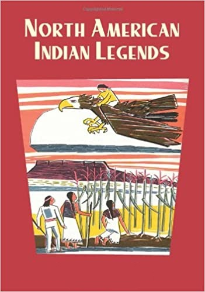

0
стр. з
0
сторінок

завантаження...

Легенды североамериканских индейцев
Книгу адаптировала Людмила Жебрунова
Метод чтения Ильи Франка
Сontents
01. The Bear Man02. How Glooskap Conquered the Great Bull-Frog03. How the Toad and Porcupine Lost their Noses04. The Meeting of the Wild Animals05. The Story of Grizzly Bear and Beaver06. How Master Lox as a Raccoon Killed the Bear and the Black Cats07. The Ants That Pushed on the Sky08. The Little Boy Man09. The Daughter of the Sun10. The Girl Who Married the Star11. The Man Who Married the Moon12. The Laugh-maker13. The Friendly Skeleton
The Bear Man
(Человек-Медведь).
A man went hunting in the mountains (человек пошел охотиться в горы; to go hunting) and came across a black bear (и набрел на черного медведя; to come across — набрести; across — поперек; в ширину; на ту сторону; на той стороне; напротив; cross — крест), which he wounded with an arrow (которого он ранил стрелой). The bear turned and started to run the other way (медведь повернулся и начал убегать в другую/противоположную сторону), and the hunter followed (а охотник последовал /за ним/), shooting one arrow after another into it (выпуская одну стрелу за другой в него; to shoot — стрелять) without bringing it down (/так и/ не подстрелив его; to bring down — подстрелить: «принести вниз = опустить»). Now, this was a medicine bear (так вот, это был волшебный медведь), and could talk or read the thoughts of people (и /он/ мог говорить или читать мысли людей) without their saying a word (/даже если/ они не произносили ни слова: «без их произнесения слова»).
mountains [`mauntInz], across [q`krOs], wound [wHnd], turn [tWn]
A man went hunting in the mountains and came across a black bear, which he wounded with an arrow. The bear turned and started to run the other way, and the hunter followed, shooting one arrow after another into it without bringing it down. Now, this was a medicine bear, and could talk or read the thoughts of people without their saying a word.
At last he stopped (наконец он остановился) and pulled the arrows out of his side (и вытащил стрелы из своего бока) and gave them to the man (и отдал их человеку; to give), saying (говоря), "It is of no use for you to shoot at me (нет никакой пользы тебе стрелять в меня), for you can not kill me (ибо ты не можешь убить меня). Come to my house and let us live together (пойдем в мой дом и давай жить вместе)." The hunter thought to himself (охотник подумал про себя; to think), "He may kill me (он может убить меня)"; but the bear read his thoughts and said (но медведь прочитал его мысли и сказал), "No, I won't hurt you (нет, я не причиню тебе вреда; to hurt — причинить боль; ранить; ушибить)." The man thought again (мужчина подумал снова), "How can I get anything to eat (как я смогу достать что-либо поесть = достать себе пропитание)?" but the bear knew his thoughts (медведь понял = прочитал его мысли; to know — знать; понять), and said, "There shall be plenty (там будет довольно/достаточно; plenty — обилие)." So the hunter went with the bear (поэтому охотник пошел с медведем).
pull [pul], arrow [`xrqu], shoot [SHt], hurt [hWt], read /прош. вр./ [red], hunter [`hAntq]
At last he stopped and pulled the arrows out of his side and gave them to the man, saying, "It is of no use for you to shoot at me, for you can not kill me. Come to my house and let us live together." The hunter thought to himself, "He may kill me"; but the bear read his thoughts and said, "No, I won't hurt you." The man thought again, "How can I get anything to eat?" but the bear knew his thoughts, and said, "There shall be plenty." So the hunter went with the bear.
They went on together (они шли вместе; to go on — идти дальше, продолжать идти) until they came to a hole in the side of the mountain (пока не пришли к берлоге в склоне горы; hole — дыра; отверстие; нора, берлога; side — край, сторона), and the bear said (и медведь сказал), "This is not where I live (это не /то место/, где я живу), but there is going to be a council here (но здесь будет проходить совет) and we will see what they do (и мы посмотрим, что они сделают)." They went in (они вошли), and the hole widened as they went (и берлога расширялась по мере продвижения внутрь: «когда они шли/продвигались»), until they came to a large cave (пока они не добрались до большой пещеры) like a townhouse (как городской дом). It was full of bears (он был полон медведей) — old bears (старых медведей), young bears (молодых медведей), and cubs (и детенышей), white bears (белых медведей), black bears (черных медведей), and brown bears (и бурых медведей) — and a large white bear was the chief (и большой белый медведь был /их/ вождем).
council [kaunsl], widen [waIdn], cave [keIv]
They went on together until they came to a hole in the side of the mountain, and the bear said, "This is not where I live, but there is going to be a council here and we will see what they do." They went in, and the hole widened as they went, until they came to a large cave like a townhouse. It was full of bears-old bears, young bears, and cubs, white bears, black bears, and brown bears—and a large white bear was the chief.
They sat down in a corner (они уселись в углу; to sit down), but soon the bears scented the hunter (но вскоре медведи учуяли охотника) and began to ask (и начали спрашивать; to begin), "What is it that smells bad (что это, что так воняет: «дурно пахнет»)?" The chief said (вождь сказал), "Don't talk so (не говорите так); it is only a stranger came to see us (это просто чужак пришел повидать нас = к нам в гости; to come to see — навестить). Let him alone (оставьте его одного = в покое)."
down [daun], talk [tLk], so [squ], alone [q`lqun]
They sat down in a corner, but soon the bears scented the hunter and began to ask, "What is it that smells bad?" The chief said, "Don't talk so; it is only a stranger came to see us. Let him alone."
Food was getting scarce in the mountains (пропитание становилось скудным в горах), and the council was to decide (и совет должен быть решить) what to do about it (что делать с этим: «насчет этого»). They had sent out messengers all over (они разослали посыльных повсюду), and while they were talking (и пока они беседовали) two bears came in and reported (два медведя вошли и сообщили) that they had found a country in the low grounds (что они нашли страну/местность в нижних землях) where there were so many chestnuts and acorns (где было так много каштанов и желудей) that mast was knee deep (что в них можно утонуть по колено: «что корм был /по/ колено глубиной»; mast — плодокорм).
messenger [`mesInGq], chestnut [`CesnAt], acorn [`eIkLn], report [rI`pLt]
Food was getting scarce in the mountains, and the council was to decide what to do about it. They had sent out messengers all over, and while they were talking two bears came in and reported that they had found a country in the low grounds where there were so many chestnuts and acorns that mast was knee deep.
Then they were all pleased (тогда они были = стали все довольны), and got ready for a dance (и приготовились к танцу; to get ready — готовиться: «становиться готовым»), and the dance leader was the one (и руководитель танца = ведущий в танце был тот) the Indians call "Long Hams" (/кого/ индейцы называют Длинные Ляжки; ham — бедро, ляжка; hams — /разг./ зад), a great black bear that is always lean (огромный черный медведь, который всегда /остается/ тощим). After the dance the bears noticed the hunter's bow (после танца медведи заметили лук охотника) and arrows (и стрелы), and one said (и один сказал), "This is what men use to kill us (это /то/, что люди используют, чтобы убивать нас). Let us see (давайте посмотрим) if we can manage them (сможем ли мы управиться с ними), and may be we can fight man (и, может быть, мы сможем сражаться с человеком) with his own weapons (его собственным оружием)." So they took the bow and arrows (поэтому они взяли лук и стрелы; to take) from the hunter to try them (у охотника, чтобы попробовать).
lean [lJn], manage [`mxnIG], fight [faIt]
Then they were all pleased, and got ready for a dance, and the dance leader was the one the Indians call "Long Hams," a great black bear that is always lean. After the dance the bears noticed the hunter's bow and arrows, and one said, "This is what men use to kill us. Let us see if we can manage them, and may be we can fight man with his own weapons." So they took the bow and arrows from the hunter to try them.
They fitted the arrow (они приладили стрелу) and drew back the string (и тянули назад тетиву; to draw), but when they let go (но когда они отпустили) it caught in their long claws (она зацепилась за их длинные когти; to catch) and the arrows dropped to the ground (и стрелы упали на землю). They saw that they could not use the bow and arrows (они увидели, что они не могли пользоваться луком и стрелами) and gave them back to the man (и отдали их назад человеку). When the dance and the council were over (когда танец и совет были закончены; to be over — закончиться: «быть через»), they began to go home (они начали расходиться по домам), excepting the White Bear chief (исключая = за исключением Белого Медведя-вождя), who lived there (который жил там), and at last the hunter and the bear went out together (и наконец охотник и медведь вышли вместе).
claw [klL], over [`quvq], use [ju:z], back [bxk], excepting [Ik`septIN]
They fitted the arrow and drew back the string, but when they let go it caught in their long claws and the arrows dropped to the ground. They saw that they could not use the bow and arrows and gave them back to the man. When the dance and the council were over, they began to go home, excepting the White Bear chief, who lived there, and at last the hunter and the bear went out together.
They went on (они шли) until they came to another hole (пока они не пришли к другой берлоге) in the side of the mountain (в склоне горы), when the bear said (когда = и тут медведь сказал), "This is where I live (это = вот где я живу)," and they went in (и они вошли внутрь). By this time the hunter was very hungry (к этому времени охотник был очень голоден; hunger — голод) and was wondering (и размышлял/задавался вопросом) how he could get something to eat (как он мог раздобыть что-либо поесть). The other knew his thoughts (другой = медведь знал его мысли), and sitting up on his hind legs (и, усевшись на свои задние ноги) he rubbed his stomach with his forepaws (он потер свой живот своими передними лапами) —so (/вот/ так) —and at once he had both paws full of chestnuts (и сразу же у него обе лапы наполнились каштанами: «обе лапы /стали/ полны каштанов») and gave them to the man (и /он/ дал их человеку).
hole [hqul], hind [haInd], stomach [`stAmqk], forepaw [`fLpL]
They went on until they came to another hole in the side of the mountain, when the bear said, "This is where I live," and they went in. By this time the hunter was very hungry and was wondering how he could get something to eat. The other knew his thoughts, and sitting up on his hind legs he rubbed his stomach with his forepaws—so—and at once he had both paws full of chestnuts and gave them to the man.
He rubbed his stomach again (он потер свой живот снова) —so (вот так) —and had his paws full of huckleberries (и его лапы наполнились черникой), and gave them to the man (и /он/ дал их человеку). He rubbed again (он потер снова) —so (вот так) —and gave the man both paws full of blackberries (и дал/протянул человеку обе лапы, полные ежевики). He rubbed again (он потер снова) —so (вот так) —and had his paws full of acorns (и его лапы наполнились желудями), but the man said (но человек сказал) that he could not eat them (что он не мог есть их), and that he had enough already (и что он съел: «имел = получил» уже достаточно).
full [ful], already [Ll`redI]
He rubbed his stomach again—so—and had his paws full of huckleberries, and gave them to the man. He rubbed again—so —and gave the man both paws full of blackberries. He rubbed again—so —and had his paws full of acorns, but the man said that he could not eat them, and that he had enough already.
The hunter lived in the cave with the bear all winter (охотник жил в пещере с медведем всю зиму), until long hair like that of a bear (пока длинные волосы, как те, /что/ у медведя; until — /до тех пор/ пока /не/) began to grow all over his body (/не/ начали расти по всему его телу) and he began to act like a bear (и он /не/ начал вести себя как медведь); but he still walked like a man (но он все еще ходил, как человек). One day in early spring the bear said to him (однажды ранней весной медведь сказал ему), "Your people down in the settlement (твой народ внизу в поселке; to settle — поселяться, устраиваться) are getting ready for a grand hunt in these mountains (готовится к великой охоте в этих горах), and they will come to this cave (и они придут в эту пещеру) and kill me (и убьют меня) and take these clothes from me (и заберут эти одежды у меня)"—he meant his skin (он имел в виду свою шкуру; to mean) —"but they will not hurt you (но они не причинят тебе вреда) and will take you home with them (и заберут тебя домой с ними = с собой)."
walk [wLk], settlement [`setlmqnt], clothes [klquDz]
The hunter lived in the cave with the bear all winter, until long hair like that of a bear began to grow all over his body and he began to act like a bear; but he still walked like a man. One day in early spring the bear said to him, "Your people down in the settlement are getting ready for a grand hunt in these mountains, and they will come to this cave and kill me and take these clothes from me"—he meant his skin—"but they will not hurt you and will take you home with them."
The bear knew (медведь знал) what the people were doing down in the settlement (что люди делали внизу в поселке) just as he always knew (как он всегда знал) what the man was thinking about (о чем думал человек). Some days passed (несколько дней прошло) and the bear said again (и медведь сказал снова), "This is the day when the Topknots will come to kill me (это день, когда Пучковолосые придут убить меня; topknot — пучок волос на голове, хохолок; top — верхушка; макушка; knot — узел), but the Split-noses will come first and find us (но Расщепленные Носы придут первые и найдут нас). When they have killed me (когда они убьют меня) they will drag me outside the cave (они вытащат меня наружу /из/ пещеры) and take off my clothes (и снимут мою одежду) and cut me in pieces (и разрежут меня на кусочки). You must cover the blood with leaves (ты должен засыпать кровь листьями; to cover — покрывать), and when they are taking you away (и когда они будут забирать тебя прочь) look back (посмотри назад) after you have gone a piece (после того, как ты отойдешь на некоторое расстояние; piece — кусок, штука; некоторое количество) and you will see something (и ты кое-что увидишь)."
find [faInd], knot [nOt], outside ["aut`saId], piece [pJs], blood [blAd]
The bear knew what the people were doing down in the settlement just as he always knew what the man was thinking about. Some days passed and the bear said again, "This is the day when the Topknots will come to kill me, but the Split-noses will come first and find us. When they have killed me they will drag me outside the cave and take off my clothes and cut me in pieces. You must cover the blood with leaves, and when they are taking you away look back after you have gone a piece and you will see something."
Soon they heard the hunters coming up the mountain (вскоре они услышали, как охотники поднимались в горы; to hear), and then the dogs found the cave (и затем собаки нашли пещеру; to find) and began to bark (и начали лаять). The hunters came and looked inside (охотники пришли и заглянули внутрь) and saw the bear (и увидели медведя) and killed him with their arrows (и убили его своими стрелами). Then they dragged him outside the cave (затем они вытащили его наружу /из/ пещеры) and skinned the body (и сняли шкуру с его тела; to skin — снимать шкуру; skin — кожа; шкура) and cut it in quarters to carry home (и разрезали его на четвертины, чтобы нести домой). The dogs kept on barking (собаки продолжали лаять) until the hunters thought (пока охотники не подумали; to think) there must be another bear in the cave (/что/ там должен быть еще один медведь в пещере). They looked in again (они заглянули внутрь снова) and saw the man away (и увидели человека вдали) at the farther end (у дальнего конца).
quarter [`kwO:tq], bark [bRk], farther [`fRDq]
Soon they heard the hunters coming up the mountain, and then the dogs found the cave and began to bark. The hunters came and looked inside and saw the bear and killed him with their arrows. Then they dragged him outside the cave and skinned the body and cut it in quarters to carry home. The dogs kept on barking until the hunters thought there must be another bear in the cave. They looked in again and saw the man away at the farther end.
At first they thought it was another bear (вначале они подумали: это был еще один медведь) on account of his long hair (из-за его длинных волос; on account of — из-за, вследствие), but they soon saw (но они вскоре увидели) it was the hunter (/что/ это был охотник) who had been lost the year before (который был потерян = потерялся /за/ год перед этим; to lose), so they went in (поэтому они вошли) and brought him out (и вывели его наружу; to bring out — выводить /наружу/). Then each hunter took a load of the bear meat (затем каждый охотник взял ношу медвежьего мяса; load — груз, тяжесть, ноша) and they started home again (и они отправились домой опять), bringing the man and the skin with them (унося/уводя = забрав человека и шкуру с собой). Before they left (прежде чем они ушли; to leave — оставлять, покидать; уходить) the man piled leaves over the spot (человек навалил листья над местом; to pile — складывать, сваливать в кучу; pile — куча, груда, стопка) where they had cut up the bear (где они разрезали медведя), and when they had gone a little way (и когда они отошли немного) he looked behind (он посмотрел назад) and saw the bear rise up out of the leaves (и увидел, /как/ медведь поднялся из листьев), shake himself (отряхнулся), and go back into the woods (и пошел назад в лес).
behind [bI`haInd], leaves [lJvz], shake [SeIk]
At first they thought it was another bear on account of his long hair, but they soon saw it was the hunter who had been lost the year before, so they went in and brought him out. Then each hunter took a load of the bear meat and they started home again, bringing the man and the skin with them. Before they left the man piled leaves over the spot where they had cut up the bear, and when they had gone a little way he looked behind and saw the bear rise up out of the leaves, shake himself, and go back into the woods.
When they came near the settlement (когда они подошли близко к поселку) the man told the hunters (человек сказал охотникам) that he must be shut up (что он должен быть заперт) where no one could see him (где никто не мог бы увидеть его), without anything to eat or drink (без чего-либо поесть и попить = без еды и питья) for seven days and nights (на семь дней и ночей), until the bear nature had left him (пока медвежья сущность не покинет его; nature — сущность, основное свойство; характер, нрав, натура) and he became like a man again (и он /не/ станет снова как человек). So they shut him up alone in a house (поэтому они заперли его одного в доме) and tried to keep very still about it (и постарались держаться очень тихо = молчать по этому /поводу/), but the news got out (но новость стала известной: «выбралась»; to get out) and his wife heard of it (и его жена услышала о ней; to hear).
seven [sevn], nature [`neICq], heard [hWd]
When they came near the settlement the man told the hunters that he must be shut up where no one could see him, without anything to eat or drink for seven days and nights, until the bear nature had left him and he became like a man again. So they shut him up alone in a house and tried to keep very still about it, but the news got out and his wife heard of it.
She came for her husband (она пришла за своим мужем), but the people would not let her near him (но люди не подпускали ее к нему); but she came every day and begged so hard (но она приходила каждый день и упрашивала так настойчиво; hard — жесткий; упорный) that at last after four or five days (что, наконец, после четырех или пяти дней) they let her have him (они позволили ей взять его = забрать его). She took him home with her (она забрала его домой с собой), but in a short time he died (но через короткое время он умер), because he still had a bear's nature (потому что у него все еще была медвежья сущность) and could not live like a man (и /он/ не мог жить как человек). If they had kept him shut up and fasting (если бы они продержали его запертым и постящимся; to keep) until the end of the seven days (до конца семи дней) he would have become a man again (он стал бы человеком снова) and would have lived (и жил бы).
live [lIv], like [laIk], fast [fRst]
She came for her husband, but the people would not let her near him; but she came every day and begged so hard that at last after four or five days they let her have him. She took him home with her, but in a short time he died, because he still had a bear's nature and could not live like a man. If they had kept him shut up and fasting until the end of the seven days he would have become a man again and would have lived.
How Glooskap Conquered the Great Bull-Frog
(как Глускап покорил/победил великого Лягушку-Быка; bull-frog — лягушка-бык /вид больших лягушек, издающих громкое кваканье; зд. — имя и облик героя/).
Of old times (в старые времена), there was an Indian village (была = существовала индейская деревушка) far away among the mountains (далеко среди гор), little known to other men (мало известная другим людям; men — мужчины; люди). And the dwellers therein were very comfortable (и жителям в ней было очень удобно): the men hunted every day (мужчины охотились каждый день), the women did the work at home (женщины делали работу дома), and all went well in all things (и все было хорошо: «и все шло хорошо во всех вещах») save in this (кроме одного: «этого»). The town was by a brook (город был возле ручья = находился возле небольшой речки), and except in it (и кроме /как/ в нем) there was not a drop of water in all the country round (не было ни капельки воды по всей округе; country — страна; /сельская/ местность; земля), unless in a few rain-puddles (разве что в нескольких дождевых лужах). No one there had ever found even a spring (никто никогда не находил даже ключа/источника; to find).
village [`vIlIG], mountain [`mauntIn], dweller [`dwelq], comfortable [`kAmfqt(q)bql]
Of old times, there was an Indian village far away among the mountains, little known to other men. And the dwellers therein were very comfortable: the men hunted every day, the women did the work at home, and all went well in all things save in this. The town was by a brook, and except in it there was not a drop of water in all the country round, unless in a few rain-puddles. No one there had ever found even a spring.
Now these Indians were very fond of good water (так вот, эти индейцы очень любили хорошую воду; now — зд.: так вот /используется рассказчиком для привлечения внимания, обдумывания, что сказать далее/; to be fond of smb., smth. — любить что-либо, кого-либо; испытывать привязанность). The brook was of a superior quality (ручей был превосходной чистоты: «превосходного качества»), and they became dainty over it (и они стали привередливыми из-за него = кичились им; over — зд.: через, посредством; выражает причину; dainty — привередливый, разборчивый, избирательный; /уст./ осторожный, сдержанный; с неохотой делающий что-либо).
superior [sju`pIqrIq], quality [`kwOlItI], dainty [`deIntI]
Now these Indians were very fond of good water. The brook was of a superior quality, and they became dainty over it.
But after a time they began to observe (но после некоторого времени = спустя /некоторое/ время они начали замечать) that the brook was beginning to run low (что ручей начал пересыхать; to run low — почти исчерпаться, почти иссякнуть: «бежать низко = снижаться»), and that not in the summer time (и что не /только/ в летнее время), but in autumn (но /и/ осенью), even after the rains (даже после дождей). And day by day it diminished (и день ото дня он уменьшался), until its bed was as dry as a dead bone (пока его дно не стало таким сухим, как мертвая кость; bed — кровать; ложе; дно) in the ashes of a warm fire (в горячих углях: «в золе/пепле теплого костра»; fire — огонь, пламя).
observe [qb`zWv], autumn [`Ltqm], diminish [dI`mInIS], fire [`faIq]
But after a time they began to observe that the brook was beginning to run low, and that not in the summer time, but in autumn, even after the rains. And day by day it diminished, until its bed was as dry as a dead bone in the ashes of a warm fire.
Now it was said (и вот говорилось = и было известно) that far away up in the land (что /где-то/ далеко выше = вверх по течению в той же стране/земле; up — вверху, вверх) where none had ever been (где никто никогда не бывал) there was on this very stream another Indian village (была на том же самом ручье = на той же самой реке другая/еще одна индейская деревушка); but what manner of men dwelt therein (но что за люди там жили; to dwell — жить, обитать, находиться, пребывать; manner — способ; манера; нравы, обычаи) no one knew (никто не знал). And thinking that these people of the upper country (и полагая, что эти люди из страны вверх по течению; upper country — верхняя страна, зд.: страна вверх по течению реки) might be in some way concerned in the drought (могли быть каким-то образом виноваты в засухе; concerned — замешаны /в деле/) they sent one of their number (они послали одного из своих; number — номер; число; количество; to send) to go and see into the matter (пойти и разобраться в этом деле: «посмотреть в вопрос»; matter — вещество, материя; сущность; вопрос, дело).
stream [strJm], country [`kAntrI], might [maIt], concerned [kqn`sq:nd], drought [draut]
Now it was said that far away up in the land where none had ever been there was on this very stream another Indian village; but what manner of men dwelt therein no one knew. And thinking that these people of the upper country might be in some way concerned in the drought, they sent one of their number to go and see into the matter.
And after he had traveled three days he came to the place (и после того как он был в пути три дня, он пришел на место); and there he found (и там он обнаружил; to find — найти; обнаружить) that a dam had been raised across the rivulet (что плотина была построена через речушку), so that no water could pass (так, что вода не могла пройти), for it was all kept in a pond (ибо вся она собиралась в пруд: «ибо она была вся удерживаема в пруду»; to keep — удерживать, сохранять). Then asking them why they had made this mischief (тогда /он/ спросил их, почему они сделали это зло = такую вредную вещь; mischief — вред; повреждение; убытки, ущерб), since the dam was of no use to them (ведь запруда была бесполезна для них; use — польза), they bade him go and see their chief (они попросили его пойти и увидеться с вождем = они предложили ему встретиться с вождем; to bid — просить; приказывать), by whose order this had been built (по чьему приказу она была построена; to build).
travel [trxvl], rivulet [`rIvjulIt], mischief [`mIsCJf], use, n. [jHs], built [bIlt]
And after he had traveled three days he came to the place; and there he found that a dam had been raised across the rivulet, so that no water could pass, for it was all kept in a pond. Then asking them why they had made this mischief, since the dam was of no use to them, they bade him go and see their chief, by whose order this had been built.
And when he came to him (и когда он пришел к нему), there lay lazily in the mud a creature (там лежало лениво в грязи существо = увидел лениво развалившееся в грязи существо) who was more of a monster than a man (которое было больше чудовищем, чем человеком), though he had a human form (хотя оно имело: «он имел» человеческий облик; form — форма, облик). For he was immense to measure (ибо оно был огромно для измерения = таким громадным оно было; immense — безмерный, очень большой, огромный), like a giant (словно великан), fat (толстое), bloated (обрюзгшее/жирное; to bloat — раздувать/ся/, пухнуть, надувать/ся/), and brutal to behold (и отвратительное с виду: «и отвратительное для созерцания»; to behold — видеть, замечать, узреть). His great yellow eyes stuck from his head like pine-knots (его огромные желтые глаза торчали на его голове: «от его головы», словно наросты на сосне; to stick — торчать; knot — узел, шишка, нарост на растении), his mouth went almost from ear to ear (его рот был почти от уха до уха), and he had broad, skinny feet with long toes (и у него были широкие, перепончатые ступни = лапы с длинными пальцами; skin — кожа; toe — палец на ноге).
creature [`kri:tSq], measure [`meZq], giant [`GaIqnt], yellow [`jelqu], toes [tquz]
And when he came to him, there lay lazily in the mud a creature who was more of a monster than a man, though he had a human form. For he was immense to measure, like a giant, fat, bloated, and brutal to behold. His great yellow eyes stuck from his head like pine-knots, his mouth went almost from ear to ear, and he had broad, skinny feet with long toes.
The messenger complained to this monster (посланник пожаловался /обо всем/ чудищу), who at first said nothing (которое вначале ничего не сказало), and then croaked (а затем квакнуло), and finally replied in a loud bellow (и, наконец, ответило громким ревом), —
messenger [`mesInGq], complain [kqm`pleIn], croak [krquk], replied [rI`plaId]
The messenger complained to this monster, who at first said nothing, and then croaked, and finally replied in a loud bellow, —
"Do as you choose (поступай, как хочешь: «делай, как ты выбираешь»),
Do as you choose,
Do as you choose.
"What do I care (какое мне дело; to care —заботиться, беспокоиться)?
What do I care?
What do I care?
"If you want water (если тебе нужна вода: «если ты хочешь воду»),
If you want water,
If you want water,
Go somewhere else (ступай куда-нибудь еще = в другое место)."
choose [tSu:z], care [keq]
"Do as you choose,
Do as you choose,
Do as you choose.
"What do I care?
What do I care?
What do I care?
"If you want water,
If you want water,
If you want water,
Go somewhere else."
Then the messenger remonstrated (тогда посланник возразил), and described the suffering of the people (и описал страдание людей; to suffer — страдать), who were dying of thirst (которые умирали от жажды). And this seemed to please the monster (и это, казалось, обрадовало чудовище; to please — доставить удовольствие, обрадовать), who grinned (которое ухмыльнулось). At last he got up (наконец, оно поднялось; to get up), and, making a single spring to the dam (и, в один прыжок достигнув плотины: «сделав единственный прыжок к плотине»), took an arrow (взяло стрелу ake) and bored a hole in it (и просверлило дырку в ней = в запруде), so that a little water trickled out (так, что немного воды протекло тонкой струйкой; to trickle out — вытекать тонкой струйкой, капать), and then he bellowed (а затем оно завопило),—
remonstrate [rI`mOnstreIt], describe [dI`skraIb], thirst [TWst], arrow [`xrqu], bellow [`belqu]
Then the messenger remonstrated, and described the suffering of the people, who were dying of thirst. And this seemed to please the monster, who grinned. At last he got up, and, making a single spring to the dam, took an arrow and bored a hole in it, so that a little water trickled out, and then he bellowed,—
"Up and begone (вставай и убирайся /прочь/)!
Up and begone!
Up and begone!"
begone [bI`gOn]
"Up and begone!
Up and begone!
Up and begone!"
So the man departed (и вот человек ушел), little comforted (мало утешившись: «утешенный»). He came to his home (он пришел в свой дом = к себе домой), and for a few days there was a little water in the stream (и в течение нескольких дней было немного воды в реке); but this soon stopped (но вскоре это прекратилось), and there was great suffering again (и снова начались ужасные страдания: «и были сильные страдания снова»; to suffer — страдать).
depart [dI`pQ:t], few [fjH], suffering [`sAf(q)rIN]
So the man departed, little comforted. He came to his home, and for a few days there was a little water in the stream; but this soon stopped, and there was great suffering again.
Now these Indians (так вот/ну, а эти индейцы), who were the honestest fellows in all the world (которые были наичестнейшими людьми: «ребятами» во всем мире), and never did harm to any one save their enemies (и никогда не причиняли вреда никому, кроме своих врагов), were in a sorry pickle (были = оказались в плачевном положении; to be in a sorry/pretty pickle; pickle — рассол; уксус для маринада; sorry — огорченный, сожалеющий, полный сожаления; жалкий, несчастный, плохой). For it is a bad thing (ибо очень плохо: «ибо это очень плохая вещь») to have nothing but water to drink (не иметь ничего, кроме воды, чтобы пить), but to want that (но желать этого) is to be mightily dry (есть = значит быть страшно испытывающим жажду; dry — сухой, обезвоженный; испытывающий жажду; mightily — весьма, мощно, очень, сильно). And the great Glooskap (и великий Глускап), who knew all that was passing in the hearts of men and beasts (который знал все, что происходило в сердцах = в душах людей и зверей), took note of this (заметил это; to take note of smth. — заметить что-либо), and when he willed it (и когда он желал этого) he was among them (он мог оказаться среди них: «он был среди них»); for he ever came as the wind comes (ибо он всегда приходил, как приходит ветер), and no man wist how (и никому не ведомо, как: «и никто не знал, как»; wist — прошедшее /past indicative/ от to wit — знать /архаич./).
Indians [`IndIqnz], honest [`OnIst], great [greIt], enemy [`enImI], among [q`mAN]
Now these Indians, who were the honestest fellows in all the world, and never did harm to any one save their enemies, were in a sorry pickle. For it is a bad thing to have nothing but water to drink, but to want that is to be mightily dry. And the great Glooskap, who knew all that was passing in the hearts of men and beasts, took note of this, and when he willed it he was among them; for he ever came as the wind comes, and no man wist how.
And just before he came (и как раз перед тем, как он пришел) all of these good fellows had resolved in council (все эти добрые малые /уже/ решили на совете) that they would send the boldest man among them to certain death (что они отправят наихрабрейшего человека среди них на верную смерть), even to the village (даже в деревню) which built the dam (которая выстроила плотину; to build) that kept the water (что сдерживала воду; to keep) which filled the brook (которая наполняла реку) that quenched their thirst (утолявшую их жажду: «которая утоляла их жажду»), whenever it was not empty (тогда, когда она не была пустой = пересохшей; whenever — всякий раз, когда; когда бы ни). And when there he was (и когда он = храбрец нашелся: «и когда там он был») either to obtain that (либо чтобы добиться того; to obtain — добиваться, достигать /чего-либо/) they should cut the dam (чтобы они разрыли/раскопали запруду), or do something desperate (либо сделать что-нибудь отчаянное), and to this intent he should go armed (и для этого: «и для этой цели» ему нужно пойти вооруженным; intent — намерение, цель), and sing his death-song as he went (и петь свою песнь смерти в пути: «когда он шел»). And they were all agog (и все они были взбудоражены/в нетерпении; to be all agog — сгорать от нетерпения, быть в возбужденном состоянии).
resolve [rI`zOlv], council [kaunsl], certain [sWtn], either [`aIDq], obtain [qb`teIn], desperate [`desp(q)rIt], death [deT], agog [q`gOg]
And just before he came all of these good fellows had resolved in council that they would send the boldest man among them to certain death, even to the village which built the dam that kept the water which filled the brook that quenched their thirst, whenever it was not empty. And when there he was either to obtain that they should cut the dam, or do something desperate, and to this intent he should go armed, and sing his death-song as he went. And they were all agog.
Then Glooskap, who was much pleased with all this (затем Глускап, который был весьма доволен всем этим), for he loved a brave man (так как ему понравился храбрец: «храбрый человек»), came among them (предстал среди них) looking terribly ferocious (с ужасно свирепым видом: «выглядя ужасно свирепым»); in all the land there was not one who seemed half so horrible (по всей земле не было никого, кто/хотя бы/ вполовину казался таким жутким). For he appeared ten feet high (ибо он показался десяти футов в вышину; to appear — показываться; появляться), with a hundred red and black feathers in his scalp-lock (с сотней красных и черных перьев в пучке волос на голове; scalp-lock — прядь волос, оставляемая на бритой голове как вызов врагам у некоторых индейских племен), his face painted like fresh blood (/с/ лицом, раскрашенным, словно свежая кровь) with green rings round his eyes (с зелеными кругами вокруг его глаз), a large clamshell hanging from each ear (/с/ большой ракушкой, свисающей из каждого его уха = при этом из каждого уха свисало по большой раковине; clamshell — раковина моллюска), a spread eagle (/при этом/ орел с распростертыми крыльями; to spread — расстилать, развертывать), very awful to behold (очень страшный с виду: «весьма ужасный для созерцания»), flapping its wings from the back of his neck (хлопал своими крыльями у него на загривке; back of one’s neck — загривок: «зад шеи»; back of the head — затылок), so that as he strode into the village (так что, когда он прошествовал в деревню; to stride — шагать /большими шагами/) all hearts quaked (все сердца задрожали = у всех затрепетали сердца). Being but simple people (простые люди: «будучи лишь простыми людьми»), they accounted (они решили) that this must be, if not Lox the Great Wolverine (что это должен быть если не /сам/ Локс Великий Росомаха), at least Mitchehant (/то/ по крайней мере Митчехант), the devil himself in person (воплощенный дьявол: «сам дьявол во плоти»), turned Wabanaki (/который/ превратился в вабанаки[1]; to turn — превращать); and they admired him greatly (и они восхитились им весьма), and the squaws said (а скво сказали/заявили; squaw — скво, индианка в Северной Америке) they had never seen aught so lovely (что они никогда не видели ничего более прекрасного; aught — нечто, что-либо).
ferocious [fq`rquSqs], horrible [`hOrqbql], quake [kweIk], wolverine [`wulvqrJn], devil [devl], aught [O:t]
Then Glooskap, who was much pleased with all this, for he loved a brave man, came among them looking terribly ferocious; in all the land there was not one who seemed half so horrible. For he appeared ten feet high, with a hundred red and black feathers in his scalp-lock, his face painted like fresh blood with green rings round his eyes, a large clamshell hanging from each ear, a spread eagle, very awful to behold, flapping its wings from the back of his neck, so that as he strode into the village all hearts quaked. Being but simple people, they accounted that this must be, if not Lox the Great Wolverine, at least Mitchehant, the devil himself in person, turned Wabanaki; and they admired him greatly, and the squaws said they had never seen aught so lovely.
Then Glooskap, having heard the whole story (затем Глускап, выслушав весь рассказ), bade them be of good cheer (приказал им ободриться; to bid; cheer — настроение; источник хорошего настроения), declaring that he would soon set all to rights (заявив, что он скоро приведет все в порядок; to set to rights — навести порядок, привести в порядок). And he without delay (и он без промедления) departed up the bed of the brook (ушел вверх /по/ руслу ручья; bed — кровать, постель, ложе; дно /реки, моря/); and coming to the town (и, придя в город = достигнув города), sat down and bade a boy bring him water to drink (сел и приказал ребенку: «мальчику» принести ему воды напиться). To which the boy replied (на что мальчик ответил) that no water could be had in that town (что никакую воду нельзя получить в том городе) unless it were given out by the chief (если только ее не раздает вождь; to give out — раздавать). "Go then to your chief (пойди тогда к своему вождю)," said the Master (сказал хозяин), "and bid him hurry (да прикажи ему поторопиться), or, verily (или, поистине), I will know the reason why (я тебе покажу; I will /want to/ know the reason why — «я узнаю/хочу узнать причину, почему», устойчивое выражение, обозначающее угрозу выяснить что-либо /силой/)."
cheer [CJq], declare [dI`kleq], delay [dI`leI], reply [rI`plaI], chief [CJf]
Then Glooskap, having heard the whole story, bade them be of good cheer, declaring that he would soon set all to rights. And he without delay departed up the bed of the brook; and coming to the town, sat down and bade a boy bring him water to drink. To which the boy replied that no water could be had in that town unless it were given out by the chief. "Go then to your chief," said the Master, "and bid him hurry, or, verily, I will know the reason why."
And this being told (и так сказав: «и это будучи сказано»), Glooskap received no reply for more than an hour (Глускап не получал никакого ответа больше часа), during which time he sat on a log (в течение которого времени = и в течение этого времени он сидел на бревне; to sit) and smoked his pipe (и курил свою трубку). Then the boy returned with a small cup (затем мальчик вернулся с маленькой чашей), and this not half full (да и то не вполовину наполненной), of very dirty water (очень грязной воды).
hour [`auq], during [`djuqrIN], return [rI`tq:n], full [ful], dirty [`dWtI]
And this being told, Glooskap received no reply for more than an hour, during which time he sat on a log and smoked his pipe. Then the boy returned with a small cup, and this not half full, of very dirty water.
So he arose (тогда он поднялся; to arise), and said to the boy (и сказал мальчику), "I will go and see your chief (я пойду и встречусь с вашим вождем), and I think he will soon give me better water than this (и я думаю, /что/ он вскоре даст мне лучшую = получше воду, чем эта)." And having come to the monster (и, придя к чудовищу), he said, "Give me to drink (дай мне напиться), and that of the best (и лучшей воды: «да из самого лучшего»), at once (сейчас же), thou Thing of Mud (ты, Грязнуля; thou — ты /уст., поэт./; mud — грязь)!" But the chief reviled him (но вождь осыпал его бранью), and said, "Get thee hence (убирайся прочь: «убери себя отсюда»; thee — тебя, тебе, тобой; объект. падеж от thou — ты /уст./), to find water where thou canst (искать = ищи воду, где сможешь)." Then Glooskap thrust a spear into his belly (тогда Глускап вонзил копье в его живот; to thrust — колоть, пронзать, наносить колющий удар; тыкать, протыкать), and lo (и вот/и смотри; lo — /межд., уст./ вот!, слушай!, смотри! = lo and behold!)! there gushed forth a mighty river (вперед ринулась могучая река); even all the water which should have run on (как раз вся та вода, которая должна была протекать; to run on — продолжать бежать, течь) while in the rivulet (пока /она была бы/ в речушке = если бы не было запруды), for he had made it into himself (ибо он направил ее в себя; to make — делать). And Glooskap, rising high as a giant pine (поднявшись ввысь, словно гигантская сосна), caught the chief in his hand (подхватил вождя в свою руку; to catch — ловить) and crumpled in his back with a mighty grip (и смял его спину могучим захватом). And lo (и гляди-ка)! it was the Bull-Frog (это был /всего-то/ Лягушка-Бык). So he hurled him with contempt into the stream (поэтому он швырнул его с презрением в поток), to follow the current (чтобы его унесло течением: «/чтобы он/ последовал за течением»).
arose [q`rquz], revile [rI`vaIl], spear [`spIq], rivulet [`rIvjulIt], mighty [`maItI], crumple [krAmpl], hurl [hWl], current [`kAr(q)nt]
So he arose, and said to the boy, "I will go and see your chief, and I think he will soon give me better water than this." And having come to the monster, he said, "Give me to drink, and that of the best, at once, thou Thing of Mud!" But the chief reviled him, and said, "Get thee hence, to find water where thou canst." Then Glooskap thrust a spear into his belly, and lo! there gushed forth a mighty river; even all the water which should have run on while in the rivulet, for he had made it into himself. And Glooskap, rising high as a giant pine, caught the chief in his hand and crumpled in his back with a mighty grip. And lo! it was the Bull-Frog. So he hurled him with contempt into the stream, to follow the current.
And ever since that time (и всегда с того времени = и с тех пор) the Bull-Frog's back has crumpled wrinkles in the lower part (спина Лягушки-Быка имеет вмятые складки на нижней части), showing the prints of Glooskap's awful squeeze (показывающие следы/отпечатки ужасной хватки Глускапа; squeeze — сдавливание, сжатие).
wrinkle [rINkl], show [Squ], squeeze [skwJz]
And ever since that time the Bull-Frog's back has crumpled wrinkles in the lower part, showing the prints of Glooskap's awful squeeze.
Then he returned to the village (затем он вернулся в деревню); but there he found no people (но там он не обнаружил никаких людей = ни человека; to find),—no, not one (нет, ни одного). For a marvelous thing had come to pass during his absence (ибо во время его отсутствия произошло чудо; marvelous — чудесный, волшебный; marvel — чудо; /уст./ удивление; thing — вещь; случай; to come to pass — случаться, происходить), which shall be heard in every Indian's speech through all the ages (которое будет слышаться во всех индейских наречиях через все века = на протяжении всех веков). For the men, being, as I said, simple, honest folk (ибо те люди, будучи, как я сказал, простым, честным народом), did as boys do when they are hungry (поступили, как мальчишки делают, когда они голодны), and say unto one another (и сказали друг другу; unto = to), "What would you like to have, and what you (что бы тебе хотелось, а что — тебе)?" "Truly, I would be pleased with a slice of hot venison (поистине, я был бы доволен куском горячей оленины) dipped in maple-sugar and bear's oil (опущенной в кленовый сахар и медвежий жир = с подливой из кленового сахара и …; to dip — макать, окунать)." "Nay, give me for my share succotash and honey (нет уж, дай мне на мою долю суккоташ[2] и мед = суккоташ с медом)." Even so these villagers had said (даже так говорили эти /деревенские/ жители), "Suppose you had all (а если бы у тебя была вся; suppose — полагать, предполагать) the nice cold (хорошая/отличная, холодная), fresh (свежая = чистая), sparkling (игристая/пенистая; to sparkle — искриться; sparkle — искра), delicious water (восхитительная вода) there is in the world (/которая/ есть в мире), what would you do (что бы ты сделал)?"
marvelous [`mQ:v(q)lqs], during [`djuqrIN], absence [`xbs(q)ns], venison [`venIs(q)n, venzn], maple [meIpl], sugar [`SHgq], honey [`hAnI]
Then he returned to the village; but there he found no people,—no, not one. For a marvelous thing had come to pass during his absence, which shall be heard in every Indian's speech through all the ages. For the men, being, as I said, simple, honest folk, did as boys do when they are hungry, and say unto one another, "What would you like to have, and what you?" "Truly, I would be pleased with a slice of hot venison dipped in maple-sugar and bear's oil." "Nay, give me for my share succotash and honey." Even so these villagers had said, "Suppose you had all the nice cold, fresh, sparkling, delicious water there is in the world, what would you do?"
And one said that he would live in the soft mud (и один сказал, что он жил бы в мягкой грязи), and always be wet and cool (и /ему/ всегда было бы мокро и прохладно).
And another, that he would plunge from the rocks (а другой, что он бы нырнул со скал), and take headers (и погружался /бы/; to take headers — /разг./ погружаться, нырять головой вперед), diving into the deep, cold water (ныряя в глубокую, холодную воду) drinking as he dived (глотая ее при этом: «напиваясь, когда он нырял»).
And the third, that he would be washed up and down with the rippling waves (а третий, что он бы омывался вверх-вниз колыхающимися волнами = его бы накрывало волнами), living on the land (живя на суше), yet ever in the water (но /и одновременно/ всегда в воде).
Then the fourth said (тогда четвертый сказал), "Verily, you know not how to wish (поистине, вы не знаете, как желать), and I will teach you (и я научу вас). I would live in the water all the time (я бы жил в воде все время), and swim about in it forever (и плавал /бы/ в ней вечно)."
plunge [plAnG], header [`hedq], wave [weIv], verily [`verIlI]
And one said that he would live in the soft mud, and always be wet and cool.
And another, that he would plunge from the rocks, and take headers, diving into the deep, cold water, drinking as he dived.
And the third, that he would be washed up and down with the rippling waves, living on the land, yet ever in the water.
Then the fourth said, "Verily, you know not how to wish, and I will teach you. I would live in the water all the time, and swim about in it forever."
Now it chanced that these things were said in the hour (и случилось /так/, что эти вещи были произнесены в тот час) which, when it passes over the world (/в/ который, когда он проходит по миру), all the wishes uttered by men are granted (все желания, произнесенные людьми, сбываются: «даруются»). And so it was with these Indians (и так произошло: «было» с этими индейцами). For the first became a Leech (ибо первый стал Пиявкой), the second a Spotted Frog (второй — Пятнистой Лягушкой), the third a Crab (третий — Крабом), which is washed up and down with the tide (которого омывает вверх-вниз прибой), and the fourth a Fish (а четвертый — Рыбой). Ere this there had been in all the world (до этого /не/ было во всем мире /еще/; ere — /поэтич./ :до, перед) none of the creatures (ни одного из существ) which dwell in the water (что живут/обитают в воде), and now they were there (и теперь они были = и вот они появились), and of all kinds (и /притом/ всех видов). And the river came rushing and roaring on (и река пришла, стремительная и ревущая; to come on — приближаться, появляться, налетать), and they all went headlong down to the sea (и они все отправились вперед головой вниз к морю; headlong — головой вперед /о падении вниз, нырянии/; стремительно, безрассудно, очертя голову), to be washed into many lands over all the world (чтобы их смыло = унесло во многие земли/страны по всему миру).
leech [lJC], creature [`krJCq], ere [eq]
Now it chanced that these things were said in the hour which, when it passes over the world, all the wishes uttered by men are granted. And so it was with these Indians. For the first became a Leech, the second a Spotted Frog, the third a Crab, which is washed up and down with the tide, and the fourth a Fish. Ere this there had been in all the world none of the creatures which dwell in the water, and now they were there, and of all kinds. And the river came rushing and roaring on, and they all went headlong down to the sea, to be washed into many lands over all the world.
How the Toad and Porcupine Lost their Noses
(как Жаба и Дикобраз потеряли свои носы; to lose).
In the old time (в былые времена: « в старое время»), far before men knew themselves (задолго до того, как люди узнали = осознали себя), in the light before the sun (в свете до солнца = когда еще не было солнечного света), Glooskap and his brother were as yet unborn (Глускап и его брат были также еще не рождены); they waited for the day to appear (они ждали дня, чтобы появиться). Then they talked together (тогда они беседовали вместе), and the youngest said (и младший сказал), "Why should I wait (почему я должен ждать)? I will go into the world (я пойду в мир) and begin my life at once (и начну мою жизнь немедленно; at once — сразу, немедленно)." Then the elder said (тогда старший сказал), "Not so, for this were a great evil (не так = не стоит так поступать, ибо это было бы великим злом)." But the younger gave no heed to any wisdom (но младший не обратил /никакого/ внимания на мудрость = мудрые слова; to give heed to smth. — обращать внимание на что-либо): in his wickedness he broke through his mother's side (в своей злобе = упорстве он пробился сквозь бок своей матери; to break — ломать; to break through — пробить/ся/; wicked — злой; безнравственный), he rent the wall (он разорвал преграду; to rend; wall — стена); his beginning of life was his mother's death (начало его жизни было = стало смертью его матери).
appear [q`pIq], talk [tLk], world [wq:ld], once [wAns], evil [Jvl], wisdom [`wIsd(q)m], wicked [`wIkId]
In the old time, far before men knew themselves, in the light before the sun, Glooskap and his brother were as yet unborn; they waited for the day to appear. Then they talked together, and the youngest said, "Why should I wait? I will go into the world and begin my life at once." Then the elder said, "Not so, for this were a great evil." But the younger gave no heed to any wisdom: in his wickedness he broke through his mother's side, he rent the wall; his beginning of life was his mother's death.
Now, in after years (так вот, впоследствии; in after years — впоследствии), the younger brother would learn (младший брат захотел узнать) in what lay the secret of the elder's death (в чем лежал = был секрет смерти старшего). And Glooskap, being crafty (и Глускап, будучи хитроумным; craft — ремесло; ловкость, умение, искусство; сноровка), told the truth and yet lied (сказал правду и все же солгал; to tell); for his name was the Liar (ибо имя ему было Обманщик), yet did he never lie for evil (однако никогда он не лгал ради зла) or aught to harm (или чего-либо, что могло навредить). So he told his brother (итак, он сказал своему брату) that the blow of a ball (что удар клубком/шариком), or handful of the down of feathers (или пригоршней пуха перьев; down — пух, пушок; перья), would take away his life (отнимет у него жизнь; to take away — забрать, отнять); and this was true (и это было правдиво = правдой), for it would stun him (так как это его оглушило бы), but it would not prevent his returning to life (но это не помешало бы его возвращению к жизни). Then Glooskap asked the younger for his own secret (затем Глускап спросил младшего о его собственном секрете = о секрете младшего брата). And he, being determined to give the elder no time (и он, будучи настроенным не дать старшему времени; to determine — определять, устанавливать; решать), answered truly and fearlessly (ответил честно и бесстрашно), "I can only be slain by the stroke of a cat-tail or bulrush (меня можно лишить жизни только ударом рогоза или камыша = только стукнув рогозом или камышом; to slay — убивать, уничтожать, лишать жизни)."
secret [`si:krIt], crafty [`krQ:ftI], liar [`laIq], feather [`feDq], true [trH], determine [dI`tWmIn]
Now, in after years, the younger brother would learn in what lay the secret of the elder's death.
And Glooskap, being crafty, told the truth and yet lied; for his name was the Liar, yet did he never lie for evil or aught to harm. So he told his brother that the blow of a ball, or handful of the down of feathers, would take away his life; and this was true, for it would stun him, but it would not prevent his returning to life. Then Glooskap asked the younger for his own secret. And he, being determined to give the elder no time, answered truly and fearlessly, "I can only be slain by the stroke of a cat-tail or bulrush."
And then the younger (и тогда младший), having gathered the down of bird's feathers (насобирав пуха птичьих перьев), struck the elder (ударил /им/ старшего; to strike), so that he fell dead (так что тот упал мертвый = замертво; to fall), and therein he told the truth (и тем самым он /старший/ сказал правду; therein — здесь, там, в этом, в том; в этом отношении). But he soon recovered (но он вскоре оправился/пришел в себя; to recover — вновь обретать; возвращать, получать обратно), and in that was his deceit (и в этом был его обман). Howbeit it was well for the world and well for him (как бы то ни было, удачно было для мира и удачно для него) that he then gathered bulrushes (что затем он насобирал камышей) and smote his younger brother (и ударил своего младшего брата; to smite — ударять, бить), so that he died (так, что тот умер). But the plant never grew that could harm the Master (но так и не выросло растение, что могло бы поразить Хозяина), wherefore he is alive to this day (поэтому он жив до сих пор: «до этого дня»).
gather [`gxDq], dead [ded], therein [Deqr`In], truth [trHT], recover [rI`kAvq], deceit [dI`sJt], plant [plQ:nt]
And then the younger, having gathered the down of bird's feathers, struck the elder, so that he fell dead, and therein he told the truth. But he soon recovered, and in that was his deceit. Howbeit it was well for the world and well for him that he then gathered bulrushes and smote his younger brother, so that he died. But the plant never grew that could harm the Master, wherefore he is alive to this day.
Who was his mother (кем была его мать)? The female Turtle was his mother (его мать была Черепахой; female — женский, /особа/ женского пола; самка).
The Master was the Lord of Men and Beasts (Хозяин был Господином Людей и Животных/Зверей). Beasts and Men, one as the other (Животными и Людьми, одними, как другими = и первыми, и вторыми), he ruled them all (он правил ими всеми). Great was his army (велика была его армия), his tribe was All (/и/ народом его были Все). In it the Great Golden Eagle was a chief (в нем /в этом народе/ Великий Золотой Орел был вождем); he married a female Caribou (он взял в жены женщину-Карибу[3]). The Turtle was Glooskap's uncle (Черепаха приходился Глускапу дядей); he married a daughter of the Golden Eagle and Caribou (он взял в жены дочь Золотого Орла и Карибу). Of all these things there are many and long traditions (от всех этих существ и /пошли/ многочисленные старинные традиции; long tradition — давняя, старинная традиция). Our people tell them in the winter by the fire (наш народ рассказывает их зимой у огня); the old people know them (старики: «старые люди» знают их); the young forget them and the wisdom which is in them (молодые забывают их и ту мудрость, которая /заключена/ в них).
female [`fJmeIl], turtle [tq:tl], master [`mQ:stq], daughter [`dLtq], caribou [`kxrIbH], tradition [trq`dIS(q)n]
Who was his mother? The female Turtle was his mother.
The Master was the Lord of Men and Beasts. Beasts and Men, one as the other, he ruled them all. Great was his army, his tribe was All. In it the Great Golden Eagle was a chief; he married a female Caribou. The Turtle was Glooskap's uncle; he married a daughter of the Golden Eagle and Caribou. Of all these things there are many and long traditions. Our people tell them in the winter by the fire; the old people know them; the young forget them and the wisdom which is in them.
When the Turtle married (когда Черепаха женился), the Master bade him make a feast (Хозяин повелел ему собрать: «сделать» пир), and wished that the banquet should be a mighty one (и пожелал, чтобы застолье было громадным; mighty — большой, громадный; might — мощь). To do this he gave him great power (чтобы сделать это, он наделил его великой силой). He bade him go down to a point of rocks by the sea (он приказал ему пойти вниз на скалистый мыс у моря; point — мыс, выступающая морская коса; to bid — приказывать; просить), where many whales were always to be found (где всегда можно было найти много китов). He bade him bring one (он повелел ему принести одного); he gave him power to do so (он дал ему силу сделать так = это), but he set a mark, or an appointed space (но он установил границу, или обозначенное пространство), and bade him not go an inch beyond it (и приказал ему не выходить ни на дюйм за него). So the Turtle went down to the sea (итак, Черепаха пошел вниз = спустился к морю); he caught a great whale (он поймал огромного кита; to catch), he bore it to camp (он принес его на место привала/стоянки; to bear; camp — лагерь, бивак, место стоянки); it seemed to him easy to do this (ему показалось легко сделать это = что это было легко). But like all men there was in him vain curiosity (но, как и во всех людях, было в нем пустое любопытство; vain — напрасный, бесполезный, тщетный; поверхностный, пустой); the falsehood of disobedience was in him (вероломство неповиновения было в нем; false — неверный, ошибочный; фальшивый, неискренний, притворный; obedient — покорный, послушный, готовый подчиняться), and to try the Master he went beyond the mark (и, чтобы испытать Хозяина, он зашел за границу = переступил границу); and as he did this he lost his magic strength (и когда он сделал это, он потерял свою волшебную силу; to lose); he became as a man (он стал как человек; to become); even as a common mortal (даже как простой смертный) his nerves weakened (его силы ослабли; nerve — нерв; мускул, сухожилие; weak — слабый), and he fell, crushed flat beneath the weight of the great fish (и он упал, раздавленный весом: «под весом» огромной рыбины; to fall; to crush — давить; мять/ся/; flat — плоский).
banquet [`bxNkwIt], appoint [q`poInt], power [`pauq], whale [weIl], beyond [bI`jOnd], magic [`mxGIk], mortal [`mLt(q)l], common [`kAm(q)n]
When the Turtle married, the Master bade him make a feast, and wished that the banquet should be a mighty one. To do this he gave him great power. He bade him go down to a point of rocks by the sea, where many whales were always to be found. He bade him bring one; he gave him power to do so, but he set a mark, or an appointed space, and bade him not go an inch beyond it. So the Turtle went down to the sea; he caught a great whale, he bore it to camp; it seemed to him easy to do this. But like all men there was in him vain curiosity; the falsehood of disobedience was in him, and to try the Master he went beyond the mark; and as he did this he lost his magic strength; he became as a man; even as a common mortal his nerves weakened, and he fell, crushed flat beneath the weight of the great fish.
Then men ran to Glooskap, saying that Turtle was dead (тогда люди побежали к Глускапу, говоря, что Черепаха мертв; to run). But the Master answered (но Хозяин ответил), "Cut up the Whale; he who is now dead will revive (разрежьте Кита; он = тот, кто сейчас мертв, оживет)." So they cut it up (итак, они его разрезали); (and when the feast was ready (и когда пир был готов) Turtle came in yawning (Черепаха вошел, зевая; to come in — входить), and stretching out his leg he cried (и, растягивая ногу = потягиваясь, он объявил; to stretch out — растягивать; to cry — кричать, объявлять, оглашать, восклицать), "How tired I am (как я устал: «какой я уставший»)! Truly, I must have overslept myself (в самом деле, я, должно быть, проспал; to oversleep — проспать, заспаться /тж. oversleep oneself/)." Now from this time all men greatly feared Glooskap (и вот, с тех пор все люди очень боялись Глускапа; now — /и/ вот /в нач. предлож./), for they saw that he was a spirit (ведь они поняли, что он был не человек: «дух»; to see — видеть; понимать, сознавать; spirit — дух, привидение, призрак).
turtle [tWtl], revive [rI`vaIv], feast [fi:st], ready [`redI], yawn [jLn], fear [fIq], spirit [`spIrIt]
Then men ran to Glooskap, saying that Turtle was dead. But the Master answered, "Cut up the Whale; he who is now dead will revive." So they cut it up; (and when the feast was ready) Turtle came in yawning, and stretching out his leg he cried, "How tired I am! Truly, I must have overslept myself." Now from this time all men greatly feared Glooskap, for they saw that he was a spirit.
It came to pass (случилось /так/) that the Turtle waxed mighty in his own conceit (что Черепаха чрезвычайно возвысился в собственном самомнении; to wax — /уст./ увеличиваться, расти; mighty — весьма, сильно, чрезвычайно), and thought that he could take Glooskap's place and reign in his stead (и подумал, что он мог /бы/ занять место Глускапа и править за него; stead — место /место или позиция лица, вещи и т. п., которое замещается другим лицом, вещью и т. п./). So he held a council of all the animals (поэтому он созвал совет всех животных; to hold a council — созвать, провести: «держать» совет) to find out how he could be slain (чтобы узнать, как он мог /бы/ быть повержен; to find out — выяснить, понять, разузнать; to slay /slew, slain/ — убивать, уничтожать, лишать жизни). The Lord of Men and Beasts laughed at this (Господин Людей и Зверей рассмеялся над этим). Little did he care for them (/как/ мало они его волновали; to care for smth. — заботиться о чем-либо)!
pass [pQ:s], wax [wxks], conceit [kqn`sJt], reign [reIn], stead [sted], council [kaunsl], laugh [lQ:f]
It came to pass that the Turtle waxed mighty in his own conceit, and thought that he could take Glooskap's place and reign in his stead. So he held a council of all the animals to find out how he could be slain. The Lord of Men and Beasts laughed at this. Little did he care for them!
And knowing all that was in their hearts (и, зная все, что было в их сердцах), he put on the shape of an old squaw (он принял облик старой скво) and went into the council-house (и вошел в дом совета = в дом, где проходило заседание совета). And he sat down by two witches (и он сел рядом с двумя ведьмами; to sit down): one was the Porcupine (одна была Дикобраз), the other the Toad (другая — Жаба); as women they sat there (в облике женщин: «как женщины» они сидели там). Of them the Master asked humbly how they expected to kill him (их Хозяин спросил кротко, как они надеялись убить его; humble — покорный, смиренный; скромный; to expect — ожидать; надеяться, предполагать). And the Toad answered savagely (и Жаба ответила грубо; savage — дикий /находящийся в первобытном состоянии, не подвергшийся воздействию человека/; грубый), "What is that to thee (что тебе до этого), and what hast thou to do with this thing (и какое отношение ты имеешь к этому; hast — /уст./ 3-е л. ед.ч. от to have; to have to do with smth. — /разг./ иметь какое-то отношение к чему-либо)?"
heart [hRt], squaw [skwL], women [`wImIn], answer [`Q:nsq], savagely [`sxvIGlI], thou [Dau]
And knowing all that was in their hearts, he put on the shape of an old squaw and went into the council-house. And he sat down by two witches: one was the Porcupine, the other the Toad; as women they sat there. Of them the Master asked humbly how they expected to kill him. And the Toad answered savagely, "What is that to thee, and what hast thou to do with this thing?"
"Truly (в самом деле)," he replied (ответил он; to reply), "I meant no harm (я не имел в виду ничего плохого; to mean; harm — вред, ущерб)," and saying this he softly touched the tips of their noses (и, говоря так, он слегка дотронулся до кончиков их носов; soft — мягкий, приятный), and rising went his way (и, поднявшись, пошел по своим делам; to go one’s way; way — путь; сторона). But the two witches, looking one at the other (но две ведьмы, глядя друг на друга), saw presently that their noses were both gone (увидели теперь, что носы обеих исчезли; both — оба, обе и т. п.; presently — ныне, теперь; некоторое время спустя), and they screamed aloud in terror (и они завизжали громко от ужаса), but their faces were none the less flat (но их лица остались, тем не менее, плоскими). And so it came (и так получилось; to come — зд. наступать, случаться, происходить) that the Toad and the Porcupine both lost their noses (что Дикобраз и Жаба потеряли свои носы) and have none to this day (и не имеют /их/ до сего дня; none — никто, ничто; ничего и т. п.).
reply [rIp`laI], harm [hRm], noses [`nquzIz], aloud [q`laud], both [bquT], none [nAn]
"Truly," he replied, "I meant no harm," and saying this he softly touched the tips of their noses, and rising went his way. But the two witches, looking one at the other, saw presently that their noses were both gone, and they screamed aloud in terror, but their faces were none the less flat. And so it came that the Toad and the Porcupine both lost their noses and have none to this day.
Glooskap had two dogs (у Глускапа были две собаки). One was the Loon (одну звали Гагара), the other the Wolf (другую — Волк). Of old all animals were as men (в прежнее время все животные были как люди; of old — в прежние времена); the Master gave them the shapes which they now bear (Хозяин даровал им те тела, которые они имеют сейчас; shape — форма, образ; to bear — носить). But the Wolf and the Loon loved Glooskap so greatly (но Волк и Гагара любили Глускапа так сильно) that since he left them they howl and wail (что с тех пор, как он покинул их, они плачут и воют/вопят; to leave — покидать, оставлять). He who hears their cries over the lonely lake (тот, кто слышит их плач над пустынным озером; still — тихий, безмолвный), by the streams where no dwellers are (у рек, где никто не живет; dweller — обитатель, житель; to dwell — проживать), or afar at night in the forests and hollows (или далеко в ночи в лесах и низинах; hollow — полость, пустое пространство; впадина; низина, ложбина), hears them sorrowing for the Master (слышит, как они тоскуют по Хозяину; to sorrow for smb. — тосковать по кому-либо, горевать о ком-либо).
shape [SeIp], loon [lHn], lonely [`lqunlI], sorrow [`sOrqu]
Glooskap had two dogs. One was the Loon, the other the Wolf. Of old all animals were as men; the Master gave them the shapes which they now bear. But the Wolf and the Loon loved Glooskap so greatly that since he left them they howl and wail. He who hears their cries over the lonely lake, by the streams where no dwellers are, or afar at night in the forests and hollows, hears them sorrowing for the Master.
The Meeting of the Wild Animals
(Совет/Собрание диких зверей).
A long time ago, when the Tsimshian lived on the upper Skeena River (очень давно, когда племя цимшиан обитало в верховьях Скины: «на верхней реке Скина»; a long time ago — очень давно), in Prairie Town (в Городе Прерий), there were many people (было много людей). They were the most clever and the strongest among all the people (они были самыми умными и самыми сильными среди всех людей), and they were good hunters (и они были хорошими охотниками), and caught many animals (и ловили много зверей; to catch), going hunting the whole year round (занимаясь охотой круглый год; to go doing smth. — заниматься чем-либо). Therefore all the animals were in great distress on account of the hunters (поэтому все животные были очень несчастны из-за этих охотников; distress — горе, несчастье; on account of — /разг./ по причине, из-за, потому что; account — счет; основание, причина).
ago [q`gqu], prairie [`preqrI], among [q`mAN], caught [kO:t], round [raund], therefore [`DeqfO:], animal [`xnIm(q)l], account [q`kaunt]
A long time ago, when the Tsimshian lived on the upper Skeena River, in Prairie Town, there were many people. They were the most clever and the strongest among all the people, and they were good hunters, and caught many animals, going hunting the whole year round. Therefore all the animals were in great distress on account of the hunters.
Therefore the animals held a meeting (поэтому животные собрали совет; to hold — держать). The Grizzly Bear invited all the large animals to his house (Медведь Гризли пригласил всех больших зверей к себе домой), and said to them (и сказал им), "We are distressed, and a calamity has befallen us (мы несчастны, и горе выпало на нашу долю; to distress — причинять страдание, горе; мучить, терзать; to befall — выпасть /на долю/ кому-либо) on account of the hunting of these people (из-за охоты этих людей), who pursue us into our dens (которые загоняют нас в наши берлоги; to pursue — преследовать кого-либо, гнаться за кем-либо). Therefore it is in my mind to ask Him Who Made Us (поэтому я хочу попросить Того-Кто-Создал-Нас; mind — разум, ум) to give us more cold in winter (дать нам больше холода зимой), so that no hunter may come and kill us in our dens (так чтобы никакой охотник /не/ мог прийти и убить нас в наших убежищах). Let Him Who Made Us give to our earth severe cold (пусть Тот-Кто-Создал-Нас даст нашей земле жестокий холод; severe — суровый)!"
meeting [`mJtIN], distress [dIs`tres], calamity [kq`lxmItI], therefore [`DeqfL], mind [maInd], severe [sI`vIq]
Therefore the animals held a meeting. The Grizzly Bear invited all the large animals to his house, and said to them, "We are distressed, and a calamity has befallen us on account of the hunting of these people, who pursue us into our dens. Therefore it is in my mind to ask Him Who Made Us to give us more cold in winter, so that no hunter may come and kill us in our dens. Let Him Who Made Us give to our earth severe cold!"
Thus spoke the Grizzly Bear to his guests (так говорил Медведь Гризли своим гостям; to speak). Then all the large animals agreed to what the chief had said (тогда все крупные звери согласились с тем, что сказал вождь), and the Wolf spoke (и Волк заговорил): "I have something to say (я хочу: «имею» кое-что сказать). Let us invite all the small animals (давайте пригласим всех маленьких зверей),—even such as Porcupine (даже таких, как Дикобраз), Beaver (Бобер), Raccoon (Енот), Marten (Куница), Mink (Норка), down to the small animals such as the Mouse (вплоть до таких маленьких, как Мышь; down to — зд. вплоть, до конца), and the Insects that move on the earth (и Насекомых, что ползают: «двигаются» по земле),—for they might come forth and protest against us (ведь они могут выступить против нас; to come forth — выйти, выступить вперед), and our advice might come to nought (и наше просьба может пропасть впустую; advice — совет, рекомендация; to come to nought — сойти на нет; не иметь /никакого/ успеха; nought — ничто)!" Thus spoke the large Wolf to the large animals in their council (так говорил большой Волк /другим/ большим животным на собрании/совете).
bear [beq], guest [gest], wolf [wulf], porcupine [`pLkjupaIn], raccoon [rq`ku:n], nought [nO:t]
Thus spoke the Grizzly Bear to his guests. Then all the large animals agreed to what the chief had said, and the Wolf spoke: "I have something to say. Let us invite all the small animals,—even such as Porcupine, Beaver, Raccoon, Marten, Mink, down to the small animals such as the Mouse, and the Insects that move on the earth,—for they might come forth and protest against us, and our advice might come to nought!" Thus spoke the large Wolf to the large animals in their council.
Therefore on the following day the large animals assembled on an extensive prairie (поэтому на следующий день большие животные собрались на широкой равнине; extensive — протяженный), and they called all the small animals, down to the insects (и они позвали всех маленьких зверей, вплоть до насекомых); and all the small animals and the insects assembled and sat down on one side of the plain (и все маленькие животные и насекомые собрались и сели на одном конце равнины; side — сторона, бок, край), and the large animals were sitting on the other side of the plain (а большие звери сидели на другом конце равнины). Panther came (пришла Пантера), Grizzly Bear (Медведь Гризли), Black Bear (Черный Медведь[4]), Wolf (Волк), Elk (Лось), Reindeer (Северный Олень), Wolverene (Росомаха; wolverene = wolverine) —all kinds of large animals (все виды больших животных; kind — вид, род, класс; /уст./ род, семейство).
assemble [q`sembl], extensive [Ik`stensIv], panther [`pxnTq], reindeer [`reIndIq], wolverene [`wulvqrJn], large [lRG]
Therefore on the following day the large animals assembled on an extensive prairie, and they called all the small animals, down to the insects; and all the small animals and the insects assembled and sat down on one side of the plain, and the large animals were sitting on the other side of the plain. Panther came, Grizzly Bear, Black Bear, Wolf, Elk, Reindeer, Wolverene—all kinds of large animals.
Then the chief speaker, Grizzly Bear, arose, and said (тогда главный оратор, Медведь Гризли, встал и сказал; to arise), "Friends, I will tell you about my experiences (друзья, я расскажу вам о том, что случилось: experience — случай, событие, происшествие;ср. to tell about one’s experiences = to share an experience — рассказать какой-нибудь случай из жизни, поделиться опытом)." Thus he spoke to the small animals and to the insects (так говорил он маленьким животным и насекомым). "You know very well how we are afflicted by the people (вы знаете очень хорошо, как на c беспокоят люди; to afflict — беспокоить, задевать, огорчать) who hunt us on mountains and hills (которые охотятся на нас в горах и /на/ холмах), even pursuing us into our dens (даже следуют /неотступно/ за нами в наши убежища; to pursue — следовать неотступно, гнаться за кем-либо, преследовать). Therefore, my brothers, we have assembled (поэтому, братья мои, мы собрались /вместе/) (he meant the large animals (он имел в виду больших животных; to mean — иметь в виду). On the previous day I called them all (накануне я их всех созвал; previous — предыдущий, предшествующий), and I told them what I had in my mind (и рассказал им, что у меня было на уме).
experience [Iks`pIqrIqns], insect [`Insekt], afflict [q`flIkt], pursue [pq`sjH], meant [ment], previous [`pri:vIqs]
Then the chief speaker, Grizzly Bear, arose, and said, "Friends, I will tell you about my experiences." Thus he spoke to the small animals and to the insects. "You know very well how we are afflicted by the people who hunt us on mountains and hills, even pursuing us into our dens. Therefore, my brothers, we have assembled (he meant the large animals). On the previous day I called them all, and I told them what I had in my mind.
I said, 'Let us ask Him Who Made Us to give to our earth cold winters (давайте попросим Того-Кто-Создал-Нас дать нашей земле холодные зимы), colder than ever (холоднее, чем когда-либо), so that the people who hunt us (так что люди, которые охотятся на нас; so that — /союз/ с тем чтобы; для того чтобы; так что), can not come to our dens and kill us and you (не могли приходить в наши убежища/логова и убивать нас и вас)!' and my brothers agreed (и мои братья согласились). Therefore we have called you (поэтому мы позвали вас), and we tell you about our council (и мы сообщаем вам о нашем совещании)." Thus spoke the Grizzly Bear (так говорил Гризли). Moreover, he said (более того, он сказал), "Now I will ask you, large animals, is this so (теперь я спрашиваю вас, большие звери, правда ли это: «это так»)?"
earth [WT], agree [W`gri:], thus [DAs], moreover [mO:r`quvq], so [squ]
I said, 'Let us ask Him Who Made Us to give to our earth cold winters, colder than ever, so that the people who hunt us can not come to our dens and kill us and you!' and my brothers agreed. Therefore we have called you, and we tell you about our council." Thus spoke the Grizzly Bear. Moreover, he said, "Now I will ask you, large animals, is this so?"
Then the Panther spoke, and said (тогда заговорила Пантера, и /она/ сказала), "I fully agree to this wise counsel (я полностью согласна с этим мудрым решением; counsel — совет; план действий, тактика поведения)," and all the large animals agreed (и все большие звери согласились). Then the Grizzly Bear turned to the small animals (тогда Гризли повернулся к маленьким зверькам), who were seated on one side of the prairie (которые сидели на одном конце прерии/равнины), and said, "We want to know what you have to say in this matter (мы хотим знать, что вы можете/хотите сказать по этому поводу; matter — тема, вопрос, предмет /обсуждения/)." Then the small animals kept quiet (/но/ маленькие животные молчали; to keep quiet — молчать; to keep — держать/ся/; quiet — тихий), and did not reply to the question (и не отвечали на вопрос).
fully [`fulI], turn [tWn], seat [sJt], quiet [`kwaIqt]
Then the Panther spoke, and said, "I fully agree to this wise counsel," and all the large animals agreed. Then the Grizzly Bear turned to the small animals, who were seated on one side of the prairie, and said, "We want to know what you have to say in this matter." Then the small animals kept quiet, and did not reply to the question.
After they had been silent for a while (после того, как он помолчали: «были безмолвны» некоторое время; after — после, за /указ. на следование во времени/; через, спустя /указ. на промежуток времени/; silent — молчаливый, тихий; for a while — в течение некоторого времени; while — промежуток времени), one of their speakers, Porcupine, arose, and said (один из их вождей/ораторов, Дикобраз, встал и сказал; to arise), "Friends, let me say a word or two to answer your question (друзья, позвольте мне сказать /одно/ или два /слова/, чтобы ответить на ваш вопрос). Your counsel is very good for yourselves (ваш план действий очень хорош для вас /самих/; counsel — план действий; совет), for you have plenty of warm fur (ведь у вас есть много теплого меха; plenty of smth. — много, в избытке), even for the most severe cold (даже для самого жестокого холода), but look down upon these little insects (но взгляните на этих маленьких насекомых). They have no fur to warm themselves in winter (у них нет меха, чтобы обогреться зимой); and how can small insects and other small animals obtain provisions (и как могут маленькие насекомые и другие маленькие животные добывать пропитание) if you ask for severe cold in winter (если вы попросите суровых холодов зимой)? Therefore I say this, don't ask for the greatest cold (поэтому я говорю это = вот что: не просите жесточайших холодов)." Then he stopped speaking and sat down (затем он замолчал: «перестал говорить» и сел).
yourselves [jL`selvz], severe [sI`vIq], fur [fW], obtain [qb`teIn], provision [prq`vIZ(q)n], ask [Q:sk]
After they had been silent for a while, one of their speakers, Porcupine, arose, and said, "Friends, let me say a word or two to answer your question. Your counsel is very good for yourselves, for you have plenty of warm fur, even for the most severe cold, but look down upon these little insects. They have no fur to warm themselves in winter; and how can small insects and other small animals obtain provisions if you ask for severe cold in winter? Therefore I say this, don't ask for the greatest cold." Then he stopped speaking and sat down.
Then Grizzly Bear arose, and said (затем поднялся Гризли и сказал), "We will not pay any attention to what Porcupine says (мы не /станем/ обращать внимание на /то/, что говорит Дикобраз; to pay attention to — обращать внимание на кого-либо, что-либо) for all the large animals agree (так как все большие звери согласны)." Therefore he turned his head toward the large animals (поэтому он повернул свою голову в сторону больших зверей), and said, "Did you agree when we asked for the severest cold on earth (вы согласились, когда мы просили жесточайших холодов на земле)?" and all the large animals replied (и все большие животные ответили), "We all consented (мы все согласны). We do not care for what Porcupine has said (нас не заботит то = нам безразлично, что сказал Дикобраз)."
attention [q`tenS(q)n], toward [tq`wO:d], consent [kqn`sent], care [keq]
Then Grizzly Bear arose, and said, "We will not pay any attention to what Porcupine says, for all the large animals agree." Therefore he turned his head toward the large animals, and said, "Did you agree when we asked for the severest cold on earth?" and all the large animals replied, "We all consented. We do not care for what Porcupine has said."
Then the same speaker arose again (тогда тот же самый оратор поднялся вновь), and said, "Now, listen once more (ну, так послушайте еще раз)! I will ask you just one question (я задам вам всего один вопрос)." Thus spoke Porcupine (так говорил Дикобраз): "How will you obtain plants to eat (как вы /сможете/ добывать растения, чтобы есть) if you ask for very severe cold (если вы попросите очень жестокого холода)? And if it is so cold (и если /будет/ так холодно), the roots of all the wild berries will be withered and frozen (корни всех диких ягод ослабеют и замерзнут; to freeze), and all the plants of the prairie will wither away (и все растения в прерии зачахнут; to wither away — зачахнуть), owing to the frost of winter (из-за зимних морозов; owing to — из-за, вследствие, благодаря, по причине). How will you be able to get food (как вы сможете добывать еду; to be able to — быть способным что-либо сделать)?
listen [lIsn], obtain [qb`teIn], berry [`berI], wither [`wIDq], frost [frOst]
Then the same speaker arose again, and said, "Now, listen once more! I will ask you just one question." Thus spoke Porcupine: "How will you obtain plants to eat if you ask for very severe cold? And if it is so cold, the roots of all the wild berries will be withered and frozen, and all the plants of the prairie will wither away, owing to the frost of winter. How will you be able to get food?
You are large animals (вы — большие звери), and you always walk about among the mountains wanting something to eat (и вы всегда разгуливаете среди гор, ища = в поисках чего-либо поесть = еды). Now, if your request is granted for severe cold every winter (так вот, если ваша просьба о жестокой холодной зиме /будет/ исполнена), you will die of starvation in spring or in summer (вы умрете от голода весной или летом); but we shall live (но мы будем жить), for we live on the bark of trees (ведь мы живем, питаясь корой деревьев; to live on smth. — находить достаточно пищи/дохода в чем-либо), and our smallest persons find their food in the gum of trees (и самые маленькие из нас находят свое пропитание в древесной смоле: «смоле/выделениях деревьев»), and the smallest insects find their food in the earth (а мельчайшие насекомые находят пропитание в земле)."
mountain [`mauntIn], request [rI`kwest], die [daI], person [pq:sn], find [faInd]
You are large animals, and you always walk about among the mountains wanting something to eat. Now, if your request is granted for severe cold every winter, you will die of starvation in spring or in summer; but we shall live, for we live on the bark of trees, and our smallest persons find their food in the gum of trees, and the smallest insects find their food in the earth."
After he had spoken, Porcupine put his thumb into his mouth and bit it off (после того, как он высказался, Дикобраз положил большой палец руки себе в рот и откусил его; to bite smth. off — откусить что-либо) and said, "Confound it (будь я неладен; to confound — мешать, перемешивать; запутывать; /уст./ разрушить, разорить; confound it! — к черту! будь оно проклято!)!" and threw his thumb out of his mouth (и выбросил свой большой палец изо рта; to throw) to show the large animals how clever he was (чтобы показать крупным животным, какой он умный), and sat down again, full of rage (и сел снова, полный ярости). Therefore the hand of the porcupine has only four fingers, no thumb (/вот/ поэтому на лапе дикобраза всего/только четыре пальца, нет большого пальца).
All the large animals were speechless (все большие звери молчали; speechless — немой, онемевший; speech — речь), because they wondered at the wisdom of Porcupine (потому что они поразились мудрости Дикобраза).
mouth [mauT], thumb [TAm], confound [kqn`faund], rage [reIG], wisdom [`wIsd(q)m]
After he had spoken, Porcupine put his thumb into his mouth and bit it off, and said, "Confound it!" and threw his thumb out of his mouth to show the large animals how clever he was, and sat down again, full of rage. Therefore the hand of the porcupine has only four fingers, no thumb.
All the large animals were speechless, because they wondered at the wisdom of Porcupine.
Finally Grizzly Bear arose (наконец, Гризли поднялся), and said, "It is true what you have said (то, что ты сказал, верно)." Thus spoke Grizzly Bear to Porcupine (так сказал Медведь Гризли Дикобразу), and all the large animals chose Porcupine to be their wise man (и все большие звери выбрали Дикобраза своим мудрецом; to choose) and to be the first among all the small animals (и первым среди всех маленьких зверей); and they all agreed that the cold in winter should be as much as it is now (и все согласились, что холода зимой должно столько: «быть так много», сколько его сейчас). They made six months for the winter and six months for summer (они договорились, /что/ шесть месяцев /будет/ для зимы и шесть месяцев — для лета; to make — зд . устанавливать /правила, порядок и т. п./).
wise [waIz], first [fWst], summer [`sAmq]
Finally Grizzly Bear arose, and said, "It is true what you have said." Thus spoke Grizzly Bear to Porcupine, and all the large animals chose Porcupine to be their wise man and to be the first among all the small animals; and they all agreed that the cold in winter should be as much as it is now. They made six months for the winter and six months for summer.
Then Porcupine spoke again out of his wisdom (затем Дикобраз заговорил снова из своей мудрости = делясь своей мудростью), and said, "In winter we shall have ice and snow (зимой нам нужен снег и лед). In spring we shall have showers of rain (весной у нас будут ливневые дожди; shower — ливень), and the plants shall be green (и растения будут зелеными). In summer we shall have warmer weather (летом погода будет теплее: «у нас будет более теплая погода»), and all the fishes shall go up the rivers (и вся рыба пойдет вверх по /течению/ рек). In the fall the leaves shall fall (осенью листья опадут; fall — /амер./ осень); it shall rain (будет идти дождь), and the rivers and brooks shall overflow their banks (и все реки и ручьи выйдут из своих берегов; to overflow — переливаться через край).
ice [aIs], snow [snqu], shower [Sauq], weather [`weDq]
Then Porcupine spoke again out of his wisdom, and said, "In winter we shall have ice and snow. In spring we shall have showers of rain, and the plants shall be green. In summer we shall have warmer weather, and all the fishes shall go up the rivers. In the fall the leaves shall fall; it shall rain, and the rivers and brooks shall overflow their banks.
Then all the animals, large and small (тогда все животные, большие и малые), and those that creep on the ground (и те, что ползают по земле), shall go into their dens (заберутся в свои убежища/норы) and hide themselves for six months (и спрячутся на шесть месяцев)." Thus spoke the wise Porcupine to all the animals (так говорил мудрый Дикобраз всем животным). Then they all agreed to what Porcupine had proposed (затем они все согласились с тем, что предложил Дикобраз).
creep [krJp], small [smLl], ground [graund], propose [prq`pquz]
Then all the animals, large and small, and those that creep on the ground, shall go into their dens and hide themselves for six months." Thus spoke the wise Porcupine to all the animals. Then they all agreed to what Porcupine had proposed.
They all joyfully went to their own homes (они все радостно отправились по домам; own — свой, собственный, родной). Thus it happens that all the wild animals take to their dens in winter (поэтому и случается = отсюда и пошло, что все дикие звери прячутся в свои убежища зимой; to take to a place — направиться куда-либо), and that all the large animals are in their dens in winter (и что все большие животные находятся = зимуют в своих берлогах). Only Porcupine does not hide in a den in winter (только Дикобраз не прячется в логово зимой), but goes about visiting his neighbors (но расхаживает вокруг, навещая своих соседей), all the different kinds of animals (животных разных видов) that go to their dens (которые залегают в своих убежищах), large animals as well as small ones (больших зверей, равно как и маленьких; as well as — так же, как).
joyfully [`GOIfulI], winter [`wIntq], hide [haId], neighbor [`neIbq], different [`dIf(q)rqnt]
They all joyfully went to their own homes. Thus it happens that all the wild animals take to their dens in winter, and that all the large animals are in their dens in winter. Only Porcupine does not hide in a den in winter, but goes about visiting his neighbors, all the different kinds of animals that go to their dens, large animals as well as small ones.
The large animals refused the advice that Porcupine gave (большие звери отказались /от/ совета, который дал Дикобраз); and Porcupine was full of rage (и Дикобраз был полон гнева = разозлился), went to those animals that had slighted him (пошел к тем животным, которые отнеслись к нему с пренебрежением; to slight — относиться с презрением; не уважать), and struck them with the quills of his tail (и ударил их иголками своего хвоста; to strike), and the large animals were killed by them (и большие звери были убиты ими = погибли от них/иголок). Therefore all the animals are afraid of Porcupine to this day (поэтому все звери боятся Дикобраза до сего дня). That is the end (вот и конец).
refuse [rI`fjHz], slight [slaIt], quill [kwIl]
The large animals refused the advice that Porcupine gave; and Porcupine was full of rage, went to those animals that had slighted him, and struck them with the quills of his tail, and the large animals were killed by them. Therefore all the animals are afraid of Porcupine to this day. That is the end.
The Story of Grizzly Bear and Beaver
(Рассказ о Медведе Гризли и Бобре).
There was a great lake close to Skeena River (было большое озеро рядом с рекой Скина), where many beavers built their houses (где много бобров строили свои домики; to build), because it was deep water (потому что /там была/ глубокая вода) and a safe hiding-place (и безопасное укрытие; to hide — укрывать/ся/, прятать/ся/) and good shelter for them in winter-time (и хорошее убежище для них в зимнее время). There were many old houses, and new ones as well (там было много старых домиков, и новых тоже). They thought that their dangerous enemies could not reach them (они думали/считали, что их опасные враги не могут добраться до них; to think).
river [`rIvq], because [bI`kOz], deep [dJp], safe [seIf], thought [TO:t], dangerous [`deInG(q)rqs], enemy [`enImI]
There was a great lake close to Skeena River, where many beavers built their houses, because it was deep water and a safe hiding-place and good shelter for them in winter-time. There were many old houses, and new ones as well. They thought that their dangerous enemies could not reach them.
One day the beavers thought there was no danger near them (однажды бобры подумали, что возле них не было никакой опасности). Therefore they left their houses and went out for fresh air (поэтому они покинули свои дома и вышли наружу /подышать/ свежим воздухом; to leave), and they covered the melting ice (и они расположились на тающем льду; to cover — покрывать: зд. лежать, расстилаться; распространяться). It was early in spring (это было ранней весной) when the animals awoke from their winter sleep (когда животные просыпались от зимней спячки; to awake) and came out of their dens (и выбирались наружу из своих укрытий). The Grizzly Bear had just come out from his winter sleep (Медведь Гризли как раз вышел из своей зимней спячки), and as soon as he came out (и как только он вылез наружу) he saw many beavers that covered the ice (он увидел много бобров, которые покрывали лед). He went there secretly (он направился туда неслышно; secretly — втайне, незаметно для других; скрытно; неслышно), fell on them (набросился на них; to fall on smb. — наброситься, атаковать, напасть на кого-либо), and killed many of them (и убил многих из них). Some of them escaped to their houses in the lake (некоторые из них сбежали в свои домики в озере); but the great Grizzly Bear hunted them to their houses (но огромный Гризли преследовал их до самых домиков), and slew many of them in their houses (и убил многих из них в их /же/ домиках; to slay), and they were very sad (и они были в большом горе; sad — печальный, унылый).
danger [`deInGq], cover [`kAvq], sleep [slJp], secretly [`si:krItlI], soon [sHn], escape [Is`keIp], slew [slu:]
One day the beavers thought there was no danger near them. Therefore they left their houses and went out for fresh air, and they covered the melting ice. It was early in spring when the animals awoke from their winter sleep and came out of their dens. The Grizzly Bear had just come out from his winter sleep, and as soon as he came out he saw many beavers that covered the ice. He went there secretly, fell on them, and killed many of them. Some of them escaped to their houses in the lake; but the great Grizzly Bear hunted them to their houses, and slew many of them in their houses, and they were very sad.
The great Grizzly Bear, however, was happy because he had much food (огромный Гризли, однако, был счастлив/рад, потому что у него было много пищи), and the poor weak beavers were much distressed (а бедные слабые бобры были глубоко несчастны; much — весьма, очень, сильно). He thought that these beavers would last him through the summer (он думал, что этих бобров будет достаточно в течение лета; to last — продолжаться, тянуться, длиться; зд. хватать, быть достаточным), and finally only one beaver escaped from his paws (и, в конце концов, только один бобер избежал его лап).
however [hau`evq], food [fHd], poor [puq], last [lQ:st], through [Tru:], finally [`faIn(q)lI]
The great Grizzly Bear, however, was happy because he had much food, and the poor weak beavers were much distressed. He thought that these beavers would last him through the summer, and finally only one beaver escaped from his paws.
This poor Beaver went away down into the water (этот бедный Бобер скрылся внизу в воде), and the great Grizzly Bear was eating the beaver meat (а огромный Гризли поедал мясо бобров); and when he had enough (и когда он /съел/ достаточно), he lay down and slept among the slain beavers (он улегся и заснул среди убитых зверьков: «бобров»; to lie down — ложиться; to sleep — спать). The poor lonely Beaver hid in the deep water (несчастный одинокий Бобер спрятался глубоко в воде; to hide) and thought about her great enemy (и думал о своем огромном враге). Then she planned to make false ground on one side of the lake (затем он[5] решил сделать поддельную почву/землю = западню на одной стороне озера).
beaver [`bJvq], meat [mJt], enough [I`nAf], ground [graund]
This poor Beaver went away down into the water, and the great Grizzly Bear was eating the beaver meat; and when he had enough, he lay down and slept among the slain beavers.
The poor lonely Beaver hid in the deep water and thought about her great enemy. Then she planned to make false ground on one side of the lake.
So she took wet soft moss (итак, он взял мокрый мягкий мох; to take) and put it at the butt end of a fallen tree (и положил его на толстый конец упавшего дерева; to put; to fall) which stretched over the water (которое лежало над водой; to stretch — иметь протяжение, протягиваться, тянуться /в пространстве/) at one side of the great lake (c одной стороны большого озера). She did so in the night (он сделал так ночью), for she was afraid to work in the daytime (так как боялся работать в дневное время). She made it look like dry land around the old fallen tree (он сделал /так, чтобы/ похоже было на сухую землю вокруг старого упавшего дерева).
At the end of the summer the salmon were in the creeks (в конце лета косяки лосося находились в реках; salmon — лосось; зд.: косяки рыбы; creek — амер. речной заливчик; приток; речушка; ручей).
moss [mOs], night [naIt], afraid [q`freId], dry [draI], fallen [`fOl(q)n], salmon [`sxmqn]
So she took wet soft moss and put it at the butt end of a fallen tree which stretched over the water at one side of the great lake. She did so in the night, for she was afraid to work in the daytime. She made it look like dry land around the old fallen tree. At the end of the summer the salmon were in the creeks.
Now, the great Grizzly Bear's beaver meat was all gone (так вот, мясо бобров у огромного Гризли закончилось; to be gone — исчезнуть, пропасть; зд.: закончиться), and the great dreadful thing was very hungry (и огромное ужасное создание = громадное чудовище было очень голодным; thing — вещь; зд. существо, создание). He was walking around the lake (он расхаживал вокруг озера), searching for something to eat (в поисках еды: «чего-нибудь поесть»); and he went to the brooks and caught many salmon (и он пошел к ручью и поймал много лососей; to catch), which were to serve as his food in winter (которые должны были послужить ему пищей: «как его пища» зимой).
great [greIt], gone [gOn], dreadful [`dredful], hungry [`hANgrI], brook [brHk], caught [kO:t]
Now, the great Grizzly, Bear's beaver meat was all gone, and the great dreadful thing was very hungry. He was walking around the lake, searching for something to eat; and he went to the brooks and caught many salmon, which were to serve as his food in winter.
One day as he went about very hungry (однажды, когда он расхаживал очень голодный), walking about proudly (разгуливая гордо), for he was stronger than any other animal (поскольку он был сильнее, чем любое другое животное), he stood there (он стал там; to stand), and saw a poor weak Beaver (и увидел бедного слабого Бобра) sitting at the end of a fallen tree (сидящего на конце упавшего дерева). She was sitting there very lonely (он сидел там очень одинокий). When the proud animal saw her sitting there (когда гордый зверь увидел его сидящим там), he asked with his proud voice (он спросил полным достоинства голосом; proud — гордый), "What are you doing there, poor animal (что ты там делаешь, бедный зверек)?" Thus said the proud Grizzly Bear when he saw her sitting on the end of an old log (так сказал надменный Гризли, когда увидел его сидящим на конце старого бревна).
saw [sL], proud [praud], animal [`xnIm(q)l], old [quld]
One day as he went about very hungry, walking about proudly, for he was stronger than any other animal, he stood there, and saw a poor weak Beaver sitting at the end of a fallen tree. She was sitting there very lonely. When the proud animal saw her sitting there, he asked with his proud voice, "What are you doing there, poor animal?" Thus said the proud Grizzly Bear when he saw her sitting on the end of an old log.
The Beaver said, "Grizzly Bear shall die (Гризли умрет)!" Then the Grizzly Bear became angry (тогда Гризли разозлился: «стал злым»), and said, "Did you say I shall die (ты сказал, я умру)?" but she did not even answer him (но он ему даже не ответил). He walked down to and fro on the dry land (тот ходил взад и вперед по сухой земле) at the foot of the fallen tree (у подножия упавшего дерева), on the end of which the poor little Beaver was sitting (на конце = краю которого сидел несчастный маленький Бобер). The Beaver said again (сказал снова), "The great Grizzly Bear shall die (огромный Гризли умрет)!" — "Yes," said the great monster (да, произнесло огромное чудище), "I will kill you right there (я убью тебя прямо там). Don't run away (не убегай)! I will tear you right now (я разорву тебя прямо сейчас /же/)!" and he walked toward the Beaver that was sitting there (и он направился к Бобру, который сидел там). He was walking along the log proudly (он шествовал по бревну величественно; proud — гордый; обладающий чувством собственного достоинства), and said, "Don't run away! I will devour you (я сожру тебя)!" but the brave Beaver replied (но храбрый Бобер ответил; to reply), "Great Grizzly Bear shall die!"
angry [`xNgrI], monster [`mOnstq], right [raIt], devour [dI`vauq]
The Beaver said, "Grizzly Bear shall die!" Then the Grizzly Bear became angry, and said, "Did you say I shall die?" but she did not even answer him. He walked down to and fro on the dry land at the foot of the fallen tree, on the end of which the poor little Beaver was sitting. The Beaver said again, "The great Grizzly Bear shall die!" — "Yes," said the great monster, "I will kill you right there. Don't run away! I will tear you right now!" and he walked toward the Beaver that was sitting there. He was walking along the log proudly, and said, "Don't run away! I will devour you!" but the brave Beaver replied, "Great Grizzly Bear shall die!"
Then the proud Grizzly Bear flew into a rage (тогда гордый Гризли разъярился: «влетел в ярость»; to fly — лететь; впадать в состояние /чего-либо; под действием порыва чувств, эмоций/); but the poor Beaver remained sitting there (но бедняга Бобер оставался сидеть там же; to remain doing smth. — оставаться в каком-либо состоянии, делая что-либо), and then swam out into the water (а затем прыгнул в воду и поплыл /от берега/; to swim). Then she looked back at the Grizzly Bear (потом он оглянулся на Гризли), and said, "Grizzly Bear shall die!" At once the Grizzly Bear jumped on the Beaver (тут же Гризли прыгнул на Бобра), who dived under the fallen tree (который нырнул под поваленное дерево) where she had made the false ground (где он соорудил поддельную почву) in order to entrap the great Grizzly Bear (чтобы поймать Гризли в ловушку; to entrap — поймать в ловушку), and the great monster struggled in the slough (и огромное чудовище билось в трясине; to struggle — делать усилия; стараться изо всех сил) that the Beaver had made (которую сделал Бобер). Then the Beaver came out on the surface (затем Бобер выбрался на поверхность) and climbed on the log (и взобрался на бревно) where she had been sitting before (где он сидел ранее), and looked at the great Grizzly Bear (и посмотрел на Гризли) who was struggling there (который боролся/возился там). She said once more (он сказал еще раз), "Grizzly Bear shall die!"
flew [flu:], remain [rI`meIn], dive [daIv], false [fLls], entrap [In`trxp], struggled [strAgld], slough [slau], surface [`sWfIs]
Then the proud Grizzly Bear flew into a rage; but the poor Beaver remained sitting there, and then swam out into the water. Then she looked back at the Grizzly Bear, and said, "Grizzly Bear shall die!" At once the Grizzly Bear jumped on the Beaver, who dived under the fallen tree where she had made the false ground in order to entrap the great Grizzly Bear, and the great monster struggled in the slough that the Beaver had made. Then the Beaver came out on the surface and climbed on the log where she had been sitting before, and looked at the great Grizzly Bear who was struggling there. She said once more, "Grizzly Bear shall die!"
The Grizzly Bear became tired out in the slough (Гризли выбился из сил в трясине; to become — становиться; tired — усталый, уставший, утомленный), and groaned in despair (и застонал в отчаянии). He tried with all his might to get away (он пытался со всей своей силой/мощью выбраться прочь; to try), but he could not (но не смог), because the soft mud and moss held him (потому что мягкая грязь и мох удержали его; to hold). He tried to swim, but he could not do it (он пытался поплыть, но не смог сделать /и/ этого). When he was about to die (когда он был уже на грани смерти; to be about to do smth. — быть готовым/собираться что-либо сделать), he said to the Beaver, "Come and help me (подойди и помоги мне)!" and the Beaver said again, "Grizzly Bear shall die!"
became [bI`keIm], groan grqun], despair [dI`speq], because [bI`kOz], again [q`gen]
The Grizzly Bear became tired out in the slough, and groaned in despair. He tried with all his might to get away, but he could not, because the soft mud and moss held him. He tried to swim, but he could not do it. When he was about to die, he said to the Beaver, "Come and help me!" and the Beaver said again, "Grizzly Bear shall die!"
Now (так вот), the great animal howled (огромный зверь выл) and shouted (и кричал) and moaned (и стонал) and died there in despair (и умирал там в отчаянии). He was drowned in the slough (он утонул в трясине; to drown — тонуть, топить/ся/), because he had no pity on the weak animals (потому что у него не было жалости к слабым созданиям; to have pity on smb. — сжалиться над кем-либо;animal — животное, зверь), and tried to devour all the weak animals (и /потому что/ попытался съесть всех слабых зверьков). He thought there was no one besides himself (он думал, не было никого, кроме него самого). Yet the weak animal was stronger than he in wisdom (однако слабый зверек был = оказался сильнее, чем он, в мудрости), and the weak animal killed him (и слабый зверек убил его). He was howling and crying (он выл и плакал), — he who had slain all the poor Beavers (он, который лишил жизни всех несчастных Бобров; to slay — убивать, уничтожать, лишать жизни), — but no Beavers were crying or moaning (но никто /из/ Бобров не плакал и не стонал) when the great Grizzly Bear destroyed them (когда огромный Гризли уничтожал их). Therefore let not the strong oppress the poor or weak (поэтому пусть же сильные не притесняют бедных или слабых; the strong — сильные, могущественные; the week — слабые; the poor — бедные), for the weak shall have the victory over the mighty (ведь слабые /все равно/ одержат победу над сильными/могущественными). This is the end (это конец).
yet [jet], howl [haul], shout [Saut], moan [mqun], cry [kraI], oppress [q`pres], victory [`vIkt(q)rI]
Now, the great animal howled and shouted and moaned and died there in despair. He was drowned in the slough, because he had no pity on the weak animals, and tried to devour all the weak animals. He thought there was no one besides himself. Yet the weak animal was stronger than he in wisdom, and the weak animal killed him. He was howling and crying,— he who had slain all the poor Beavers,—but no Beavers were crying or moaning when the great Grizzly Bear destroyed them. Therefore let not the strong oppress the poor or weak, for the weak shall have the victory over the mighty. This is the end.
How Master Lox as a Raccoon Killed the Bear and the Black Cats
(Как Хозяин Локс в /обличье/ Енота: «как Енот» убил Медведя и Черных Кошек).
One fine morning Master Lox (одним прекрасным = ясным утром Хозяин Локс), who was a devilish spirit (который был дьявольским духом; devil — дьявол), started off as a Raccoon (отправился в /обличье/ Енота); for he walked the earth in diverse disguises (так как он ходил по земле под разнообразными личинами; disguise — одежда для маскировки; маскировка; переодевание), to take his usual roundabouts (совершить свой обычный обход; roundabout — круг; обход), and as he went he saw a huge bear (и когда он шел, он увидел огромного медведя), as the manuscript reads (как гласит рукопись; to read — содержать /какой-либо/ смысл, гласить), "right straight ahead of him (прямо перед ним)."
devilish [`dev(q)lIS], raccoon [rq`kHn], usual [`ju:Zuql], roundabouts [`raundqbauts], huge [hju:G], manuscript [`mxnjuskrIpt], straight [streIt], ahead [q`hed]
One fine morning Master Lox, who was a devilish spirit, started off as a Raccoon; for he walked the earth in diverse disguises, to take his usual roundabouts, and as he went he saw a huge bear, as the manuscript reads, "right straight ahead of him."
Now the old Bear was very glad to see the Raccoon (так вот, старый Медведь очень обрадовался, увидев Енота), for he had made up his mind to kill him at once if he could (так как он решил убить его немедленно, как только представилась бы возможность: «сразу, если /бы/ он смог»; to make up one's mind — принять решение: «составить свой разум»): firstly, to punish him for his sins (во-первых, чтобы наказать его за все его грехи); and secondly, to eat him for breakfast (а во-вторых, чтобы съесть его на завтрак). Then the Raccoon ran into a hollow tree (тогда Енот спрятался в дуплистое дерево; to run — бежать; hollow — полость, пустое пространство; полый, дуплистый), the Bear following, and beginning to root it up (а медведь погнался /за ним/ и начал вырывать дерево с корнем; to follow — следовать, идти за; преследовать, гнаться, гоняться; to root up — выдирать с корнем; root — корень).
punish [`pAnIS], breakfast [`brekfqst], root [rHt]
Now the old Bear was, very glad to see the Raccoon, for he had made up his mind to kill him at once if he could: firstly, to punish him for his sins; and secondly, to eat him for breakfast. Then the Raccoon ran into a hollow tree, the Bear following, and beginning to root it up.
Now the Coon saw that in a few minutes the tree would go and he be gone (тогда Енот увидел, что через несколько минут дерево подастся: «двинется/пойдет» и ему конец; gone — пропащий, потерянный). But he began to sing (но он начал петь; to begin) as if he did not care a bean (словно бы он ничуть не беспокоился; not to care a bean — /разг./ плевать, не беспокоиться; bean — боб; /разг./ монета: not to have a bean — не иметь ни гроша, not worth a bean — гроша ломаного не стоит), and said, "All the digging and pushing this tree will never catch me (все /это/ подкапывание и расшатывание этого дерева никогда /не поможет/ поймать меня). Push your way in backwards (полезай внутрь задом наперед; to push one's way — проталкиваться, протискиваться), and then I must yield and die (и тогда я должен /буду/ сдаться и умереть). But that you cannot do (но этого тебе не сделать: «но это ты не можешь сделать»), since the hole is too small for you (так как дырка слишком мала для тебя)." Then Mooin, the Bruin, hearing this, believed it (тогда Косолапый Мишка, услышав, поверил этому; bruin — мишка, название медведя в фольклоре; mooin — фольклорное название медведя у индейцев Северной Америки, что-то вроде «косолапый»), but saw that he could easily enlarge the hole (но увидел, что он может легко расширить дупло; easy — легкий; удобный; нетрудный), which he did, and so put himself in arrear (что он /и/ сделал и так влез задом наперед; rear — тыл, задняя сторона, задняя часть); upon which the Raccoon seized him (после чего Енот схватил его), and held on till he was slain (и продолжал держать /так/, пока он не погиб: «был убит»; to hold; to slay).
minute [`mInIt], would [wud], push [`puS], backwards [`bxkwqdz], yield [jJld], enlarge [In`lQ:G], hole [hqul], arrear [q`rIq], seize [si:z]
Now the Coon saw that in a few minutes the tree would go and he be gone. But he began to sing as if he did not care a bean, and said, "All the digging and pushing this tree will never catch me. Push your way in backwards, and then I must yield and die. But that you cannot do, since the hole is too small for you." Then Mooin, the Bruin, hearing this, believed it, but saw that he could easily enlarge the hole, which he did, and so put himself in arrear; upon which the Raccoon seized him, and held on till he was slain.
Then he crawled out of the tree (затем он выполз из дерева), and, having made himself a fine pair of mittens out of the Bear's skin (и, сделав себе пару прекрасных рукавиц из шкуры Медведя), started off again (вновь отправился /дальше/; to start off — начинать путешествие), and soon saw a wigwam from which rose a smoke (и вскоре увидел вигвам, из которого поднимался дымок; to rise), and, walking in, he found a family of Black Cats (и, войдя внутрь, он нашел = обнаружил семью Черных Кошек; to find — найти; обнаружить).
crawl [krLl], mitten [`mIt(q)n], smoke [smquk], wigwam [`wIgwxm], family [`fxmIlI]
Then he crawled out of the tree, and, having made himself a fine pair of mittens out of the Bear's skin, started off again, and soon saw a wigwam from which rose a smoke, and, walking in, he found a family of Black Cats.
So, greeting them, he said (итак, поприветствовав их, он сказал), "Young folks (молодежь; folks — люди, определенная группа людей; семья, домочадцы, семейство), comb me down and make me nice (причешите меня и сделайте меня красивым/привлекательным; to comb smb. down), and I will give you these beautiful bear-skin mittens (и я подарю вам эти красивые рукавицы из медвежьей шкуры; to give — дарить; давать)." So the little Black Cats combed him down (тогда маленькие Черные Кошки причесали его), and parted his hair (и расчесали его шерсть; to part — разделять; расчесывать, делать пробор), and brushed his tail (и причесали /гребнем/ его хвост; brush — щетка для волос, расческа, гребень; to brush — причесывать/ся/), and while they were doing this (и пока они делали это) he fell asleep (он заснул; to fall asleep — заснуть: «упасть спящим»); and they, being very hungry (и они, будучи очень голодными), took the fresh bear-skin mitts (взяли свежие/сырые рукавицы /из/ медвежьей шкуры), and scraped them all up (и выскоблили их; to scrape up), and cooked and ate them (приготовили и съели их; to eat).
greet [grJt], beautiful [`bjHtIful], comb [kqum], hair [heq], asleep [q`slJp], ate [et]
So, greeting them, he said, "Young folks, comb me down and make me nice, and I will give you these beautiful bear-skin mittens." So the little Black Cats combed him down, and parted his hair, and brushed his tail, and while they were doing this he fell asleep; and they, being very hungry, took the fresh bear-skin mitts, and scraped them all up, and cooked and ate them.
Then the Coon, waking up, looked very angry at them (тогда Енот, проснувшись, посмотрел на них очень рассерженно) and said in an awful voice (и сказал ужасным голосом), "Where are my bearskin mitts (где мои медвежьи рукавицы)?" And they, in great fear, replied (а они, в великом страхе, ответили), "Please, sir, we cooked and ate them (пожалуйста, господин, мы сварили/приготовили и съели их)." Then the Coon flew at them and strangled them every one (тогда Енот набросился на них и задушил всех; to fly at smb. — напасть, наброситься на кого-либо; every — каждый), all except the youngest (всех, кроме самого младшего), who, since he could not speak as yet (который, так как он не умел еще говорить), the Raccoon, or Lox, thought (полагал Енот, или Локс; to think) could not tell of him (не сможет рассказать о нем). Then, for a great joke (затем, шутки ради: «ради большой шутки»), he took all the little dead creatures (он взял всех мертвых малышей; little — маленький; creature — создание, существо) and set them up by the road-side in a row (и усадил их у обочины дороги в ряд; side — cторона); as it was a cold day they all froze stiff (/а/ так как был холодный день, они все окостенели на морозе: «они все промерзли крепко»; to freeze — замораживать; замерзать, мерзнуть; стынуть, застывать; stiff — тугой, негибкий, неэластичный, жесткий; окостеневший, одеревенелый), and then he put a stick across their jaws (и тогда он вставил прутик им между челюстей; to put; across — через, поперек), so that the little Black Cats looked (так что маленькие Черные Кошки выглядели) as if they were laughing for joy (словно бы: «как если /бы/» они смеялись от радости). Then he made off at full speed (затем он убежал/удрал на всей/полной скорости; to make — идти, продвигаться /в определенном направлении; в конструкции с наречиями или наречными фразами/).
strangle [strxNgl], dead [ded], creature [`kri:tSq], row [rqu], across [q`krOs], jaw [GL], laugh [lQ:f]
Then the Coon, waking up, looked very angry at them, and said in an awful voice, "Where are my bearskin mitts?" And they, in great fear, replied, "Please, sir, we cooked and ate them." Then the Coon flew at them and strangled them every one, all except the youngest, who, since he could not speak as yet, the Raccoon, or Lox, thought could not tell of him. Then, for a great joke, he took all the little dead creatures and set them up by the road-side in a row; as it was a cold day they all froze stiff, and then he put a stick across their jaws, so that the little Black Cats looked as if they were laughing for joy. Then he made off at full speed.
Soon the father, the old Black Cat, came home (вскоре отец, старый Черный Кот, пришел домой), and, seeing his children all grinning at him (и, видя, как его дети улыбаются ему: «всех своих детей улыбающихся ему»; to grin — ухмыляться), he said, "How glad the dear little things are to see me (как рады дорогие малыши видеть меня; thing — вещь; живое существо /о животном, человеке/)." But as none moved he saw that something was wrong (но так как никто не двинулся, он увидел/понял, что что-то было не так; to see — видеть; понимать, знать; сознавать; wrong — неправильный, неверный), and his joy soon changed to sorrow (и его радость вскоре сменилась на печаль = печалью).
father [`fQ:Dq], dear [dIq], see [sJ], thing [TIN], wrong [rON], change [tSeInG]
Soon the father, the old Black Cat, came home, and, seeing his children all grinning at him, he said, "How glad the dear little things are to see me." But as none moved he saw that something was wrong, and his joy soon changed to sorrow.
Then the youngest Black Cat, the baby (тогда самый маленький/младший Черный Кот, младенец), came out of some hole (выбрался/вылез из какой-то дырки) where he had hid himself (где он прятался; to hide). Now the baby was too young to speak (/и хотя/ малыш был слишком мал, чтобы говорить), but he was very clever (но он был очень умен), and, picking up a piece of charcoal (и, подобрав кусочек древесного угля; to pick up), he made a mark from the end of his mouth around his cheek (он сделал = провел линию от уголка своего рта вокруг своей щеки; to make;end — конец, край; mark — метка, ориентир, веха). Then the father cried (тогда отец вскричал), "Ah, now I know who it was (ах, теперь я знаю, кто это был), — the Raccoon, as sure as I live (Енот, это точно: «так точно, как /то, что/ я живу»; sure — несомненный; уверенный)!" And he started after him in hot pursuit (и он погнался за ним по горячим следам; hot pursuit — преследование «по пятам»; hot — горячий; to start after smb. — бросаться, кидаться за кем-либо).
baby [`beIbI], clever [`klevq], piece [pJs], charcoal [`tSQ:kqul], cheek [CJk], sure [Suq], pursuit [pq`sju:t]
Then the youngest Black Cat, the baby, came out of some hole where he had hid himself. Now the baby was too young to speak, but he was very clever, and, picking up a piece of charcoal, he made a mark from the end of his mouth around his cheek. Then the father cried, "Ah, now I know who it was,— the Raccoon, as sure as I live!" And he started after him in hot pursuit.
Soon the Raccoon saw the fierce Black Cat (вскоре Енот увидел свирепого Черного Кота), as an Indian (в /облике/ индейца), coming after him with a club (следующего за ним с дубинкой). And, looking at him, he said (и, глядя на него, он сказал), "No club can kill me (никакая дубина не может убить меня); nothing but a bulrush or cat-tail can take my life (ничто, кроме камыша или рогоза, не может убить меня: «отнять мою жизнь»; bulrush — камыш /озерный/; cat-tail — рогоз)." Then the Black Cat, who knew where to get one (тогда Черный Кот, который знал, где достать его; to know), galloped off to a swamp (побежал /во весь опор/ на болото), and, having got a large cat-tail (и, схватив большую тростинку), came to the Coon and hit him hard with it (пришел к Еноту и сильно его ею ударил; to hit). It burst and spread all over the Raccoon's head (она лопнула/разорвалась и рассыпалась по голове Енота; to burst; to spread — распространять/ся/ по поверхности чего-либо; покрывать, усеивать, устилать), and, being wet (и, будучи мокрым/влажным), the fuzz stuck to him (пух прилип к нему; to stick). And the Black Cat, thinking it was the Coon's brains and all out (и Черный Кот, думая что это мозги Енота и все /вытекли/ наружу), went his way (пошел к себе: «пошел своей дорогой»).
gallop [`gxlqp], swamp [swOmp], hard [hRd], spread [spred], head [hed], brains [breInz]
Soon the Raccoon saw the fierce Black Cat, as an Indian, coming after him with a club. And, looking at him, he said, "No club can kill me; nothing but a bulrush or cat-tail can take my life." Then the Black Cat, who knew where to get one, galloped off to a swamp, and, having got a large cat-tail, came to the Coon and hit him hard with it. It burst and spread all over the Raccoon's head, and, being wet, the fuzz stuck to him. And the Black Cat, thinking it was the Coon's brains and all out, went his way.
The Raccoon lay quite still till his foe was gone (Енот лежал совсем тихо/неподвижно, пока его враг не ушел; to lie; to be gone), and then went on his travels (и затем он продолжил свое путешествие; to go on). Now he was a great magician (ведь он был великим волшебником), though little to other folks' good (хотя и не делал добра другим людям: «хотя мало для добра других людей»). And he came to a place where there were many women nursing their babes (и он пришел в место, где было много женщин, /которые/ нянчили своих детей/младенцев; to nurse), and said, "This is but a slow way you have of raising children (это лишь медленный способ, которым вы растите ваших детей; slow — медленный; way — способ, путь /также и перен./; to raise children — воспитывать/растить детей)." To which the good women replied (на что добрые женщины ответили; to reply), "How else should we raise them (как еще нам их растить)?" Then he answered (тогда он ответил), "I will show you how we do in our country (я покажу вам, как делаем мы в нашей стране). When we want them to grow fast (когда мы хотим, чтобы они росли быстро), we dip them into cold water over night (мы опускаем их в холодную воду на ночь; to dip — макать). Just lend me one (просто дайте мне одного; to lend — одалживать, давать взаймы), and I will show you how to raise them in a hurry (и я покажу вам, как растить их в спешке = быстро; in a hurry)."
foe [fqu], travel [trevl], folk [fqulk], nurse [nWs], raise [reIz], country [`kAntrI]
The Raccoon lay quite still till his foe was gone, and then went on his travels. Now he was a great magician, though little to other folks' good. And he came to a place where there were many women nursing their babes, and said, "This is but a slow way you have of raising children." To which the good women replied, "How else should we raise them?" Then he answered, "I will show you how we do in our country. When we want them to grow fast, we dip them into cold water over night. Just lend me one, and I will show you how to raise them in a hurry."
They gave him one (они дали ему одного): he took it to the river (он отнес его к реке; to take — брать; доставлять; сопровождать; провожать; вести; брать с собой), and, cutting a hole in the ice (и, прорезав дырку во льду), put the child into it (опустил ребенка в нее). The next morning he went to the place (на следующее утро он пришел на место = туда), and took out a full-grown man (и вытащил взрослого человека: «полностью выросшего человека»), alive and well (живого и здорового). The women were indeed astonished at this (женщины были, несомненно, поражены этим; indeed — в самом деле, действительно; конечно, несомненно; to astonish — изумлять, поражать, удивлять). All hastened to put their babes that night under the ice (все поспешили опустить своих малышей тем вечером под лед), and then the Raccoon rushed away (и тогда Енот заторопился прочь; to rush — бросаться, мчаться, нестись, устремляться). So they all died (и все они погибли).
river [`rIvq], alive [q`laIv], indeed [In`dJd], astonish [q`stOnIS], night [naIt]
They gave him one: he took it to the river, and, cutting a hole in the ice, put the child into it. The next morning he went to the place, and took out a full-grown man, alive and well. The women were indeed astonished at this. All hastened to put their babes that night under the ice, and then the Raccoon rushed away. So they all died.
Then he came to another camp (затем он пришел на другую стоянку/в другой лагерь), where many women with fine stuff and furs were making bags (где много женщин из отличной ткани и меха делали/шили сумки). "That is a very slow way you have of working (как медленно вы работаете: «это очень медленный способ работы»)," he said to the goodwives (он сказал добрым хозяйкам). "In our country we cook them under the ashes (в нашей стране мы готовим их под углями). Let me see the stuff and show you how (позвольте мне взглянуть на ткань и показать вам, как)!" They gave him a piece (они дали ему кусок): he put it under the hot coals and ashes (он поместил его под горячие угли и золу), and in a few minutes drew out from them a beautiful bag (и через несколько минут вытащил из них красивую сумку; to draw — тянуть, тащить). Then they all hurried to put their cloth under the fire (тогда они все поспешили положить /куски/ своей ткани под угли: «огонь/костер»). Just then he left in haste (он же сразу ушел в спешке). And when they drew the stuff out (и когда они вытащили ткань; to draw) it was scorched or burned (она была сожженной или сгоревшей; to scorch — обжигать, опалять), and all spoiled (и вся /была/ испорчена).
stuff [stAf], piece [pJs], coal [kqul], drew [drH], cloth [klOT], haste [heIst]
Then he came to another camp, where many women with fine stuff and furs were making bags. "That is a very slow way you have of working," he said to the goodwives. "In our country we cook them under the ashes. Let me see the stuff and show you how!" They gave him a piece: he put it under the hot coals and ashes, and in a few minutes drew out from them a beautiful bag. Then they all hurried to put their cloth under the fire. Just then he left in haste. And when they drew the stuff out it was scorched or burned, and all spoiled.
Then he came to a great river (затем он пришел к огромной реке), and did not know how to get across (и не знал, как перебраться через /нее/). He saw on the bank an old Wiwillmekq' (он увидел на берегу старого Вивильмекка), a strange worm which is like a horned alligator (странного червя, который похож на рогатого аллигатора); but he was blind (но он был слепым). "Grandfather (дедушка)," said the Raccoon, "carry me over the lake (перенеси меня через озеро)." "Yes, my grandson (да/хорошо, внук мой)," said the Wiwillmekq', and away he swam (и поплыл; away — прочь; to swim); the Ravens and Crows above began to ridicule them (В oроны и Ворoны начали смеяться /над/ ними; to begin; above — наверху). "What are those birds saying (что говорят эти птицы)?" inquired the Old One (вопросил Старик; one — употр. как слово-заместитель во избежание повторения ранее упомянутого существительного; в значении «человек»). "Oh, they are crying to you to hurry, hurry (о, они кричат тебе поторопиться, поторопиться), for your life (ради всего святого: «ради твоей жизни»), with that Raccoon (с этим Енотом)!"
alligator [`xlIgeItq], raven [reIvn], crow [krqu]
Then he came to a great river, and did not know how to get across. He saw on the bank an old Wiwillmekq', a strange worm which is like a horned alligator; but he was blind. "Grandfather," said the Raccoon, "carry me over the lake." "Yes, my grandson," said the Wiwillmekq', and away he swam; the Ravens and Crows above began to ridicule them. "What are those birds saying?" inquired the Old One. "Oh, they are crying to you to hurry, hurry, for your life, with that Raccoon!"
So the Wiwillmekq', not seeing land ahead (поэтому Вивильмекк, не видя суши впереди), hurried with such speed (мчался с такой скоростью) that the Raccoon made him run his head and half his body into the bank (что из-за Енота он с размаху врезался в берег и застрял в нем половиной туловища: «что Енот заставил его врезаться головой и половиной туловища в берег»; to make smb. do smth. — заставлять, побуждать кого -либо сделать что-либо), and then jumped off and left him (и затем /Енот/ спрыгнул и покинул его; to jump off; to leave). But whether the Wiwillmekq' ever got out again (а /смог/ ли выбраться Вивильмекк; again — опять, снова) is more than he ever troubled himself to know (это его интересовало меньше всего: «это больше того, о чем он когда-либо побеспокоился узнать»).
ahead [q`hed], whether [`weDq], trouble [trAbl]
So the Wiwillmekq', not seeing land ahead, hurried with such speed that the Raccoon made him run his head and half his body into the bank, and then jumped off and left him. But whether the Wiwillmekq' ever got out again is more than he ever troubled himself to know.
So he went on till he came to some Black Berries (итак, он отправился дальше, пока не дошел до Черных Ягод), and said, "Berries, how would you agree with me (ягоды, пришлись бы вы мне по вкусу; to agree — /разг./ быть полезным/приятным; быть подходящим) if I should eat you (если бы я съел вас)?" "Badly indeed, Master Coon (конечно, не пришлись бы: «конечно, плохо», Хозяин Енот)," they replied (ответили они), "for we are Choke-berries (так как мы — Ягоды-/Которыми-Можно/-Подавиться; chokeberry — арония, черноплодная рябина; to choke — давиться, подавиться; задыхаться)." "Choke-berries, indeed (Ягоды-/Которыми-Можно/-Подавиться, конечно же)! Then I will have none of you (тогда я не съем ни одной из вас)." And then further he found on some bushes (дальше он набрел на какие-то заросли/кусты; far /further, furthest/ — далекий), Rice-berries (рисовые ягоды; то же, что wheat berries, wild rice, brown rice — канадский рис). "Berries (ягоды)," he cried (он закричал), "how would you agree with me if I should eat you (ягоды, пришлись бы вы мне по вкусу, если бы я съел вас)?" "We should make you itch, for we are Itch-berries (от нас у тебя будет чесотка/зуд, ведь мы — Ягоды, /Вызывающие/ Чесотку; to itch — зудеть, чесаться, испытывать зуд)".
agree [q`grJ], bush [buS], itch [IC]
So he went on till he came to some Black Berries, and said, "Berries, how would you agree with me if I should eat you?" "Badly indeed, Master Coon," they replied, "for we are Choke-berries." "Choke-berries, indeed! Then I will have none of you." And then further he found on some bushes, Rice-berries. "Berries," he cried, "how would you agree with me if I should eat you?" "We should make you itch, for we are Itch-berries."
"Ah, that is what I like (а, вот это я люблю)," he replied (он ответил), and so ate his fill (и наелся; to eat one’s fill — наесться досыта). Then as he went on he felt very uneasy (затем, когда он пошел дальше, он почувствовал /себя/ очень нелегко/нехорошо; to feel): he seemed to be tormented with prickles (казалось, его мучили иголками; prickle — иглы /животного/, острие, шип, колючка), he scratched and scratched (он чесался и чесался), but it did not help or cure (но это не помогало и не /приносило облегчения/; to cure — излечивать, исцелять). So he rubbed himself on a ragged rock (тогда он потерся о шероховатый камень); he slid up and down it (он двигался/скользил вверх и вниз /по/ нему; to slide) till the hair came off (пока мех не сошел; to come off).
Now the Raccoon is bare or has little fur (теперь Енот голый или /у него/ мало меха) where he scratched himself (/там/, где он чесался), to this very day (до этого самого дня = до сих пор). This story is at an end (рассказ окончен: to be at an end — кончаться).
uneasy [An`JzI], torment [tO:`ment], cure [kjuq], bare [beq]
"Ah, that is what I like," he replied, and so ate his fill. Then as he went on he felt very uneasy: he seemed to be tormented with prickles, he scratched and scratched, but it did not help or cure. So he rubbed himself on a ragged rock; he slid up and down it till the hair came off.
Now the Raccoon is bare or has little fur where he scratched himself, to this very day. This story is at an end.
The Ants That Pushed on the Sky
(Муравьи, которые оттолкнулись от Неба; to push on — толкать; пихать).
Once upon a time there lived in one of the prehistoric pueblos (однажды/давным-давно/ жил-был в одном из доисторических пуэбло/индейских поселков) east of the Manzano Mountains (к востоку от гор Манзано) a young Indian named Kahp-too-oo-yoo (молодой индеец по имени Кахп-ту- o-йу; to name smb. — назвать кого-либо, дать кому-либо имя), the Corn-stalk Young Man (Молодой Кукурузный Стебель[6]; corn-stalk — /амер./ стебель кукурузы; young man — молодой человек). He was not only a famous hunter and a brave warrior against the raiding Comanches (он был не только знаменитым охотником и храбрым воином против набегающих/нападающих команчей; to raid — нападать, совершать набеги; вторгаться /into/), but a great wizard (но и великим чародеем); and to him the Trues had given the power of the clouds (и ему Истинные даровали силу облаков/туч; true — истинный, верный; зд. — первые боги).
pueblo [pu`eblqu], stalk [stLk], corn [kLn], famous [`feImqs], warrior [`wOrIq], wizard [`wIzqd]
Once upon a time there lived in one of the prehistoric pueblos east of the Manzano Mountains a young Indian named Kahp-too-oo-yoo, the Corn-stalk Young Man. He was not only a famous hunter and a brave warrior against the raiding Comanches, but a great wizard; and to him the Trues had given the power of the clouds.
When Kahp-too-oo-yoo willed it (когда Кап-ту- o-йу желал этого), the glad rains fell (выпадали благие дожди; glad — веселый, радостный; жизнерадостный; приятный; яркий, приносящий радость), and made the dry fields laugh in green (и сухие поля смеялись в зелени: «и заставляли сухие поля…»); and without him no one could bring water from the sky (и без него никто не мог достать воды с неба; to bring — приносить, доставлять). His father was Old-Black-Cane (его отцом был Старый-Черный-Тростник), his mother was Corn-Woman (его матерью была Женщина-Кукуруза), and his two sisters were Yellow-Corn-Maiden (и его двумя сестрами были Дева-Желтая-Кукуруза), and Blue-Corn-Maiden (и Дева-Голубая-Кукуруза; blue corn — голубая кукуруза /сорт кукурузы, произрастающий в Америке/).
Kahp-too-oo-yoo had a friend (у Кахп-ту- o-йу был друг), a young man of about the same age (молодой человек примерно такого /же/ возраста: «молодой человек около такого же возраста»). But, as is often true (но, как часто и бывает: «как часто верно/истинно»), the friend was of a false heart (у друга была лживая/неискренняя душа: «друг был ложного сердца»), and was really a witch (и /он/ был, вообще-то, колдуном; really — действительно, в самом деле; вообще говоря), though Kahp-too-oo-yoo never dreamed of such a thing (хотя Кахп-ту- o-йу никогда не /мог/ представить такую вещь = такое; to dream — видеть сны; грезить).
cane [keIn], maiden [meIdn], friend [frend], false [fO:ls], heart [hQ:t], though [Dqu]
When Kahp-too-oo-yoo willed it, the glad rains fell, and made the dry fields laugh in green; and without him no one could bring water from the sky. His father was Old-Black-Cane, his mother was Corn-Woman, and his two sisters were Yellow-Corn-Maiden, and Blue-Corn-Maiden.
Kahp-too-oo-yoo had a friend, a young man of about the same age. But, as is often true, the friend was of a false heart, and was really a witch, though Kahp-too-oo-yoo never dreamed of such a thing.
The two young men used to go together to the mountains to get wood (два молодых человека имели обыкновение ходить вместе в горы /чтобы/ собирать дрова; to be used to do smth. — иметь обыкновение делать что-либо, обычно делать что-либо /когда-то в прошлом/), and always carried their bows and arrows (и всегда несли = имели при себе свои луки и стрелы), to kill deer and antelopes (чтобы охотиться на оленей и антилоп), or whatever game they might find (или для другой дичи, которую они могли найти; game — дичь, зверь, добытый на охоте).
One day the false friend came to Kahp-too-oo-yoo, and said (однажды неверный друг пришел к Кахп-ту- o-йу и сказал):
"Friend, let us go to-morrow for wood, and to hunt (друг, пойдем завтра за дровами и поохотиться)."
wood [wHd], carry [`kxrI], bow [bqu], arrow [`xrqu], deer [`dIq], antelope [`xntIlqup]
The two young men used to go together to the mountains to get wood, and always carried their bows and arrows, to kill deer and antelopes, or whatever game they might find.
One day the false friend came to Kahp-too-oo-yoo, and said:
"Friend, let us go to-morrow for wood, and to hunt."
They agreed that so they would do (они договорились, что так они и сделают). Next day they started before sunrise (на следующий день они вышли перед восходом солнца), and came presently to the spot where they gathered wood (и пришли некоторое время спустя/вскоре на место, где они собирали дрова; presently — теперь; некоторое /короткое/ время спустя). Just there they started a herd of deer (там-то они /и/ вспугнули стадо оленей; to start — зд. вспугивать, поднимать /дичь/). Kahp-too-oo-yoo followed part of the herd (Кахп-ту- o-йу последовал за той частью стада), which fled to the northwest (которая направилась на северо-запад; to flee — убегать, спасаться бегством), and the friend pursued those (а друг преследовал тех) that went southwest (что ушли на юго-запад). After a long, hard chase (после длительной, тяжелой погони), Kahp-too-oo-yoo killed a deer with his swift arrows (Кахп-ту- o-йу подстрелил оленя с /помощью/ своих стремительных стрел), and brought it on his strong back (и принес его на своей сильной спине; to bring) to the place where they had separated (на место, где они расстались; to separate — разъединять; разлучаться). Presently came the friend (спустя некоторое время пришел друг), very hot and tired (очень разгоряченный и уставший), and with empty hands (и с пустыми руками); and seeing the deer (и при виде: «видя» оленя), he was pinched with jealousy (его ужалила зависть = он почувствовал укол зависти; to pinch — щипать, ущипнуть; мучить, причинять страдания; jealousy — ревность; зависть).
sunrise [`sAnraIz], herd [hWd], chase [CeIz], separate [`seprIt], tired [`taIqd], jealousy [`GelqsI]
They agreed that so they would do. Next day they started before sunrise, and came presently to the spot where they gathered wood. Just there they started a herd of deer. Kahp-too-oo-yoo followed part of the herd, which fled to the northwest, and the friend pursued those that went southwest. After a long, hard chase, Kahp-too-oo-yoo killed a deer with his swift arrows, and brought it on his strong back to the place where they had separated. Presently came the friend, very hot and tired, and with empty hands; and seeing the deer, he was pinched with jealousy.
"Come, friend (пойдем, друг)," said Kahp-too-oo-yoo. "It is well for brothers to share with brothers (правильно братьям делиться с братьями). Take of this deer and cook and eat (возьми /часть/ от этого оленя, приготовь и съешь); and carry a part to your house (и отнеси часть к себе домой), as if you had killed it yourself (словно бы ты сам его убил)."
"Thank you (благодарю тебя)," answered the other coldly (ответил другой холодно), as one who will not (как тот, кто не хочет); but he did not accept (но он не принял).
When they had gathered each a load of wood (когда они собрали каждый по ноше хвороста), and lashed it with rawhide thongs (и крепко связали их сыромятными ремнями; to lash — крепко связывать /обыкн. lash together/; привязывать /to, down, on — к чему-либо/) in bundles upon their shoulders (в вязанки себе на плечи; bundle — узел, связка; пачка; вязанка; пучок), they trudged home (/то/ они потащились домой) —Kahp-too-oo-yoo carrying the deer on top of his wood (/при этом/ Кахп-ту- o-йу нес оленя поверх своей вязанки: «своих дров»). His sisters received him with joy (его сестры встретили его с радостью; to receive — принимать), praising him as a hunter (прославляя его как охотника); and the friend went away to his house (а друг пошел прочь к себе домой), with a heavy face (с мрачным: «тяжелым» лицом).
deer [dIq], load [lqud], accept [qk`sept], rawhide [`rLhaId], receive [rI`si:v], heavy [`hevI]
"Come, friend," said Kahp-too-oo-yoo. "It is well for brothers to share with brothers. Take of this deer and cook and eat; and carry a part to your house, as if you had killed it yourself."
"Thank you," answered the other coldly, as one who will not; but he did not accept.
When they had gathered each a load of wood, and lashed it with rawhide thongs in bundles upon their shoulders, they trudged home—Kahp-too-oo-yoo carrying the deer on top of his wood. His sisters received him with joy, praising him as a hunter; and the friend went away to his house, with a heavy face.
Several different days when they went to the mountain together (несколько разных дней = несколько раз, когда они ходили в горы вместе), the very same thing came to pass (происходило именно то же самое; to come to pass — происходить). Kahp-too-oo-yoo killed each time a deer (убивал каждый раз по оленю); and each time the friend came home with nothing (и каждый раз друг приходил домой ни с чем), refusing all offers to share as brothers (отказываясь от всех предложений поделиться как братья; to refuse — отвергать, отказывать; отклонять). And he grew more jealous (и он становился более завистливым; to grow — расти; становиться) and more sullen every day (и более угрюмым /с/ каждым днем).
several [`sevr(q)l], different [`dIf(q)rqnt], pass [pRs], offer [`Ofq], refuse [rI`fju:z], grew [gru:], jealous [`Gelqs], sullen [`sAlqn]
Several different days when they went to the mountain together, the very same thing came to pass. Kahp-too-oo-yoo killed each time a deer; and each time the friend came home with nothing, refusing all offers to share as brothers. And he grew more jealous and more sullen every day.
At last he came again to invite Kahp-too-oo-yoo to go (наконец он пришел снова пригласить Кахп-ту- o-йу пойти /на охоту/); but this time it was with an evil purpose that he asked (но на этот раз он просил со злым умыслом; evil —злостный; злонамеренный; зловредный). Then again the same things happened (потом снова случилось то же самое; thing — /обык. мн. ч./ дело, обстоятельство, случай, факт; ситуация, положение дел). Again the unsuccessful friend (снова неудачливый друг; successful — преуспевающий, удачливый; success — удача) refused to take a share of Kahp-too-oo-yoo's deer (отказался взять долю от оленя Кахп-ту- o-йу); and when he had sat long without a word (а когда он посидел долго в молчании: «без слова»; to sit), he said:
"Friend Kahp-too-oo-yoo, now I will prove you (друг, сейчас я испытаю тебя; to prove — испытывать, пробовать) if you are truly my friend (в самом ли деле ты мой друг), for I do not think it (потому что я так не думаю)."
"Surely (конечно)," said Kahp-too-oo-yoo, "if there is any way to prove myself (если есть какой-нибудь способ доказать/подтвердить; way — способ, средство, метод), I will do it gladly (я с радостью это сделаю; gladly — радостно, весело, охотно, с удовольствием), for truly I am your friend (ведь я на самом деле друг тебе; truly — на самом деле, истинно, поистине)."
invite [In`vaIt], evil [Jvl], purpose [`pq:pqs], unsuccessful [`Ansqk`sesful], share [Seq], prove [prHv], truly [`tru:lI], myself [maI`self]
At last he came again to invite Kahp-too-oo-yoo to go; but this time it was with an evil purpose that he asked. Then again the same things happened. Again the unsuccessful friend refused to take a share of Kahp-too-oo-yoo's deer; and when he had sat long without a word, he said:
"Friend Kahp-too-oo-yoo, now I will prove you if you are truly my friend, for I do not think it."
"Surely," said Kahp-too-oo-yoo, "if there is any way to prove myself, I will do it gladly, for truly I am your friend."
"Then come, and we will play a game together (тогда пойдем и сыграем вместе в игру), and with that I will prove you (и тем /самым/ я испытаю тебя)."
"It is well (хорошо)! But what game shall we play (но в какую игру мы будем играть), for here we have nothing (ведь здесь у нас ничего нет)?"
Near them stood a broken pine-tree (возле них стояла поломанная сосна; to break; to stand), with one great arm from its twisted body (с единственной огромной ветвью, /торчавшей/ из ее изогнутого ствола; arm — рука; главная ветвь /о тех ветвях, на которые непосредственно разделяется ствол/; to twist — виться, изгибаться; вертеть). And looking at it (и, глядя на нее), the false friend said (неверный друг сказал):
"I see nothing but to play the gallo race (ничего не остается, кроме как скакать наперегонки: «я не вижу ничего, кроме как сыграть в гонки галло»); and because we have no horses (и так как у нас нет лошадей) we will ride this arm of the pine-tree (мы будем скакать верхом на этой сосновой ветке; to ride — ехать верхом; сидеть верхом; кататься, качаться) —first I will ride (сначала я поскачу), and then you (а затем ты)."
pine-tree [`paIntrJ], play [pleI], race [reIs]
"Then come, and we will play a game together, and with that I will prove you."
"It is well! But what game shall we play, for here we have nothing?"
Near them stood a broken pine-tree, with one great arm from its twisted body. And looking at it, the false friend said:
"I see nothing but to play the gallo race; and because we have no horses we will ride this arm of the pine-tree—first I will ride, and then you."
So he climbed the pine-tree (и вот он взобрался на сосну), and sat astride the limb (и сел верхом на ветку; astride — широко расставив ноги; верхом; limb — конечность /человека или животного/; ветка, ветвь, сук) as upon a horse (как на лошадь), and rode (и поскакал; to ride), reaching over to the ground (доставая до /самой/ земли) as if to pick up the chicken (словно бы /хотел/ подобрать цыпленка).
"Now you (теперь ты)," he said, coming down (спускаясь вниз); and Kahp-too-oo-yoo climbed the tree and rode on the swinging branch (и Кахп-ту- o-йу взобрался на дерево и поскакал на качающейся ветке; to swing — качаться, колебаться). But the false friend bewitched the pine (но неверный друг заколдовал сосну), and suddenly it grew in a moment to the very sky (и внезапно она выросла за мгновение до самого неба; to grow; in a moment — мгновенно, за одну минуту), carrying Kahp-too-oo-yoo (унося /с собой/ Кахп-ту- o-йу).
astride [qs`traId], limb [lIm], upon [q`pOn], horse [hLs], reach [ri:tS], climb [klaIm], branch [brQ:ntS]
So he climbed the pine-tree, and sat astride the limb as upon a horse, and rode, reaching over to the ground as if to pick up the chicken.
"Now you," he said, coming down; and Kahp-too-oo-yoo climbed the tree and rode on the swinging branch. But the false friend bewitched the pine, and suddenly it grew in a moment to the very sky, carrying Kahp-too-oo-yoo.
"We do this to one another (мы делаем это друг для друга)," taunted the false friend (передразнил лживый друг; to taunt — насмехаться, говорить колкости; дразнить), as the tree shot up (в то время, когда дерево взметнулось вверх; to shoot — стрелять; /зд./ внезапно появиться, пронестись, промелькнуть, промчаться); and taking the wood (и, забрав дрова), and the deer which Kahp-too-oo-yoo had killed (и оленя, которого Кахп-ту- o-йу убил), he went to the village (он отправился в деревню). There the sisters met him, and asked (там сестры встретили его и спросили; to meet):
"Where is our brother (где наш брат)?"
"Truly I know not (право /же/, я не знаю), for he went northwest and I southwest (потому как он ушел на северо-запад, а я — на юго-запад); and though I waited long at the meeting-place (и хотя я ждал долго в условленном месте: «месте встречи»), he did not come (он не пришел). Probably he will soon return (вероятно, он скоро вернется). But take of this deer which I killed (но возьмите /часть/ от этого оленя, которого я убил), for sisters should share the labors of brothers (ведь сестры разделяют труды = плоды трудов братьев)."
But the girls would take no meat (но девушки не захотели взять мясо), and went home sorrowful (и ушли домой печальные = в печали).
village [`vIlIG], probably [`prOb(q)blI], return [rI`tWn], labor [`leIbq]
"We do this to one another," taunted the false friend, as the tree shot up; and taking the wood, and the deer which Kahp-too-oo-yoo had killed, he went to the village. There the sisters met him, and asked:
"Where is our brother?"
"Truly I know not, for he went northwest and I southwest; and though I waited long at the meeting-place, he did not come. Probably he will soon return. But take of this deer which I killed, for sisters should share the labors of brothers."
But the girls would take no meat, and went home sorrowful.
Time went on (время шло; to go on — продолжать идти), and still there was no Kahp-too-oo-yoo (но Кахп-ту- o-йу все еще не появился: «но все еще не было…»). His sisters and his old parents wept always (его сестры и его престарелые родители все время плакали; to weep), and all the village was sad (и вся деревня была несчастна; sad — грустный, печальный). And soon the crops grew yellow in the fields (и вскоре всходы пожелтели на полях; to grow yellow — становиться желтым), and the springs failed (и ручьи/источники пересохли; to fail — не сбываться, обманывать ожидания, не удаваться; зд. исчезать, затихать, умирать; ослабевать, выйти из строя, перестать действовать), and the animals walked like weary shadows (и звери ходили, словно усталые тени); for Kahp-too-oo-yoo, he who had the power of the clouds (ведь Кахп-ту- o-йу, который обладал властью над облаками), was gone (исчез; to be gone — исчезнуть, пропасть, уйти, уехать), and there was no rain (и дождя не было). And then perished all that is green (и затем погибло все, что было зеленого = вся зелень); the animals fell in the brown fields (звери погибали в опаленных полях; to fall — падать; погибать /в результате насилия, на поле битвы, из-за болезни и т. п./; brown — коричневый; бурый); and the gaunt people (и страждущие люди; gaunt — голодный; жаждущий, страждущий; /уст./ сухопарый; худой, костлявый) who sat to warm themselves in the sun (которые садились обогреться на солнце; to sit) began to die there where they sat (начинали умирать там, где они сидели). At last the poor old man said to his daughters (наконец, несчастный старик сказал дочерям):
parents [`peqr(q)nts], weary [`weqrI], cloud [klaud], shadow [`Sxdqu], perish [`perIS], gaunt [gO:nt]
Time went on, and still there was no Kahp-too-oo-yoo. His sisters and his old parents wept always, and all the village was sad. And soon the crops grew yellow in the fields, and the springs failed, and the animals walked like weary shadows; for Kahp-too-oo-yoo, he who had the power of the clouds, was gone, and there was no rain. And then perished all that is green; the animals fell in the brown fields; and the gaunt people who sat to warm themselves in the sun began to die there where they sat. At last the poor old man said to his daughters:
"Little daughters (доченьки; little — маленький), prepare food (приготовьте еду), for again we will go to look for your brother (потому что мы снова пойдем искать вашего брата)."
The girls made cakes of the blue corn-meal for the journey (девушки испекли для похода лепешки из голубой кукурузной муки); and on the fourth day they started (и на четвертый день они отправились в путь). Old-Black-Cane hobbled to the south (Старый Черный Тростник пошел, хромая, на юг; to hobble — хромать), his wife to the east (его жена — на восток), the elder girl to the north (старшая девушка — на север), and the younger to the west (младшая — на запад).
prepare [prI`peq], meal [mJl], journey [`Gq:nI], fourth [fO:T], south [sauT]
"Little daughters, prepare food, for again we will go to look for your brother."
The girls made cakes of the blue corn-meal for the journey; and on the fourth day they started. Old-Black-Cane hobbled to the south, his wife to the east, the elder girl to the north, and the younger to the west.
For a great distance they traveled (огромное расстояние они прошли); and at last Blue-Corn-Maiden, who was in the north (и, наконец, Голубая Кукуруза, которая пошла на север), heard a far, faint song (услышала отдаленную, слабую песнь; to hear; faint — слабый, ослабевший; вялый). It was so little that she thought it must be imaginary (та была такой слабой, что она подумала, она должна быть воображаемой); but she stopped to listen (но она остановилась послушать), and softly, softly it came again (и постепенно, постепенно, она послышалась вновь: «пришла снова»; softly — мягко, нежно; тихо, спокойно; постепенно; приглушенно, смягченно):
Old-Black-Cane (Старый-Черный-Тростник).
My father is called (зовется мой отец);
Corn-Woman (Кукуруза).
My mother is called (зовется моя мать).
distance [`dIst(q)ns], heard [hWd], imaginary [I`mxGIn(q)rI], listen [lIsn]
For a great distance they traveled; and at last Blue-Corn-Maiden, who was in the north, heard a far, faint song. It was so little that she thought it must be imaginary; but she stopped to listen, and softly, softly it came again:
Old-Black-Cane
My father is called;
Corn-Woman
My mother is called.
When she heard this, Blue-Corn-Maiden ran (когда она услышала это, Голубая Кукуруза побежала; to run) until she came to her sister (пока не добралась до сестры), and cried (и закричала):
"Sister! Sister! I think I hear our brother somewhere in captivity (я думаю, я слышу нашего брата где-то в плену; captivity — плен, неволя). Listen (слушай)!"
Trembling, they listened (дрожа, они прислушались); and again the song came floating to them (и вновь песня достигла /их слуха/; to float — плавать; держаться на поверхности воды; /зд./ плыть в воздухе /об облаках и т. п./, парить), so soft (такая нежная), so sad that they wept (такая печальная, что они заплакали; to weep) —as to this day their people weep (как до сих пор плачет их народ) when a white-haired old man (когда седой старик: «старый мужчина»; white-haired — седой; светловолосый), filled with the memories of Kahp-too-oo-yoo (вспоминая Кахп-ту- o-йу; to fill — наполнять), sings that plaintive melody (напевает эту жалобную мелодию).
somewhere [`sAmweq], captivity [kxp`tIvItI],people [pJpl], weep [wJp], memories [`mem(q)rIz], plaintive [`pleIntIv], melody [`melqdI]
When she heard this, Blue-Corn-Maiden ran until she came to her sister, and cried:
"Sister! Sister! I think I hear our brother somewhere in captivity. Listen!"
Trembling, they listened; and again the song came floating to them, so soft, so sad that they wept—as to this day their people weep when a white-haired old man, filled with the memories of Kahp-too-oo-yoo, sings that plaintive melody.
"Surely it is our brother (конечно же, это наш брат)!" they cried (они закричали); and off they went running to find their parents (и убежали прочь искать своих родителей; off /наречие/ — указывает на удаление, отдаление от чего-либо). And when all listened together (и когда все прислушались вместе), again they heard the song (они снова услышали песню; to hear).
"Oh, my son (о, сын мой)!" cried the poor old woman (заплакала несчастная старая женщина = старуха), "in what captivity do you find yourself (в каком плену ты оказался; to find oneself in — оказываться где-либо, в каком-либо состоянии)? True it is that your father is Old-Black-Cane (несомненно, что твой отец — Старый-Черный-Тростник), and I, your mother, am called Corn-Woman (а я, твоя мать, зовусь Кукурузой). But why do you sing thus (но почему ты поешь так)?"
surely [`SuqlI], together [tq`geDq], thus [DAs]
"Surely it is our brother!" they cried; and off they went running to find their parents. And when all listened together, again they heard the song.
"Oh, my son!" cried the poor old woman, "in what captivity do you find yourself? True it is that your father is Old-Black-Cane, and I, your mother, am called Corn-Woman. But why do you sing thus?"
Then all four of them began to follow the song (тогда все четверо: «все четверо из них» последовали за песней; to begin — начинать), and at last they came to the foot of the sky-reaching pine (и, наконец, они пришли к подножию достигающей неба сосны); but they could see nothing of Kahp-too-oo-yoo (но они /так и/ не смогли увидеть Кахп-ту- o-йу), nor could their cries reach him (не смогли и их крики достигнуть его /слуха/). There, on the ground (там, на земле), were his bow and arrows (были его лук и стрелы), with strings and feathers eaten away by time (с тетивой и оперением, изъеденными временем; to eat away — съедать, пожирать; разъедать, разрушать); and there was his pack of wood (и там была его вязанка дров), tied with the rawhide thong (перевязанная сыромятным ремнем; raw — сырой, необработанный; hide — кожа, шкура /животного/), ready to be taken home (готовая, чтобы ее отнесли домой: «готовая быть отнесенной домой»). But after they had searched everywhere (но после того как они поискали везде), they could not find Kahp-too-oo-yoo (они не смогли найти Кахп-ту- o-йу); and finally they went home (и, в конце концов, пошли домой) heavy at heart (/с/ тяжелым сердцем: «тяжелые в сердце»).
follow [`fOlqu], sky [skaI], reach [rJC], feather [`feDq], search [sq:tS]
Then all four of them began to follow the song, and at last they came to the foot of the sky-reaching pine; but they could see nothing of Kahp-too-oo-yoo, nor could their cries reach him. There, on the ground, were his bow and arrows, with strings and feathers eaten away by time; and there was his pack of wood, tied with the rawhide thong, ready to be taken home. But after they had searched everywhere, they could not find Kahp-too-6o-yoo; and finally they went home heavy at heart.
At last it happened (наконец, случилось /так/) that P'ah-wha-yoo-oo-deh, the Little Black Ant (что П'ах-у a-йу-o-дех, Маленький Черный Муравей), took a journey and went up the bewitched pine (отправился в поход/путь и поднялся на заколдованную сосну; to take a journey; to go up), even to its top in the sky (даже до /самой/ ее вершины в небе). When he found Kahp-too-oo-yoo there a prisoner (когда он обнаружил там Кахп-ту- o-йу в плену; prisoner — пленник), the Little Black Ant was astonished (Маленький Черный Муравей был поражен), and said:
"Great Kah-bay-deh (великий Ках-бэй-дех) [Man of Power (Могучий Человек: «Человек Силы») ], how comes it (почему; how come — почему /разг./) that you are up here in such a condition (ты здесь наверху в таком положении/состоянии), while your people at home are suffering and dying for rain (в то время как твой народ дома страдает и умирает /без/ дождя: «в ожидании дождя/томясь по дождю»), and few are left to meet you if you return (и немногие останутся, чтобы встретить тебя, если ты вернешься; few /сущ./ — незначительное число, немногие, мало)? Are you here of your free will (ты здесь по своей доброй: «свободной» воле)?"
journey [`Gq:nI], prisoner [`prIznq], astonish [qs`tOnIS]
At last it happened that P'ah-wha-yoo-oo-deh, the Little Black Ant, took a journey and went up the bewitched pine, even to its top in the sky. When he found Kahp-too-oo-yoo there a prisoner, the Little Black Ant was astonished, and said:
"Great Kah-bay-deh [Man of Power], how comes it that you are up here in such a condition, while your people at home are suffering and dying for rain, and few are left to meet you if you return? Are you here of your free will?"
"No (нет)," groaned Kahp-too-oo-yoo (простонал); "I am here because of the jealousy of him (я здесь из-за зависти того; jealous — завидующий, завистливый) who was as my brother (кто был /мне/ как брат), with whom I shared my food and labor (с кем я делил пищу и труд), whose home was my home (чей дом был моим домом), and my home his (и мой дом — его). He is the cause (он причина), for he was jealous and bewitched me hither (он завидовал и заточил меня сюда; to bewitch — заколдовывать, околдовывать; hither — /нареч. книж./ сюда). And now I am dying of famine (и теперь я умираю от голода)."
brother [`brADq], whom [hu:m], whose [hu:z], home [hqum], cause [kLz], hither [`hIDq], famine [`fxmIn]
"No," groaned Kahp-too-oo-yoo; "I am here because of the jealousy of him who was as my brother, with whom I shared my food and labor, whose home was my home, and my home his. He is the cause, for he was jealous and bewitched me hither. And now I am dying of famine."
"If that is so (если это так)," said the Little Black Ant, "I will be the one to help you (я буду тем, кто поможет тебе)"; and he ran down to the world as fast as he could (и он побежал вниз на землю так быстро, как он мог; to run; world — мир, земля). When he got there (когда он добрался туда; to get) he sent out the crier to summon all his nation (он послал глашатая созвать весь его народ; to send), and also that of the In-toon, the Big Red Ants (и еще /народ/ Ин-тун, Больших Красных Муравьев). Soon all the armies of the Little Black Ants and the Big Red Ants met at the foot of the pine (вскоре все армии Маленьких Черных Муравьев и Больших Красных Муравьев встретились у подножия сосны; army — множество; масса; армия; to meet), and held a council (и провели: «держали» совет; to hold). They smoked the weer (они выкурили табак/траву) and deliberated what should be done (и размышляли, что следует сделать: «что должно быть сделано»; to deliberate — обдумывать, размышлять; совещаться).
fast [fRst], summon [`sAmqn], nation [neISn], ant [Rnt], deliberate [dI`lIb(q)rqt]
"If that is so," said the Little Black Ant, "I will be the one to help you"; and he ran down to the world as fast as he could. When he got there he sent out the crier to summon all his nation, and also that of the In-toon, the Big Red Ants. Soon all the armies of the Little Black Ants and the Big Red Ants met at the foot of the pine, and held a council. They smoked the weer and deliberated what should be done.
"You Big Red Ants are stronger than we who are small (Вы, Большие Красные Муравьи, сильнее, чем мы, которые меньше)," said the War-Captain of the Little Black Ants (сказал Военачальник Маленьких Черных Муравьев; war — война; captain — капитан; командир),"and for that you ought to take the top of the tree to work (и поэтому вы должны заняться верхушкой дерева)."
"No!" said the War-Captain of the Big Red Ants. "If you think we are the stronger (если вы думаете, /что/ мы сильнее), give us the bottom (дайте нам низ = оставьте нам низ), where we can work more (где мы сможем поработать больше), and you go to the top (а вы отправляйтесь на вершину)."
small [smLl], ought [Lt], war [wL], captain [`kxptIn], bottom [`bOtqm], more [mL]
"You Big Red Ants are stronger than we who are small," said the War-Captain of the Little Black Ants, "and for that you ought to take the top of the tree to work."
"No!" said the War-Captain of the Big Red Ants. "If you think we are the stronger, give us the bottom, where we can work more, and you go to the top."
So it was agreed (так и порешили: «так это было решено»), and the captains made their armies ready (и военачальники приготовили армии; to make smth. ready — подготовить что-либо: «сделать что-либо готовым»). But first the Little Black Ants got the cup of an acorn (но сначала Маленькие Черные Муравьи принесли чашку из желудя), and mixed in it corn-meal (и смешали в ней маисовую муку) and water and honey (и воду c медом), and carried it up the tree (и отнесли ее на верх дерева; to carry — носить, нести). They were so many (их было так много) that they covered its trunk (что они покрыли его ствол) all the way to the sky (до самых небес; way — путь, дорога).
When Kahp-too-oo-yoo saw (когда Кахп-ту- o-йу увидел), his heart was heavy (его сердце осталось мрачным/печальным), and he thought (и он подумал; to think): "But what good will that very little do me (но что хорошего /сможет/ эта малость принести/сделать мне), for I am dying of hunger and thirst (когда я умираю от голода и жажды)?"
ready [`redI], honey [`hAnI], trunk [trANk], heavy [`hevI], thirst [Tq:st]
So it was agreed, and the captains made their armies ready. But first the Little Black Ants got the cup of an acorn, and mixed in it corn-meal and water and honey, and carried it up the tree. They were so many that they covered its trunk all the way to the sky.
When Kahp-too-oo-yoo saw, his heart was heavy, and he thought: "But what good will that very little do me, for I am dying of hunger and thirst?"
"Nay, friend (нет, друг)," answered (ответил) the Captain of the Little Black Ants, who knew his thought (который понял его мысль; to know — знать; узнавать). "A person should not think so (человеку = никому нельзя думать так). This little is enough (этой малости достаточно; little — небольшое количество), and there will be some left (и еще немного останется; some — некоторое количество; to leave — оставлять)."
And it was so (и было так); for when Kahp-too-oo-yoo had eaten all he could (так как когда Кахп-ту- o-йу съел все, /что/ он мог), the acorn-cup was still nearly full (желудевая чашка была все еще почти полной). Then the ants carried the cup to the ground and came back to him (затем муравьи отнесли чашку на землю и вернулись назад к нему).
"Now, friend (теперь, друг)," said the Captain, "we will do our best (мы сделаем все, что возможно; to do one’s best — сделать все возможное, стараться изо всех сил). But now you must shut your eyes till I say (но сейчас ты должен закрыть свои глаза, пока я не скажу) 'Ahw (ау)!'"
friend [frend], enough [I`nAf], acorn [`eIkLn]
"Nay, friend," answered the Captain of the Little Black Ants, who knew his thought. "A person should not think so. This little is enough, and there will be some left."
And it was so; for when Kahp-too-oo-yoo had eaten all he could, the acorn-cup was still nearly full. Then the ants carried the cup to the ground and came back to him.
"Now, friend," said the Captain, "we will do our best. But now you must shut your eyes till I say 'Ahw!'"
Kahp-too-oo-yoo shut his eyes (закрыл свои глаза; to shut), and the Captain sent signals down to those at the foot of the tree (и Военачальник послал знак вниз, тем, кто /был/ у подножия дерева; to send; at the foot of — у подножия). And the Little Black Ants above put their feet against the sky (и Маленькие Черные Муравьи наверху уперлись лапками в небо) and pushed with all their might on the top of the pine (и оттолкнулись изо всех сил на верхушке сосны; might — энергия; мощность, физическая сила); and the Big Red Ants below caught the trunk (а Большие Красные Муравьи охватили ствол внизу; to catch — ловить; хватать, охватывать) and pulled as hard as they could (и потянули так сильно, как могли; hard /нареч./ — жестко; крепко; энергично, активно, решительно, настойчиво); and the very first tug (и самый первый рывок) drove the great pine a quarter of its length into the earth (загнал огромную сосну на четверть ее длины в землю; to drive — гнать).
"Ahw!" shouted (закричал) the Captain of the Little Black Ants, and Kahp-too-oo-yoo opened his eyes (открыл свои глаза); but he could see nothing below (но он не смог ничего увидеть внизу).
eyes [aIz], signal [sIgnl], those [Dquz], above [q`bAv], feet [fJt], push [puS], below [bI`lqu]
Kahp-too-oo-yoo shut his eyes, and the Captain sent signals down to those at the foot of the tree. And the Little Black Ants above put their feet against the sky and pushed with all their might on the top of the pine; and the Big Red Ants below caught the trunk and pulled as hard as they could; and the very first tug drove the great pine a quarter of its length into the earth.
"Ahw!" shouted the Captain of the Little Black Ants, and Kahp-too-oo-yoo opened his eyes; but he could see nothing below.
"Shut your eyes again (закрой глаза снова)," said the Captain, giving the signal (подавая сигнал). Again the Little Black Ants pushed mightily against the sky (снова Маленькие Черные Муравьи оттолкнулись с усилием от неба), and the Big Red Ants pulled mightily from below (потянули с усилием снизу); and the pine was driven another fourth of its length into the earth (и сосну загнали: «сосна была загнана» еще на четверть длины в землю; fourth — четвертая часть; четвертый).
"Ahw!" cried (закричал) the Captain; and when Kahp-too-oo-yoo opened his eyes (открыл глаза) he could just see the big, brown world (он смог увидеть только большой, коричневый мир).
driven [drIvn], length [leNT], world [wq:ld]
"Shut your eyes again," said the Captain, giving the signal. Again the Little Black Ants pushed mightily against the sky, and the Big Red Ants pulled mightily from below; and the pine was driven another fourth of its length into the earth.
"Ahw!" cried the Captain; and when Kahp-too-oo-yoo opened his eyes he could just see the big, brown world.
Again he closed his eyes (снова он закрыл свои глаза). There was another great push and pull (/последовал/ еще один грандиозный/большой толчок и рывок; another — еще один, другой), and only a quarter of the pine was left above the ground (и только четверть сосны осталось над землей). Now Kahp-too-oo-yoo could see, far below (теперь Кахп-ту- o-йу мог видеть, далеко внизу), the parched fields (высохшие поля; to parch — испепелять, иссушать, жечь) strewn with dead animals (усыпанные мертвыми животными; to strew — разбрасывать; усыпать чем-либо), and his own village full of dying people (и свою собственную деревню, полную умирающих людей).
above [q`bAv], now [nau], field [fJld], strewn [stru:n], dead [ded]
Again he closed his eyes. There was another great push and pull, and only a quarter of the pine was left above the ground. Now Kahp-too-oo-yoo could see, far below, the parched fields strewn with dead animals, and his own village full of dying people.
Again the Little Black Ants pushed (снова Маленькие Черные Муравьи оттолкнулись) and the Big Red Ants pulled (и Большие Красные Муравьи потянули), and this time the tree was driven clear out of sight (и /на/ этот раз дерево убрали полностью из поля зрения = на этот раз дерево полностью исчезло из виду), and Kahp-too-oo-yoo was left sitting on the ground (и Кахп-ту- o-йу остался сидящим на земле). He hastily made a bow and arrows (он поспешно сделал лук и стрелы) and soon killed a fat deer (и вскоре убил толстого/жирного оленя), which he brought and divided among the Little Black Ants and the Big Red Ants (которого он принес и разделил между Маленькими Черными Муравьями и Большими Красными Муравьями; to bring), thanking them for their kindness (благодаря их за их доброту).
clear [klIq], hastily [`heIstIlI], divide [dI`vaId], kindness [`kaIndnqs]
Again the Little Black Ants pushed and the Big Red Ants pulled, and this time the tree was driven clear out of sight, and Kahp-too-oo-yoo was left sitting on the ground. He hastily made a bow and arrows and soon killed a fat deer, which he brought and divided among the Little Black Ants and the Big Red Ants, thanking them for their kindness.
Then he made all his clothing to be new (потом он перешил всю свою одежду заново), for he had been four years a prisoner (ибо он был четыре года пленником) in the bewitched tree (на заколдованном дереве), and was all in rags (и был весь в лохмотьях). Making for himself a flute from the bark of a young tree (сделав себе дудочку из коры молодого дерева; flute — флейта; зд.: дудка), he played upon it (он играл на ней) as he strode homeward and sang (когда он шагал домой, и пел; to stride — шагать /большими шагами/):
Kahp-too-oo-yoo has come to life again (вновь вернулся к жизни),
Is back to his home coming (возвращается домой: «назад в свой дом идет»),
Blowing the yellow and the blue (заставляя распускаться желтые и голубые /цветы/; to blow — дуть; играть на духовом муз. инструменте);
Kahp-too-oo-yoo has come to life again!
clothing [klquDIN], new [njH], year [jW], flute [flu:t]
Then he made all his clothing to be new, for he had been four years a prisoner in the bewitched tree, and was all in rags. Making for himself a flute from the bark of a young tree, he played upon it as he strode homeward and sang:
Kahp-too-oo-yoo has come to life again,
Is back to his home coming,
Blowing the yellow and the blue;
Kahp-too-oo-yoo has come to life again!
As he walked and sang (когда = по мере того как он шел и пел; to sing), the forgotten clouds came over him (забытые облака собрались над ним; to forget), and the soft rain began to fall (и начался теплый дождь; to begin — начинаться; to fall — падать; soft — мягкий; приятный, вызывающий приятные чувства, доставляющий удовольствие), and all was green and good (и все было = стало зеленым и радостным/хорошим). But only so far as his voice reached (но лишь так далеко, насколько раздавался его голос) came the rain (шел дождь); and beyond all was still death and drought (а за пределами /этого/ все еще была смерть и засуха). When he came to the end of the wet (когда он подошел к краю влажной /земли/), he played and sang again (он заиграл и запел снова; to sing); and again the rain fell (и снова пошел дождь; to fall — падать) as far as his voice was heard (так далеко, насколько был слышен его голос; to hear).
death [deT], drought [draut], sang [sxN], voice [vOIs]
As he walked and sang, the forgotten clouds came over him, and the soft rain began to fall, and all was green and good. But only so far as his voice reached came the rain; and beyond all was still death and drought. When he came to the end of the wet, he played and sang again; and again the rain fell as far as his voice was heard.
This time the Fool-Boy (в то время Дурачок: «Дурак-Мальчик»), who was wandering outside the dying village (который бродил за пределами умирающей деревни), saw the far storm (увидел отдаленную грозу) and heard the singing (и услышал пение). He ran to tell Kahp-too-oo-yoo's parents (он побежал сообщить родителям Кахп-ту- o-йу; to run); but nobody would believe a Foolish (но никто не верил Дураку; foolish — глупый), and they sent him away (и они отослали его прочь; to send).
fool [fHl], wander [`wOndq], dying [`daIIN], believe [bI`li:v]
This time the Fool-Boy, who was wandering outside the dying village, saw the far storm and heard the singing. He ran to tell Kahp-too-oo-yoo's parents; but nobody would believe a Foolish, and they sent him away.
When the Fool-Boy went out again (когда Дурачок вышел /из деревни/ снова; to go), the rain fell on him (на него упали /капли/ дождя) and gave him strength (и придали ему силы; to give — давать), and he came running a second time to tell (и он побежал во второй раз, чтобы рассказать/сообщить). Then the sisters came out of the house (тогда сестры вышли из дома) and saw the rain (и увидели дождь; to see) and heard the song (и услышали песню); and they cried for joy (и закричали от радости), and told their parents to rise (и сказали своим родителям встать/подняться; to tell) and meet him (и встретить его). But the poor old people were dying of weakness (но несчастные старики умирали от слабости), and could not rise (и не могли подняться); and the sisters went alone (и сестры пошли одни). When they met him (когда они встретили его; to meet) they fell on their knees (они упали на колени), weeping (плача); but Kahp-too-oo-yoo lifted them up (но Кахп-ту- o-йу поднял их) and blessed them (и благословил их), gave an ear of blue corn to Blue-Corn-Maiden (дал початок голубой кукурузы Голубой Кукурузе; to give; ear — ухо; початок), and to Yellow-Corn-Maiden an ear of yellow corn (и Желтой Кукурузе — початок желтой кукурузы), and brought them home (и отвел их домой; to bring).
rise [raIz], weakness [`wJknIs], knee [nJ], brought [brO:t]
When the Fool-Boy went out again, the rain fell on him and gave him strength, and he came running a second time to tell. Then the sisters came out of the house and saw the rain and heard the song; and they cried for joy, and told their parents to rise and meet him. But the poor old people were dying of weakness, and could not rise; and the sisters went alone. When they met him they fell on their knees, weeping; but Kahp-too-oo-yoo lifted them up and blessed them, gave an ear of blue corn to Blue-Corn-Maiden, and to Yellow-Corn-Maiden an ear of yellow corn, and brought them home.
As he sang again (когда он запел снова), the rain fell in the village (в деревне пошел дождь; to fall — падать); and when it touched the pinched faces of the dead (а когда он касался измученных лиц мертвых; to pinch — щипать; мучить, причинять страдания, портить) they sat up (они садились/поднимались) and opened their mouths to catch it (и ловили капли ртом: «открывали рты, чтобы поймать его»). And the dying crawled out to drink (и умирающие выползали наружу напиться), and were strong again (и вновь становились: «были» сильными); and the withered fields grew green and glad (и иссохшие поля стали зелеными и веселыми; to wither — иссушать, лишать силы; вянуть).
face [feIs], open [`qup(q)n], crawl [krLl], wither [`wIDq], grew [grH]
As he sang again, the rain fell in the village; and when it touched the pinched faces of the dead they sat up and opened their mouths to catch it. And the dying crawled out to drink, and were strong again; and the withered fields grew green and glad.
When they came to the house (когда они пришли к дому), Kahp-too-oo-yoo blessed his parents (благословил своих родителей), and then said (а затем сказал):
"Little sisters, give us to eat (маленькие сестры = сестрицы, дайте нам поесть)."
But they answered (но они ответили), "How (/но/ как)? For you have been gone these four years (ведь ты отсутствовал эти четыре года), and there was none to give us rain (и не было никого, /кто бы/ дал нам дождь). We planted (мы сажали; to plant — сажать, сеять, засаживать), but nothing came (но ничего не прорастало; to come — прорастать /о семенах/) and to-day we ate the last grain (и сегодня мы съели последнее зерно; to eat)."
house [haus], answer [`Rnsq], grain [greIn]
When they came to the house , Kahp-too-oo-yoo blessed his parents, and then said:
"Little sisters, give us to eat."
But they answered, "How? For you have been gone these four years, and there was none to give us rain. We planted, but nothing came and to-day we ate the last grain."
"Nay, little sisters (нет, маленькие сестры)," he said. "A person should not think so (нельзя так думать). Look now in the storerooms (посмотрите/поищите теперь в кладовых), if there be not something there (нет ли там чего-нибудь)."
"But we have looked and looked (но мы смотрели/искали и смотрели/искали), and turned over everything (и перевернули все) to try to find one grain (пытаясь найти /хотя бы/ одно зерно)."
"Yet look once more (все же посмотрите еще раз)," he said; and when they opened the door (и когда они открыли дверь), there was the storeroom piled to the roof with corn (там была кладовая, заваленная до крыши кукурузой; to pile — складывать, сваливать в кучу), and another room was full of wheat (а другая комната = кладовая была полна пшеницы). Then they cried for joy (тогда они закричали от радости), and began to roast the blue ears (и начали поджаривать/печь голубые кукурузные початки), for they were dying of hunger (так как они умирали от голода).
should [Sud], something [`sAmTIN], over [`quvq], wheat [`wi:t], roast [rqust]
"Nay, little sisters," he said. "A person should not think so. Look now in the storerooms, if there be not something there."
"But we have looked and looked, and turned over everything to try to find one grain."
"Yet look once more," he said; and when they opened the door, there was the storeroom piled to the roof with corn, and another room was full of wheat. Then they cried for joy, and began to roast the blue ears, for they were dying of hunger.
At the sweet smell of the roasting corn (на сладкий запах жареной кукурузы) came the starving neighbors (пришли голодающие соседи; to starve — голодать, умирать от голода), crowding at the door (столпившись у двери; to crowd — толпиться; crowd — толпа), and crying (и крича): "O Kahp-too-oo-yoo! Give us to taste one grain of corn (дай нам попробовать /хотя бы/ одно зернышко кукурузы), and then we will go home and die (и тогда мы пойдем домой и умрем)."
But Kahp-too-oo-yoo handed to each an ear (но Кахп-ту- o-йу протянул каждому по початку; to hand — давать, передавать, вручать; разносить блюда /во время еды/), and said:
"Fathers, brothers (отцы, братья), go now to your own houses (идите теперь в свои собственные дома), for there you will find corn as much as here (ибо там вы найдете кукурузы так же много, как и здесь)." And when they went (и когда они пошли), it was so (было так). All began to roast corn and to eat (все начали жарить кукурузу и есть); and the dead in the houses awoke (и мертвые в домах оживали; to awake) and were strong again (и снова становились: «были» сильными), and all the village sang and danced (и вся деревня пела и танцевала; to sing).
starve [stQ:v], neighbor [`neIbq], die [daI], taste [teIst], here [hIq], dance [dQ:ns]
At the sweet smell of the roasting corn came the starving neighbors, crowding at the door, and crying: "O Kahp-too-oo-yoo! Give us to taste one grain of corn, and then we will go home and die."
But Kahp-too-oo-yoo handed to each an ear, and said:
"Fathers, brothers, go now to your own houses, for there you will find com as much as here." And when they went, it was so. All began to roast corn and to eat; and the dead in the houses awoke and were strong again, and all the village sang and danced.
From that time there was plenty of rain (с того времени было достаточно/много дождя; plenty — изобилие), for he who had the power of the clouds (ведь тот, кто обладал силой над тучами) was at home again (был дома снова). In the spring the people planted (весной люди посеяли /зерно/), and in the fall (и осенью) the crops were so great (урожай был такой обильный; crops — зерновые /о культурах/) that all the town could not hold them (что весь городок не мог вместить его); so that which was left (поэтому тот, что остался) they brought to Shee-eh-whib-bak (Isleta) (они отнесли в Ши-эх-уиб-бак — в Ислету /название индейской деревни/), where we enjoy it to this day (где мы /и/ пользуемся им до сего дня; to enjoy — наслаждаться, получать радость; владеть, иметь, обладать).
plant [plRnt], town [taun], brought [brLt], enjoy [In`GOI]
From that time there was plenty of rain, for he who had the power of the clouds was at home again. In the spring the people planted, and in the fall the crops were so great that all the town could not hold them; so that which was left they brought to Shee-eh-whib-bak (Isleta), where we enjoy it to this day.
As for the false friend (что касается неверного друга), he died of shame in his house (он умер от стыда в своем доме), not daring to come out (не осмелившись выйти; to dare — осмеливаться); and no one wept for him (и никто о нем не плакал; to weep).
false [fLls], shame [SeIm], dare [deq], for [fL]
As for the false friend, he died of shame in his house, not daring to come out; and no one wept for him.
The Little Boy Man
(Маленький Мальчик = Малыш; man — мужчина, человек).
At the beginning of things (на заре мира: «в начале всех вещей»), He-who-was-first-Created (Тот-кто-был-первым-Сотворен = Созданный Первым) found himself living alone (обнаружил себя живущим в одиночку = понял, что существует один). The earth was here before him (земля была здесь перед ним), clothed in green grass and thick forests (одетая зеленой травой и густыми лесами), and peopled with the animal tribes (и заселенная стадами животных; to people — заселять, населять; tribe — племя; клан, род; семейство; поколение). Then all these spoke one language (тогда все говорили на одном языке; these — эти; to speak), and the Lonely One was heralded by them (и они разносили весть об Одиноком; to herald — возвещать, разносить весть о ком-либо, чем-либо; herald — герольд; глашатай) everywhere as he roamed (везде, где он бродил) to and fro over the world (туда-сюда по миру; to and fro), both upon dry land (и на суше: «и на сухой земле») and in the depths of the sea (и в глубинах моря).
created [krI`eItId], alone [q`lqun], before [bI`fL], clothe [`klquD], forest [`fOrIst], language [`lxNgwIG], lonely [`lqunlI]
At the beginning of things, He-who-was-first-Created found himself living alone. The earth was here before him, clothed in green grass and thick forests, and peopled with the animal tribes. Then all these spoke one language, and the Lonely One was heralded by them everywhere as he roamed to and fro over the world, both upon dry land and in the depths of the sea.
One day (однажды), when he returned to his teepee from a long wandering (когда он вернулся в свой вигвам из далекого путешествия; to wander — бродить, странствовать, скитаться; teepee, tepee — вигвам индейцев), he felt a pain in his left foot (он почувствовал боль в своей левой ступне; to feel), and discovered a splinter in the great toe (и обнаружил занозу в большом пальце)! Drawing out the splinter (вытаскивая занозу), he tossed it upward (он бросил ее вверх; upward/s/ — наречие, указывает на "восходящее" направление или изменение) through the smoke-hole of the lodge (через отверстие для дыма в вигваме; lodge — /маленькое помещение, часто — для служебных целей, могущее служить временным пристанищем для кого-л./; домик; сторожка у ворот; палатка индейцев, вигвам). He could hear it roll and rattle down (он мог слышать, как она покатилась и задребезжала вниз) over the birch-bark covering (по крыше, крытой березовой корой; birch — береза; bark — кора), and in the instant (и в /то/ мгновение) that it touched the ground (когда она коснулась земли), there arose the cry of a new-born child (там раздался крик новорожденного ребенка; to arise)!
teepee [`tJpJ], toe [tqu], upward [`Apwqd], through [Tru:], roll [rqul], birch [bWC]
One day, when he returned to his teepee from a long wandering, he felt a pain in his left foot, and discovered a splinter in the great toe! Drawing out the splinter, he tossed it upward through the smoke-hole of the lodge. He could hear it roll and rattle down over the birch-bark covering, and in the instant that it touched the ground, there arose the cry of a new-born child!
He-who-was-first-Created (Созданный Первым) at once came forth (сразу же вышел наружу) and took up the infant (и поднял младенца; to take up), who was the Boy Man (который был Юным Человеком: «Мальчик-Человек»), the father of the human race here upon earth (отец человеческой расы здесь на земле).
forth [fLT], infant [`Infqnt], father [`fRDq], human [`hju:mqn], race [reIs]
He-who-was-first-Created at once came forth and took up the infant, who was the Boy Man, the father of the human race here upon earth.
Now the little Boy Man grew and flourished (ну а маленький Юный Человек рос и развивался: «процветал»), and was perfectly happy (и был полностью счастлив) under the wise guidance of his friend (под мудрым руководством своего друга; to guide — вести, быть чьим-либо проводником; руководить) and Elder Brother (и Старшего Брата). Although he had neither father nor mother (хотя у него не было ни отца, ни матери; neither… nor — ни… ни), and only animals for playmates (и только звери в товарищи по играм; mate — товарищ, партнер), it is said that no child born of human parents (говорят, что ни один ребенок, рожденный человеческими родителями) has ever led so free and happy a life as he (/никогда не/ вел такой свободной и счастливой жизни, как он; to lead). In those days (в те дни = в то время), there was peace between the animals and the Boy Man (был мир между животными и Юным Человеком).
flourish [`flArIS], guidance [`gaIdqns], although [Ll`Dqu]
Now the little Boy Man grew and flourished, and was perfectly happy under the wise guidance of his friend and Elder Brother. Although he had neither father nor mother, and only animals for playmates, it is said that no child born of human parents has ever led so free and happy a life as he. In those days, there was peace between the animals and the Boy Man.
Sometimes they challenged him to friendly contests (иногда они вызывали его на дружеские поединки: «состязания»), whereupon He-who-was-first-Created taught his little brother (вследствие чего Созданный Первым научил своего маленького брата; to teach; whereupon — после чего; вследствие чего) how to outwit them (как перехитрить их; wit — разум, ум) by clever tricks and devices (умными уловками и обманом/хитростью). This he was often able to do (это ему часто удавалось сделать; to be able to do smth. — суметь что-либо сделать, быть способным что-либо сделать); but not always (но не всегда); for sometimes the animals by their greater strength (так как иногда животные своей превосходящей силой) finally overcame him (в конечном итоге одолевали его; final — конечный, итоговый; finally — в конце концов; to overcome).
challenge [`CxlInG], contest [`kOntest], whereupon ["weqrq`pOn], device [dI`vaIs], able [eIbl]
Sometimes they challenged him to friendly contests, whereupon He-who-was-first-Created taught his little brother how to outwit them by clever tricks and devices. This he was often able to do; but not always; for sometimes the animals by their greater strength finally overcame him.
One morning the Boy Man went out from his lodge as usual (однажды утром Юный Человек вышел из своего вигвама как обычно) to the day's occupations (чтобы /заняться/ дневными делами: «занятиями»), but did not return at night (но не вернулся /ни/ ночью = вечером) nor for many nights afterward (ни многими ночами после = ни много ночей спустя). He-who-was-first-Created mourned and wailed long for the lost one (Созданный Первым горевал и долго оплакивал потерявшегося/пропавшего). At last he became angry (наконец, он рассердился; to become angry — рассердиться: «стать сердитым»), and set out to look for the bones of his brother (и отправился искать кости своего брата = на поиски костей…; to set out — отправляться; to look for — искать).
He travelled from east to west across the world (он путешествовал с востока на запад через мир = по всему миру), but found no trace of the one (но /не/ нашел ни одного следа того; to find) he sought (/кого/ он искал; to seek), and all of the land creatures (и все земные существа: «и все из земных существ»; land — земля) whom he questioned (кого он спрашивал) declared that they had not seen him pass by (заявляли, что они не видели, чтобы он проходил мимо).
lodge [lOG], occupation ["Okju`peIS(q)n], afterward [`Q:ftqwqd], mourn [mLn], declare [dI`kleq]
One morning the Boy Man went out from his lodge as usual to the day's occupations, but did not return at night nor for many nights afterward. He-who-was-first-Created mourned and wailed long for the lost one. At last he became angry, and set out to look for the bones of his brother.
He travelled from east to west across the world, but found no trace of the one he sought, and all of the land creatures whom he questioned declared that they had not seen him pass by.
Next he followed the rivers (потом он держался рек; to follow — следовать, идти за), and the shores of the Great Lakes (и берегов Великих Озер), and there one day he heard (и там однажды он услышал) an old woman singing (/как/ старая женщина = старуха пела) as she cut down a tree at the edge of the water (в то время как она рубила дерево у кромки воды; as — когда; пока; в то время как). The traveller came closer to hear the words of the song (путешественник подошел поближе, чтобы слышать слова песни; close — близкий). It was a song of the scalp-dance (это была песнь танца /снимающих/ скальп), and in it she spoke the name of the lost Boy Man (и в ней звучало: «она произносила» имя пропавшего Юного Человека; to lose — терять).
shore [SL], dance [dRns], spoke [spquk]
Next he followed the rivers, and the shores of the Great Lakes, and there one day he heard an old woman singing as she cut down a tree at the edge of the water. The traveller came closer to hear the words of the song. It was a song of the scalp-dance, and in it she spoke the name of the lost Boy Man.
He-who-was-first-Created now turned himself into a King-fisher (Созданный Первым тогда превратился в Верховного Пекана[7]), and so approached unsuspected (и таким образом приблизился незаподозренным; to suspect —подозревать) and talked with the old Beaver-woman (и побеседовал со старой Женщиной-Бобром). From her he learned (от нее он узнал) that his younger brother had been enticed into the Great Water (что его младшего брата заманило в Великую Воду: «был заманен в…»; to entice — соблазнять; переманивать) and destroyed by the monster of the deep (и уничтожило/убило чудовище глубин: «и убит чудовищем…»; deep — глубокий), Unk-tay-hee (Унк-тэй-хи). Thereupon he went down to the shore (тогда он спустился к берегу; thereupon — вслед за тем) and changed himself into a tall pine (и превратился: «изменил себя» в высокую сосну) overlooking the lake (возвышающуюся над озером; to overlook — возвышаться /над городом, местностью и т. п./).
fisher [`fISq], approach [q`prquC], entice [In`taIs], overlook ["quvq`luk]
He-who-was-first-Created now turned himself into a King-fisher, and so approached unsuspected and talked with the old Beaver-woman. From her he learned that his younger brother had been enticed into the Great Water and destroyed by the monster of the deep, Unk-tay-hee. Thereupon he went down to the shore and changed himself into a tall pine overlooking the lake.
For many moons He-who-was-first-Created remained thus (в течение многих лун = месяцев Созданный Первым оставался так), until at last he beheld two huge forms (пока, наконец, он не узрел две огромные формы = два огромных тела; to behold) rising up in the midst of the waves (поднимающиеся среди волн; to rise up). The monsters glided gradually toward the shore (чудища скользили/плавно двигались постепенно по направлению к берегу; toward/s/ — к, по направлению к) and lay basking in the sun at his feet (и устроились: «улеглись», греясь на солнце, у его подножия; to lie; foot /мн. feet/ — стопа, основание, подножие; to bask — греться /на солнце, у огня — in/), rocking gently with the motion of the quiet water (покачиваясь тихо с движением спокойной воды = покачиваясь спокойно на волнах; gentle — тихий, спокойный). It was old Unk-tay-hee and his mate (это были Унк-тэй-хи и его подруга).
remain [rI`meIn], moon [mHn], glide [glaId], gradually [`grxdjuqlI], bask [bQ:sk], motion [`mquS(q)n]
For many moons He-who-was-first-Created remained thus, until at last he beheld two huge forms rising up in the midst of the waves. The monsters glided gradually toward the shore and lay basking in the sun at his feet, rocking gently with the motion of the quiet water. It was old Unk-tay-hee and his mate.
"Husband (муж /мой/)!" exclaimed the wife of Unk-tay-hee (воскликнула жена…), "for ages this has been our resting-place (целую вечность это было нашим местом отдыха; for ages — целую вечность; to rest — покоиться; отдыхать), and yet I have never seen this tree before (но, однако, я никогда не видела этого дерева раньше)!"
"Woman (женщина/жена), the tree has always been there (дерево всегда было здесь)!" returned the water monster (возразило/ответило водяное чудище).
"But I am sure (но я уверена) it was not here before (его не было здесь раньше)," she insisted (настаивала она).
exclaim [Iks`kleIm], ages [`eIGIz], always [`Llwqz], insist [In`sIst]
"Husband!" exclaimed the wife of Unk-tay-hee, "for ages this has been our resting-place, and yet I have never seen this tree before!"
"Woman, the tree has always been there!" returned the water monster.
"But I am sure it was not here before," she insisted.
Then Unk-tay-hee wound his immense scaly tail (тогда Унк-тэй-хи обвил свой огромный/громадный чешуйчатый хвост; to wind; scale — чешуйка) about the giant pine (вокруг гигантской сосны) and tried to pull it out by the roots (и попытался вытащить ее у корней = ухватившись у основания). The water foamed and boiled with his struggles (вода вспенилась и вскипела от его усилий), but He-who-was-first-Created stood firm (но Созданный Первым стоял крепко; to stand), and at last the monster gave up the attempt (и в конце концов чудище бросило попытку = сдалось; to give up — сдаться).
"There (вот)," he declared (он объявил), "I told you it had always been there (я сказал тебе, оно всегда было здесь)!" His wife appeared satisfied (казалось, его жена была удовлетворена; to appear — /по/казаться; to satisfy — удовлетворять), and presently the gentle waves (и постепенно спокойные волны) rocked them both to sleep (укачали обоих до сна; to rock to sleep — укачать, убаюкать).
wind /обвивать/ [waInd], wound /обвил/ [waund], immense [I`mens], boil [bOIl], struggle [strAgl], attempt [q`tem(p)t], appear [q`pIq], satisfied [`sxtIsfaId]
Then Unk-tay-hee wound his immense scaly tail about the giant pine and tried to pull it out by the roots. The water foamed and boiled with his struggles, but He-who-was-first-Created stood firm, and at last the monster gave up the attempt.
"There," he declared, "I told you it had always been there!" His wife appeared satisfied, and presently the gentle waves rocked them both to sleep.
Then He-who-was-first-Created returned to his own shape (Созданный Первым вернулся в свое тело; shape — форма, очертание), and with his long spear (и длинным копьем) he stabbed each of the monsters (он ударил каждого из чудищ), so that with groans of pain (так что, стеная от боли: «со стонами боли») they dove down to their homes (они метнулись вниз к себе домой; to dive — нырять, погружаться) at the bottom of the great lake (на дно огромного озера), and the waters boiled above them (и воды вскипели над ними), and the foam was red with their blood (и пена была красна от их крови).
spear [spIq], each [JC], bottom [`bOtqm], foam [fqum], blood [blAd]
Then He-who-was-first-Created returned to his own shape, and with his long spear he stabbed each of the monsters, so that with groans of pain they dove down to their homes at the bottom of the great lake, and the waters boiled above them, and the foam was red with their blood.
The Daughter of the Sun
(Дочь Солнца).
The Sun lived on the other side of the sky vault (Солнце жила на противоположном/другом конце небесного свода; other — другой, иной; другой/из двух/; side — сторона, бок, край), but her daughter lived in the middle of the sky (но ее дочь жила в середине неба; солнце в этом мифе предстает в виде женщины, поэтому в дальнейшем к нему относятся местоимения she — она, her — ее; Солнце здесь рассматривается как женское имя) , directly above the earth (прямо над землей), and every day (и каждый день) as the Sun was climbing along the sky arch to the west (когда Солнце двигалась/взбиралась по небесной арке на запад; along — вдоль) she used to stop at her daughter's house for dinner (она обыкновенно останавливалась: «она имела обыкновение останавливаться» в доме своей дочери отобедать: «для обеда»).
lived [lIvd], vault [vLlt], middle [mIdl], climb [klaIm], arch [RC]
The sun lived on the other side of the sky vault, but her daughter lived in the middle of the sky, directly above the earth, and every day as the Sun was climbing along the sky arch to the west she used to stop at her daughter's house for dinner.
Now, the Sun hated the people on the earth (так вот, Солнце не любила/ненавидела людей на земле; to hate — ненавидеть), because they could never look straight at her (потому что они никогда не могли взглянуть прямо на нее) without screwing up their faces (не морщась/не щурясь: «без искривления своих лиц»; to screw up — завинчивать; морщить /лицо/; поджимать /губы/; to screw up one's eyes — прищуриться). She said to her brother, the Moon (она сказала своему брату, Месяцу/Луне), "My grandchildren are ugly (мои внуки некрасивы/уродливы); they grin all over their faces (они оскаливаются во все лицо; to grin — скалить зубы; осклабиться; ухмыляться /at/) when they look at me (когда они смотрят на меня)." But the Moon said (но Месяц ответил), "I like my younger brothers (мне нравятся мои младшие братья); I think they are very handsome (я думаю, они очень красивы)"—because they always smiled pleasantly (потому что они всегда улыбались радостно) when they saw him in the sky at night (когда видели его на небе ночью), for his rays were milder (ведь его лучи были мягче/нежнее; mild — мягкий, нежный).
straight [streIt], screw [skrH], handsome [`hxnsqm], pleasantly [`plezntlI], mild [maIld]
Now, the Sun hated the people on the earth, because they could never look straight at her without screwing up their faces. She said to her brother, the Moon, "My grandchildren are ugly; they grin all over their faces when they look at me." But the Moon said, "I like my younger brothers; I think they are very handsome"—because they always smiled pleasantly when they saw him in the sky at night, for his rays were milder.
The Sun was jealous (Солнце стала завидовать/ревновать: «было ревниво/завистливо») and planned to kill all the people (и решила погубить всех людей), so every day when she got near her daughter's house (поэтому каждый день, когда она подходила к дому своей дочери) she sent down such sultry rays (она испускала такие горячие/жаркие лучи) that there was a great fever (что была великая жара) and the people died by hundreds (и люди умирали сотнями), until everyone had lost some friend (пока каждый не потерял по товарищу/другу; to lose) and there was fear (и все стали бояться: «и был страх») that no one would be left (что никого не останется: «не будет оставлен»; to leave). They went for help to the Little Men (они отправились за помощью к Маленьким Человечкам), who said (которые сказали) the only way to save themselves (/что/ единственный способ спастись: «спасти себя») was to kill the Sun (это убить Солнце).
little [lItl], sultry [`sAltrI], fever [`fi:vq], fear [fIq]
The Sun was jealous and planned to kill all the people, so every day when she got near her daughter's house she sent down such sultry rays that there was a great fever and the people died by hundreds, until everyone had lost some friend and there was fear that no one would be left. They went for help to the Little Men, who said the only way to save themselves was to kill the Sun.
The Little Men made medicine (Маленькие Человечки приготовили снадобье) and changed two men to snakes (и превратили двух людей в змей), the Spreading-adder (/в/ Кидающуюся Гадюку; to spread — развертывать/ся/; раскидывать/ся/) and the Copperhead (и /в/ Медноголовую Змею), and sent them to watch (и послали их стеречь; to watch — /внимательно/ наблюдать, следить; караулить; сторожить, охранять; присматривать; to send) near the door of the daughter of the Sun (возле двери дочери Солнца) to bite the old Sun (чтобы укусить старуху-Солнце) when she came next day (когда она придет на следующий день). They went together and hid near the house (они отправились вместе и спрятались возле дома; to hide) until the Sun came (пока не пришла Солнце), but when the Spreading-adder was about to spring (но когда Кидающаяся Гадюка собирался прыгнуть), the bright light blinded him (яркий свет ослепил его; здесь имеется в виду мужчина в образе змеи, поэтому Кидающаяся Гадюка и другие — мужские/индейские/ имена) and he could only spit out yellow slime (и он смог лишь выплюнуть желтую слизь; to spit out), as he does to this day (как делает и сейчас: «до сего дня») when he tries to bite (когда пытается укусить). She called him a nasty thing (она = Солнце обозвала его мерзкой тварью) and went by into the house (и прошла мимо в дом; to go by), and the Copperhead crawled off without trying to do anything (и Медноголовая Змея уполз, не попытавшись ничего сделать; without — без).
medicine [`medsIn], copperhead [`kOpqhed], spreading [`spredIN], bright [braIt], blind [blaInd], nasty [`nQ:stI]
The Little Men made medicine and changed two men to snakes, the Spreading-adder and the Copperhead, and sent them to watch near the door of the daughter of the Sun to bite the old Sun when she came next day. They went together and hid near the house until the Sun came, but when the Spreading-adder was about to spring, the bright light blinded him and he could only spit out yellow slime, as he does to this day when he tries to bite. She called him a nasty thing and went by into the house, and the Copperhead crawled off without trying to do anything.
So the people still died from the heat (итак, люди все еще умирали от жары), and they went to the Little Men a second time for help (и они пошли к Маленьким Человечкам во второй раз за помощью; time — /зд./ раз). The Little Men made medicine again (приготовили снадобье опять) and changed one man (и превратили одного человека) into the great Uktena (в огромную Уктену; Уктена — огромная рогатая змея, чудовище в мифологии западных и восточных индейцев чероки) and another into the Rattlesnake (а другого — в Гремучую Змею; to rattle — трещать, грохотать; греметь) and sent them to watch near the house (и послали их ждать/стеречь возле дома) and kill the old Sun (и убить старуху-Солнце) when she came for dinner (когда она придет на обед).
heat [hJt], second [`sek(q)nd], great [greIt], rattlesnake [`rxtlsneIk]
So the people still died from the heat, and they went to the Little Men a second time for help. The Little Men made medicine again and changed one man into the great Uktena and another into the Rattlesnake and sent them to watch near the house and kill the old Sun when she came for dinner.
They made the Uktena very large (они создали Уктену огромной), with horns on his head (с рогами на голове), and everyone thought (и все думали: «и каждый думал»; to think) he would be sure to do the work (/что/ он обязательно сделает работу = выполнит задуманное), but the Rattlesnake was so quick and eager (но Гремучая Змея был таким быстрым и так страстно желал /дела/; eager — страстно желающий, жаждущий /о человеке/; интенсивный, напряженный; энергичный, активный /о желании, взгляде, жесте и т. п./) that he got ahead (что вырвался вперед; to get ahead) and coiled up just outside the house (и свернулся кольцом снаружи = возле дома; just — точный; как раз, прямо), and when the Sun's daughter opened the door (и когда дочь Солнца открыла дверь) to look out for her mother (чтобы выглянуть /в поисках/ матери = поглядеть, где ее мать), he sprang up and bit her (он прыгнул и укусил ее; to spring) and she fell dead in the doorway (и она упала замертво в проеме двери = на пороге).
horn [hLn], thought [TLt], eager [`Jgq], ahead [q`hed]
They made the Uktena very large, with horns on his head, and everyone thought he would be sure to do the work, but the Rattlesnake was so quick and eager that he got ahead and coiled up just outside the house, and when the Sun's daughter opened the door to look out for her mother, he sprang up and bit her and she fell dead in the doorway.
He forgot to wait for the old Sun (он /Змея/ забыл дождаться старухи-Солнца), but went back to the people (но вернулся к людям; to go back — возвращаться: «идти назад»), and the Uktena was so very angry that he went back, too (и Уктена так разозлился, что тоже пошел домой). Since then we pray to the rattlesnake (с тех пор мы молимся гремучей змее) and do not kill him (и не убиваем ее = змею), because he is kind (потому что она = змея добрая) and never tries to bite (и никогда не пытается укусить) if we do not disturb him (если мы не беспокоим ее = змею). The Uktena grew angrier all the time (Уктена становилась злее все время; to grow angry — становиться сердитым) and very dangerous (и очень опасной; danger — опасность), so that if he even looked at a man (так что даже если она взглянула на человека = стоило ей посмотреть на человека), that man's family would die (семья этого человека умирала).
pray [preI], kind [kaInd], disturb [dIs`tWb], dangerous [`deInGrqs], family [`fxmIlI]
He forgot to wait for the old Sun, but went back to the people, and the Uktena was so very angry that he went back, too. Since then we pray to the rattlesnake and do not kill him, because he is kind and never tries to bite if we do not disturb him. The Uktena grew angrier all the time and very dangerous, so that if he even looked at a man, that man's family would die.
After a long time the people held a council (спустя долгое время люди провели совет; to hold a council — держать совет) and decided that he was too dangerous to be with them (и решили, что он слишком опасен, чтобы оставаться с ними), so they sent him up to Galunlati (поэтому они отослали его наверх в Галунлати), and he is there now (и сейчас он там). The Spreading-adder (Кидающаяся Гадюка), the Copperhead (Медноголовая Змея), the Rattlesnake (Гремучая Змея), and the Uktena (и Уктена) were all men (были все людьми).
council [kaunsl], decide [dI`saId], with [wID], all [Ll]
After a long time the people held a council and decided that he was too dangerous to be with them, so they sent him up to Galunlati, and he is there now. The Spreading-adder, the Copperhead, the Rattlesnake, and the Uktena were all men.
When the Sun found her daughter dead (когда Солнце обнаружила свою дочь мертвой; to find — находить, встречать,; заставать), she went into the house and grieved (она зашла в дом и /стала/ горевать), and the people did not die any more (и люди больше не умирали), but now the world was dark all the time (но теперь мир был темным все время = оставался во тьме все время), because the Sun would not come out (потому что Солнце не желала выходить). They went again to the Little Men (они снова пошли к Маленьким Человечкам), and these told them (и те сказали им; to tell) that if they wanted the Sun to come out again (что если они хотят, чтобы Солнце снова появилась: «вышла») they must bring back her daughter from Tsusginai (они должны привести назад ее дочь из Цусгинаи), the Ghost country (Страны Духов), in Usunhiyi (/которая находится/ в Усунхийи), the Darkening land in the west (/в/ Темнеющей стране = Закатной стране на западе). They chose seven men to go (они выбрали семерых мужчин, /которые должны были/ идти; to choose) and gave each a sourwood rod a hand-breadth long (и дали каждому /по/ ветке вереска, длиной /равной/ ширине ладони; breadth — ширина; hand — рука /кисть/; sourwood — оксидендрум древовидный, семейства вересковых).
grieve [grJv], dark [dRk], ghost [gqust], chose [tSquz], breadth [bredT]
When the Sun found her daughter dead, she went into the house and grieved, and the people did not die any more, but now the world was dark all the time, because the Sun would not come out. They went again to the Little Men, and these told them that if they wanted the Sun to come out again they must bring back her daughter from Tsusginai, the Ghost country, in Usunhiyi, the Darkening land in the west. They chose seven men to go, and gave each a sourwood rod a hand-breadth long.
The Little Men told them (Маленькие Человечки сказали им) they must take a box with them (/что/ они должны были взять с собой ящик), and when they got to Tsusginai (и когда они доберутся до Цусгинаи) they would find all the ghosts at a dance (они увидят, что все духи танцуют; to find — обнаружить, застать). They must stand outside the circle (они должны стать за пределами круга), and when the young woman passed in the dance (и когда молодая женщина пройдет мимо в танце) they must strike her with the rods (они должны хлестнуть ее ветками) and she would fall to the ground (и она упадет на землю). Then they must put her into the box (затем они должны положить ее в ящик) and bring her back to her mother (и принести ее назад матери), but they must be very sure not to open the box (но они ни в коем случае не должны открывать ящик; to be sure to do smth. — непременно сделать что-либо), even a little way (даже ненамного), until they were home again (пока не доберутся домой).
outside [`aut`saId], open [qup(q)n], box [bOks], until [qn`tIl]
The Little Men told them they must take a box with them, and when they got to Tsusginai they would find all the ghosts at a dance. They must stand outside the circle, and when the young woman passed in the dance they must strike her with the rods and she would fall to the ground. Then they must put her into the box and bring her back to her mother, but they must be very sure not to open the box, even a little way, until they were home again.
They took the rods and a box (они взяли прутья/ветки и ящик) and traveled seven days to the west (и шли семь дней на запад) until they came to the Darkening land (пока не достигли Закатной страны). There were a great many people there (там было великое множество людей), and they were having a dance (и они танцевали) just as if they were at home in the settlements (как будто бы они были дома в селениях; to settle — поселиться). The young woman was in the outside circle (молодая женщина танцевала/была во внешнем круге), and as she swung around (и когда она повернулась; to swing — вертеть/ся/; поворачивать/ся/) to where the seven men were standing (туда, где семь мужчин стояли), one struck her with his rod (один ударил ее своей веткой; to strike) and she turned her head and saw him (и она повернула свою голову и увидела его; to see).
darkening [`dRk(q)nIN], settlement [`setlmqnt], circle [sWkl]
They took the rods and a box and traveled seven days to the west until they came to the Darkening land. There were a great many people there, and they were having a dance just as if they were at home in the settlements. The young woman was in the outside circle, and as she swung around to where the seven men were standing, one struck her with his rod and she turned her head and saw him.
As she came around the second time (когда она пришла по кругу во второй раз) another touched her with his rod (еще один прикоснулся к ней своей веткой), and then another (и затем еще один) and another (и еще один), until at the seventh round (пока на седьмом круге) she fell out of the ring (она не выпала из круга), and they put her into the box (и они положили ее в ящик) and closed the lid fast (и крепко закрыли крышку). The other ghosts seemed never to notice (остальные духи, казалось, так и не заметили) what had happened (что произошло).
touch [tAC], round [raund], notice [`nqutIs]
As she came around the second time another touched her with his rod, and then another and another, until at the seventh round she fell out of the ring, and they put her into the box and closed the lid fast. The other ghosts seemed never to notice what had happened.
They took up the box (они взяли ящик) and started home toward the east (и отправились домой по направлению к востоку; to start — отправляться, пускаться в путь; трогаться). In a little while (через некоторое время) the girl came to life again (девушка снова вернулась к жизни) and begged to be let out of the box (и взмолилась, чтобы /ее/ выпустили из ящика: «и взмолилась быть выпущенной из ящика»), but they made no answer (но они не ответили: «не сделали ответа») and went on (и продолжили путь; to go on). Soon she called again (вскоре она позвала снова) and said she was hungry (и сказала, что она была голодна), but still they made no answer (но они все же не отвечали) and went on (и шли дальше). After another while she spoke again (спустя некоторое время она заговорила снова) and called for a drink (и попросила воды: «напиться»; to call for — требовать) and pleaded so (и умоляла так) that it was very hard to listen to her (что было очень трудно/тяжело слушать ее), but the men who carried the box said nothing (но люди, которые несли ящик, не сказали ничего) and still went on (и все равно продолжали путь; still — до сих пор, все еще, по-прежнему).
girl [gWl], call [kLl], after [`Q:ftq], plead [pli:d], hard [hRd]
They took up the box and started home toward the east. In a little while the girl came to life again and begged to be let out of the box, but they made no answer and went on. Soon she called again and said she was hungry, but still they made no answer and went on. After another while she spoke again and called for a drink and pleaded so that it was very hard to listen to her, but the men who carried the box said nothing and still went on.
When at last they were very near home (когда, наконец, они были очень близко к дому), she called again (она позвала снова) and begged them to raise the lid just a little (и умоляла их поднять крышку всего лишь ненамного), because she was smothering (потому что она задыхалась). They were afraid (они испугались) she was really dying now (что она теперь действительно умирает), so they lifted the lid a little (поэтому они приподняли крышку немного) to give her air (чтобы дать ей воздуха), but as they did so (но как только они сделали так) there was a fluttering sound inside (раздалось какое-то трепетание внутри) and something flew past them (и что-то пролетело мимо них; to fly) into the thicket (в заросли) and they heard a redbird cry (и они услышали крик иволги), "kwish! kwish! kwish!" («квиш!») in the bushes (в кустах). They shut down the lid (они закрыли/захлопнули крышку) and went on again to the settlements (и продолжали /путь/ в деревню: «поселения»), but when they got there (но когда они добрались туда) and opened the box (и открыли ящик) it was empty (он был пуст).
smother [`smADq], really [`rIqlI], inside [In`saId], thicket [`TIkIt]
When at last they were very near home, she called again and begged them to raise the lid just a little, because she was smothering. They were afraid she was really dying now, so they lifted the lid a little to give her air, but as they did so there was a fluttering sound inside and something flew past them into the thicket and they heard a redbird cry, "kwish! kwish! kwish!" in the bushes. They shut down the lid and went on again to the settlements, but when they got there and opened the box it was empty.
So we know (так = потому мы знаем) the Redbird is the daughter of the Sun (что иволга — дочь Солнца), and if the men had kept the box closed (и если бы люди держали ящик закрытым; to keep), as the Little Men told them to do (как Маленькие Человечки наказали: «сказали» им), they would have brought her home safely (они бы принесли ее домой в сохранности), and we could bring back our other friends (и мы могли бы приводить назад наших друзей) also from the Ghost country (также из Страны Духов), but now when they die (но теперь, когда они умирают) we can never bring them back (мы никак не сможем вернуть их; never — никогда;вовсе; to bring smb. back — возвращать кого-либо: «приводить назад»).
safely [`seIflI], country [`kAntrI], bring [brIN]
So we know the Redbird is the daughter of the Sun, and if the men had kept the box closed, as the Little Men told them to do, they would have brought her home safely, and we could bring back our other friends also from the Ghost country, but now when they die we can never bring them back.
The Sun had been glad (Солнце обрадовалась) when they started to the Ghost country (когда они отправились в Страну Духов), but when they came back without her daughter (но когда они вернулись без ее дочери) she grieved and cried (она опечалилась и воскликнула), "My daughter, my daughter (дочь моя)," and wept (и плакала; to weep) until her tears made a flood upon the earth (пока ее слезы не произвели потоп на земле), and the people were afraid (и люди боялись/испугались) the world would be drowned (что мир утонет: «будет затоплен»; to be drowned — утонуть, утопить/ся/). They held another council (они созвали: «держали» другой совет), and sent their handsomest young men and women to amuse her (и послали своих самых красивых мужчин и женщин развеселить ее; to amuse — развлекать; позабавить, развеселить) so that she would stop crying (чтобы она перестала плакать).
tear [tIq], flood [flAd], afraid [q`freId], drown [draun], amuse [q`mju:z]
The Sun had been glad when they started to the Ghost country, but when they came back without her daughter she grieved and cried, "My daughter, my daughter," and wept until her tears made a flood upon the earth, and the people were afraid the world would be drowned. They held another council, and sent their handsomest young men and women to amuse her so that she would stop crying.
They danced before the Sun (они танцевали перед Солнцем) and sang their best songs (и пели свои лучшие песни), but for a long time she kept her face covered (но долгое время она скрывала свое лицо: «держала свое лицо покрытым/прикрытым»; to keep) and paid no attention (и не обращала внимания; to pay — платить; оказывать, обращать /внимание; to/), until at last the drummer suddenly changed the song (пока, наконец, барабанщик внезапно не переменил песню; drum — барабан), when she lifted up her face (/и/ когда она подняла свое лицо), and was so pleased at the sight (она была так довольна зрелищем = увиденным) that she forgot her grief and smiled (что она забыла свою печаль и улыбнулась; to forget).
cover [`kAvq], suddenly [`sAdnlI], change [CeInG], sight [saIt], forgot [fq`gOt]
They danced before the Sun and sang their best songs, but for a long time she kept her face covered and paid no attention, until at last the drummer suddenly changed the song, when she lifted up her face, and was so pleased at the sight that she forgot her grief and smiled.
The Girl Who Married the Star
(Девушка, которая вышла замуж за Звезду = стала женой Звезды; to marry — жениться; выходить замуж).
There were once two sisters (жили-были однажды две сестры; there were/there lived — жили-были) who lived alone in an uninhabited place (которые жили одни в необитаемом месте; to inhabit — населять). This was a long time ago (это было давно: «долгое время назад»), when the tribes upon earth were few (когда племен на земле было мало), and the animal people were friendly to man (и животные: «народ животных» дружили с человеком; friendly — дружелюбный, дружески расположенный). The name of one of the girls was Earth (имя одной из девушек было Земля), and the other was called Water (а другую звали Вода).
tribe [traIb], few [fjH], other [`ADq]
There were once two sisters who lived alone in an uninhabited place. This was a long time ago, when the tribes upon earth were few, and the animal people were friendly to man. The name of one of the girls was Earth, and the other was called Water.
All their food was brought to them by their animal friends (всю их пищу приносили им их друзья-животные: «вся их пища была приносима им их друзьями-животными»). The Bears supplied them with nuts (Медведи приносили им орехи: «снабжали их орехами»), berries and wild turnips (ягоды и дикую репу), and the Bees brought combs (а пчелы приносили соты) dripping with honey (истекающие медом; to drip — капать). They ate no flesh (они не ели мяса), for that would be to take life (ведь это означало бы отнять /у кого-то/ жизнь). They dwelt in a lodge (они жили в вигваме; to dwell) made of birch-bark (сделанном из березовой коры), and their beds were mats (и их постелью были циновки) woven of rushes (сплетенные из тростника; to weave).
supply [sq`plaI], turnip [`tWnIp], honey [`hAnI]
All their food was brought to them by their animal friends. The Bears supplied them with nuts, berries and wild turnips, and the Bees brought combs dripping with honey. They ate no flesh, for that would be to take life. They dwelt in a lodge made of birch-bark, and their beds were mats woven of rushes.
One clear, summer night (одной ясной летней ночью) the girls lay awake upon their beds (девушки лежали без сна на своих постелях), looking up through the smoke-hole of their wigwam (/и/ смотрели вверх через дымовое отверстие своего вигвама) and telling one another all their thoughts (рассказывая друг другу все свои мысли).
"Sister (сестра)," said the Earth (сказала Земля), "I have seen a handsome young man in my dreams (я видела красивого молодого человека в моих снах), and it seemed to me (и мне показалось) that he came from up yonder (что он пришел сверху, вон оттуда; yonder — /архаич. книж./ вон там; в ту сторону, туда)!"
clear [klIq], sister [`sIstq], yonder [`jOndq]
One clear, summer night the girls lay awake upon their beds, looking up through the smoke-hole of their wigwam and telling one another all their thoughts.
"Sister," said the Earth, "I have seen a handsome young man in my dreams, and it seemed to me that he came from up yonder!"
"I too have seen a man in my dreams (я тоже видела мужчину в своих снах)," replied her sister (ответила ее сестра), "and he was a great brave (и он был великий воин; brave — храбрый; индейский воин)."
"Do you not think these bright stars above us are the sky men (ты не думаешь, что эти яркие звезды над нами — небесные люди/мужчины) of whom we have dreamed (которые нам приснились)?" suggested the Earth (предположила Земля).
brave [breIv], suggest [sq`Gest], dream [drJm]
"I too have seen a man in my dreams," replied her sister, "and he was a great brave."
"Do you not think these bright stars above us are the sky men of whom we have dreamed?" suggested the Earth.
"If that is true, sister (если это правда, сестра), and it may be true (а это может быть правдой)," said the Water (сказала Вода), "I choose that brightest Star for my husband (я выбираю эту самую яркую Звезду себе в мужья)!"
"And I (а я)," declared her sister (заявила сестра), "choose for my husband (я выбираю себе в мужья) that little twinkling Star (эту маленькую мерцающую Звезду)!"
husband [`hAzbqnd], declare [dI`kleq], twinkle [twInkl]
"If that is true, sister, and it may be true," said the Water, "I choose that brightest Star for my husband!"
"And I," declared her sister, "choose for my husband that little twinkling Star!"
By and by the sisters slept (вскоре сестры заснули; by and by — постепенно, мало-помалу, вскоре); and when they awoke (а когда они проснулись; to awake), they found themselves in the sky (они поняли, что находятся на небе: «нашли/обнаружили себя на небе»; to find — находить; to find oneself — оказываться /где-либо, в каком-либо состоянии/)! The husband of the elder sister (мужем старшей сестры) who had chosen the bright star (которая выбрала яркую звезду) was an old warrior with a shining name (был опытным воином с прославленным именем; shining — великолепный, выдающийся; to shine — светить), but the husband of the younger girl (но мужем младшей девушки) was a fine-looking young man (был красивый молодой человек), who had as yet no great reputation (который еще не имел великой славы/доброго имени).
elder [`eldq], star [stR], warrior [`wOrIq], reputation ["repju(:)`teIS(q)n]
By and by the sisters slept; and when they awoke, they found themselves in the sky! The husband of the elder sister who had chosen the bright star was an old warrior with a shining name, but the husband of the younger girl was a fine-looking young man, who had as yet no great reputation.
The Star men were kind to their wives (Звездные люди/мужчины были добры к своим женам), who lived very happily in their new home (которые жили очень счастливо в своем новом доме). One day they went out to dig wild turnips (однажды они вышли накопать дикой репы), and the old warrior said to his wife (и опытный/старый воин сказал своей жене):
"When you are digging (когда ты будешь копать), you must not hit the ground too hard (ты не должна слишком сильно бить по земле)!"
wife [waIf], wild [waIld], turnip ['tq:nIp], too [tH]
The Star men were kind to their wives, who lived very happily in their new home. One day they went out to dig wild turnips, and the old warrior said to his wife:
"When you are digging, you must not hit the ground too hard!"
The younger man also warned his wife, saying (более молодой мужчина также предупредил свою жену, сказав):
"Do not hit the ground too hard (не бей по земле слишком сильно)!"
However, the Earth forgot (однако Земля забыла), and in her haste (и в своей спешке) she struck the ground so hard (она так сильно ударила по земле; to strike) with the sharp-pointed stick (остроконечной палочкой; point — острие; наконечник) with which she dug turnips (которой она копала репу; to dig), that the floor of the sky was broken (что небесный свод: «пол неба» раскололся; floor — пол; to break) and she fell through (и она провалилась: «упала через/сквозь»; to fall).
warn [wLn], however [hau`evq], haste [heIst]
The younger man also warned his wife, saying:
"Do not hit the ground too hard!"
However, the Earth forgot, and in her haste she struck the ground so hard with the sharp-pointed stick with which she dug turnips, that the floor of the sky was broken and she fell through.
Two very old people found the poor girl (двое глубоких стариков: «два очень старых человека» нашли несчастную девушку) lying in the meadow (лежащей на лугу).
They kindly made for her a little wigwam of pine boughs (они по своей доброте построили для нее маленький вигвам из сосновых веток; kindly — любезно, сердечно), and brought ferns for her bed (и принесли папоротника для ее постели). The old woman nursed her as well as she could (старуха ухаживала за ней настолько хорошо, насколько она могла), but she did nothing but wail and cry (но она ничего не делала, только плакала и причитала; to wail — причитать, стенать; to cry — кричать; плакать).
"Let me go to him (отпустите меня к нему)!" she begged (она умоляла). "I cannot live without my husband (я не могу жить без моего мужа)!"
meadow [`medqu], bough [bqu], fern [fWn]
Two very old people found the poor girl lying in the meadow.
They kindly made for her a little wigwam of pine boughs, and brought ferns for her bed. The old woman nursed her as well as she could, but she did nothing but wail and cry.
"Let me go to him!" she begged. "I cannot live without my husband!"
Night came (пришла ночь), and the stars appeared in the sky as usual (и звезды появились на небе, как обычно). Only the little twinkling Star did not appear (только маленькая мерцающая Звезда не появилась), for he was now a widower (ибо теперь он был вдовцом) and had painted his face quite black (и раскрасил свое лицо в совершенно черный цвет).
The poor wife waited for him a long time (несчастная жена ждала его долгое время), but he did not come (но он не приходил), because he could not (потому что не мог). At last she slept (наконец она уснула; to sleep), and dreamed (/и ей/ приснилось) she saw a tiny red Star in the sky (что она увидела крошечную красную Звездочку в небе) that had not been there before (которой не было там раньше).
usual [`jHZuql], appear [q`pIq], widower [`wIdquq], tiny [`taInI]
Night came, and the stars appeared in the sky as usual. Only the little twinkling Star did not appear, for he was now a widower and had painted his face quite black.
The poor wife waited for him a long time, but he did not come, because he could not. At last she slept, and dreamed she saw a tiny red Star in the sky that had not been there before.
"Ah (ах)!" said she, "that is Red Star, my son (это /же/ Красная Звезда, мой сын)!"
In the morning she found at her side a pretty little boy (утром она обнаружила рядом с собой/под боком милого маленького мальчика; side — сторона; бок; край), a Star Boy (Звездочку: «Звездного Мальчика»), who afterward grew to be a handsome young man (кто потом вырос в красивого молодого человека; to grow) and had many adventures (и имел = пережил много приключений). His guides by night through the pathless woods (его проводниками в ночи через непроходимые леса; path — тропинка, дорожка, дорога) were the Star children of his mother's sister (были Звездочки — дети сестры его матери), his cousins in the sky (его двоюродные братья и сестры в небе).
pretty [`prItI], afterward [`Rftqwqd], adventure [qd`venCq], path [pQ:T], cousin [kAz(q)n]
"Ah!" said she, "that is Red Star, my son!"
In the morning she found at her side a pretty little boy, a Star Boy, who afterward grew to be a handsome young man and had many adventures. His guides by night through the pathless woods were the Star children of his mother's sister, his cousins in the sky.
The Man Who Married the Moon
(Человек, который стал мужем Луны).
Long before the first Spaniards came to New Mexico (задолго до того, как первые испанцы пришли/приплыли в Нью-Мексико), Isleta stood where it stands to-day (Ислета[8] = поселок стоял там, где он стоит сегодня) —on a lava ridge (на лавовом гребне) that defies the gnawing current of the Rio Grande (который противостоит сверлящему потоку Рио-Гранде[9]; to defy — вызывать, бросать вызов; противостоять; to gnaw — грызть; разъедать /о разрушающих веществах; тж. о боли/). In those far days (в те далекие дни = времена), Nah-chu-ru-chu (Нах-чу-ру-чу), "The Bluish Light of Dawn (Голубоватый Свет Утренней Зари)," dwelt in Isleta (жил в Ислета; to dwell), and was a leader of his people (и был вождем своего народа; to lead — вести, возглавлять). A weaver by trade (/он был/ ткачом по роду занятий; to weave — ткать), his rude loom hung (его грубый ткацкий станок свисал; to hang) from the dark rafters of his room (с темных стропил его комнаты); and in it he wove the strong black mantas (и на нем он ткал крепкие черные манты[10]; to weave) or robes (или платья/одеяния) like those which are the dress of Pueblo women to this day (как те, что являются одеждой/платьем женщин племени Пуэбло до сих пор).
Spaniard [`spxnjqd], defy [dI`faI], bluish [`blHIS], dawn [dLn], leader [`lJdq], rafter [`rQ:ftq]
Long before the first Spaniards came to New Mexico, Isleta stood where it stands to-day—on a lava ridge that defies the gnawing current of the Rio Grande. In those far days, Nah-chu-ru-chu, "The Bluish Light of Dawn," dwelt in Isleta, and was a leader of his people. A weaver by trade, his rude loom hung from the dark rafters of his room; and in it he wove the strong black mantas or robes like those which are the dress of Pueblo women to this day.
Besides being very wise in medicine (кроме того, что он был весьма сведущим в магии/колдовстве; wise — мудрый; medicine — медицина; лекарство; колдовство, магия, чары), Nah-chu-ru-chu was young (был молод), and tall (и высок), and strong (и силен), and handsome (и красив). All the girls of the village thought it a shame (все девушки деревни считали позором = безобразием) that he did not care to take a wife (что он не позаботился взять жену = взять кого-либо из них в жены). For him the shyest dimples played (для него играли /на щеках/ самые застенчивые ямочки; dimple — ямочка /на щеке, подбородке/), for him the whitest teeth flashed out (для него сверкали самые белые зубы /в улыбке/; to flash — сверкать, вспыхивать), as the owners passed him in the plaza (когда /их/ владелицы проходили мимо него на рыночной площади); but he had no eyes for them (но у него не было для них глаз = но он не обращал на них внимания; to have an eye for smth. — обладать наблюдательностью; иметь зоркий глаз; быть знатоком чего-либо; разбираться в чем-либо). Then, in the custom of the Tiwa (тогда, по обычаю индейцев тива[11]) bashful fingers worked (робкие пальчики шили) wondrous fringed shirts of buckskin (изумительные, с бахромой, рубахи из оленьей кожи; fringed — бахромчатый, окаймленный; fringe — бахрома), or gay awl-sheaths (или яркие футляры для портняжных инструментов: «для шил»; sheath — футляр; awl — шило), which found their way to his house by unknown messengers (которые проникали в его дом при помощи неизвестных рассыльных; to find one’s way to — проникнуть, пробраться: «найти свой путь к»).
plaza [`plRzq], bashful [`bxSful], wondrous [`wAndrqs]
Besides being very wise in medicine, Nah-chu-ru-chu was young, and tall, and strong, and handsome. All the girls of the village thought it a shame that he did not care to take a wife. For him the shyest dimples played, for him the whitest teeth flashed out, as the owners passed him in the plaza; but he had no eyes for them. Then, in the custom of the Tiwa, bashful fingers worked wondrous fringed shirts of buckskin, or gay awl-sheaths, which found their way to his house by unknown messengers.
But Nah-chu-ru-chu paid no more attention to the gifts than to the smiles (но Нах-чу-ру-чу не обращал не больше внимания на подарки, чем на улыбки; to pay attention to smth. — обращать внимание на что-либо), and just kept weaving and weaving (и просто ткал и ткал; to keep doing smth. — продолжать что-либо делать) —such mantas (такие манты) as were never seen in the land of the Tiwa before or since (каких никогда не видели в земле Тигуа до или после /него/).
Two of his admirers were sisters (две из его поклонниц были сестрами; to admire — любоваться, рассматривать с восхищением; восторгаться) who were called (которых звали) the Yellow-Corn-Maidens (Желтые Кукурузы). They were both young and pretty (они обе были молоды и прекрасны), but they "had the evil road" (но они «/шли/ дорогой зла»), or were witches (или — были ведьмами), possessed of a magic power (и владели волшебной силой) which they always used for ill (которую они всегда использовали во зло).
weave [wJv], since [sIns], admire [qd`maIq], evil [Jvl], possess [pq`zes]
But Nah-chu-ru-chu paid no more attention to the gifts than to the smiles, and just kept weaving and weaving—such mantas as were never seen in the land of the Tiwa before or since.
Two of his admirers were sisters who were called the Yellow-Corn-Maidens. They were both young and pretty, but they "had the evil road," or were witches, possessed of a magic power which they always used for ill.
When all the other girls gave up (когда все другие девушки сдались), discouraged at Nah-chu-ru-chu's indifference (обескураженные безразличием Нах-чу-ру-чу), the Yellow-Corn-Maidens kept coming day after day (Желтые Кукурузы продолжали приходить день за днем), trying to win his notice (пытаясь заполучить его внимание; to win — добиться, получить). At last the matter became so annoying to Nah-chu-ru-chu (наконец, ситуация стала такой досадной/неприятной для Нах-чу-ру-чу; matter — вещество; вопрос, дело; to annoy — досаждать; докучать, надоедать, раздражать) that he hired the deep-voiced town crier (что он нанял городского глашатая с сильным голосом; deep voice — сильный: «глубокий» голос; to cry — кричать) to go through all the streets and announce (чтобы /он/ прошел по всем улицам и объявил) that in four days (что через четыре дня) Nah-chu-ru-chu would choose a wife (он выберет жену).
discourage [dIs`kArIG], indifference [In`dIf(q)rqns], crier [`kraIq], through [TrH], announce [q`nauns]
When all the other girls gave up, discouraged at Nah-chu-ru-chu's indifference, the Yellow-Corn-Maidens kept coming day after day, trying to win his notice. At last the matter became so annoying to Nah-chu-ru-chu that he hired the deep-voiced town crier to go through all the streets and announce that in four days Nah-chu-ru-chu would choose a wife.
For dippers to take water from the big earthen jars (для ковшей = в качестве ковшей, чтобы черпать воду из больших глиняных кувшинов), the Tiwa used then (тигуа пользовались тогда), as they use to-day (как /и/ сегодня), queer little omates made of a gourd (необычными маленькими оматэ, сделанными из тыквы). But Nah-chu-ru-chu, being a great medicineman (будучи великим колдуном) and very rich (и очень богатым), had a dipper of pure pearl (обладал ковшом из чистого жемчуга), shaped like the gourds (в форме тыквы; to shape — придавать форму; shape — форма), but wonderfully precious (но необыкновенно ценным).
jar [GR], gourd [guqd], queer [kwIq], pure [`pjHq], precious [`preSqs]
For dippers to take water from the big earthen jars, the Tiwa used then, as they use to-day, queer little omates made of a gourd. But Nah-chu-ru-chu, being a great medicineman and very rich, had a dipper of pure pearl, shaped like the gourds, but wonderfully precious.
"On the fourth day (на четвертый день)," proclaimed the crier (объявил глашатай), "Nah-chu-ru-chu will hang his pearl omate at his door (повесит свой жемчужный оматэ у своей двери), when every girl who will (когда каждая девушка, которая захочет/пожелает) may throw a handful of corn-meal at it (сможет бросить горсть кукурузной муки в него). And she whose meal is so well ground (и та, чья мука так хорошо размолота; to grind) that it sticks to the omate (что прилипнет к оматэ), she shall be the wife of Nah-chu-ru-chu (станет женой Нах-чу-ру-чу)!"
proclaim [prq`kleIm], pearl [pWl], door [dL], handful [`hxndful]
"On the fourth day," proclaimed the crier, "Nah-chu-ru-chu will hang his pearl omate at his door, when every girl who will may throw a handful of corn-meal at it. And she whose meal is so well ground that it sticks to the omate, she shall be the wife of Nah-chu-ru-chu!"
When this strange news (когда эта странная весть) came rolling down the still evening air (громом прокатилась в тихом вечернем воздухе; to roll — катиться; рокотать /о громе/), there was a great scampering of little moccasined feet (/послышалось/ громкий топот маленьких ножек, /обутых/ в мокасины; to scamper — носиться, резво скакать /особ. о детях, животных и т. п./). The girls ran out from hundreds of gray adobe houses (девушки выбежали из сотен глинобитных домиков; to run out; adobe — саман /кирпич воздушной сушки, необожженный кирпич/; глинобитное строение, саманное строение) to catch every word (чтобы услышать: «поймать» каждое слово); and when the crier had passed on (и когда глашатай прошел мимо), they ran back into the store-rooms (они побежали назад в кладовые) and began to ransack the corn-bins (и начали рыться /в/ кукурузных закромах/ларях; to ransack — искать; обыскивать, обшаривать; рыться в поисках) for the biggest (в поисках самых крупных), evenest (самых ровных), and most perfect ears (и самых великолепных початков). Shelling the choicest (очистив самые отборные; choice — выбор; лучший, наилучший, отборный; высокого качества; shell — оболочка, корка; скорлупа; раковина; to shell — очищать от скорлупы; лущить), each took her few handfuls of kernels (каждая отнесла немногие отобранные зерна: «немногочисленные горсти зерен») to the sloping metate (на наклонные метате[12]) and with the mano (и при помощи мано), or hand-stone (или ручного камня), scrubbed the blue grist up and down and up and down (растирала голубые зерна вверх-вниз, вверх-вниз) till the hard corn was a soft blue meal (пока твердые зерна не стали нежной голубой мукой).
store [stL], ransack [`rxnsxk], perfect [`pWfIkt]
When this strange news came rolling down the still evening air, there was a great scampering of little moccasined feet. The girls ran out from hundreds of gray adobe houses to catch every word; and when the crier had passed on, they ran back into the store-rooms and began to ransack the corn-bins for the biggest, evenest, and most perfect ears. Shelling the choicest, each took her few handfuls of kernels to the sloping metate, and with the mano, or hand-stone, scrubbed the blue grist up and down and up and down till the hard corn was a soft blue meal.
All the next day (весь следующий день), and the next (и следующий), and the next, they ground it over and over again (они растирали ее снова и снова; to grind), until it grew finer than ever flour was before (пока она не стала тоньше, чем любая мука была до сих пор); and every girl felt sure (и каждая девушка почувствовала себя уверенной; to feel sure) that her meal would stick to the omate (что ее мука прилипнет к оматэ) of the handsome young weaver (красивого молодого ткача). The Yellow-Corn-Maidens worked hardest of all (Желтые Кукурузы работали усерднее всех); day and night for four days (днем и ночью в течение четырех дней) they ground and ground (они мололи и мололи), with all the magic spells they knew (со всеми волшебными заклинаниями /которые/ они знали).
grind [graInd], flour [flauq], yellow [`jelqu], magic [`mxGIk]
All the next day, and the next, and the next, they ground it over and over again, until it grew finer than ever flour was before; and every girl felt sure that her meal would stick to the omate of the handsome young weaver. The Yellow-Corn-Maidens worked hardest of all; day and night for four days they ground and ground, with all the magic spells they knew.
Now, in those far-off days (так вот, в те отдаленные дни = времена) the Moon had not gone into the sky to live (Луна еще не ушла жить на небо), but was a maiden of Isleta (но была девушкой /из/ Ислета). And a very beautiful girl she was (и очень красивой девушкой была она), but blind of one eye (но слепой на один глаз). She had long admired Nah-chu-ru-chu (она давно уже смотрела с восхищением на Нах-чу-ру-чу), but was always too maidenly (но всегда слишком скромно = была слишком скромна; maidenly — девичий, девический; подобающий девушке; скромный; maiden — дева, девица) to try to attract his attention (чтобы пытаться привлечь его внимание) as the other girls had done (как другие девушки делали); and at the time (а в то время) when the crier made his proclamation (когда глашатай делал свое объявление), she happened to be away at her father's ranch (она случайно оказалась вдали на ранчо своего отца; to happen to be somewhere — случайно оказаться где-либо). It was only upon the fourth day (лишь на четвертый день) that she returned to town (она вернулась в город), and in a few moments (а через несколько мгновений) the girls were to go with their meal (девушки собирались идти со своей мукой) to test it upon the magic dipper (чтобы опробовать ее на волшебном ковше).
beautiful [`bjHtIful], attract [q`trxkt], ranch [rRnC], meal [mJl]
Now, in those far-off days the Moon had not gone into the sky to live, but was a maiden of Isleta. And a very beautiful girl she was, but blind of one eye. She had long admired Nah-chu-ru-chu, but was always too maidenly to try to attract his attention as the other girls had done; and at the time when the crier made his proclamation, she happened to be away at her father's ranch. It was only upon the fourth day that she returned to town, and in a few moments the girls were to go with their meal to test it upon the magic dipper.
The two Yellow-Corn-Maidens were just coming from their house (две Желтые Кукурузы как раз выходили из своего дома) as she passed (когда она прошла мимо), and they told her (и они сообщили ей) what was to be done (что нужно было сделать). They were very confident of success (они были очень уверены в успехе), and hoped to hurt her (и надеялись обидеть ее). They laughed derisively (они засмеялись насмешливо) as she went running to her home (когда она побежала к себе домой).
told [tOld], done [dAn], confident [`kOnfId(q)nt], success [sqk`ses], derisive [dI`raIzIv]
The two Yellow-Corn-Maidens were just coming from their house as she passed, and they told her what was to be done. They were very confident of success, and hoped to hurt her. They laughed derisively as she went running to her home.
By this time a long file of girls (к этому времени длинная колонна девушек) was coming to Nah-chu-ru-chu's house (подходила к дому Нах-чу-ру-чу), outside whose door hung the pearl omate (с внешней стороны двери которого висело жемчужное оматэ). Each girl carried in her hand a little jar of meal (каждая девушка несла в своей руке маленькую банку с мукой). As they passed the door (когда они проходили мимо двери), one by one (одна за другой), each took from the jar a handful (каждая брала из банки горсть /муки/) and threw it against the magic dipper (и бросала ее о волшебный ковш; to throw). But each time the meal dropped to the ground (но каждый раз мука падала на землю), and left the pure pearl undimmed (и оставляла чистый жемчуг незамутненным; to dim — тускнеть, терять яркость; затемнять, затуманивать; притуплять) and radiant as ever (и сияющим, как всегда).
threw [TrH], undimmed [An`dImd], radiant [`reIdjqnt]
By this time a long file of girls was coming to Nah-chu-ru-chu's house, outside whose door hung the pearl omate. Each girl carried in her hand a little jar of meal. As they passed the door, one by one, each took from the jar a handful and threw it against the magic dipper. But each time the meal dropped to the ground, and left the pure pearl undimmed and radiant as ever.
At last came the Yellow-Corn-Maidens (наконец подошли Желтые Кукурузы), who had waited to watch the failure of the others (которые ждали, чтобы понаблюдать за неудачами других; to fail — потерпеть неудачу; не иметь успеха). As they came (когда они приблизились /туда/) where they could see Nah-chu-ru-chu sitting at his loom (откуда они могли видеть Нах-чу-ру-чу, сидящего за своим ткацким станком), they called (они прокричали): "Ah (ах)! here we have the meal that will stick (вот у нас есть мука, которая прилипнет)!" and each threw a handful at the omate (и каждая бросила горсть в оматэ). But it did not stick at all (но она/мука не прилипла вовсе); and still from his seat (и все еще со своего места) Nah-chu-ru-chu could see (Нах-чу-ру-чу мог видеть), in the shell's mirror-like surface (на зеркальной поверхности ковша: «раковины»; shell — раковина /моллюсков/; панцирь), all that went on outside (все, что происходило снаружи; to go on — происходить, случаться).
failure [`feIljq], loom [lHm], surface [`sWfIs]
At last came the Yellow-Corn-Maidens, who had waited to watch the failure of the others. As they came where they could see Nah-chu-ru-chu sitting at his loom, they called: "Ah! here we have the meal that will stick!" and each threw a handful at the omate. But it did not stick at all; and still from his seat Nah-chu-ru-chu could see, in the shell's mirror-like surface, all that went on outside.
The Yellow-Corn-Maidens were very angry (очень разозлились), and instead of passing on (и вместо того, чтобы отойти: «пройти дальше»; to pass on) as the others had done (как другие сделали), they stood there (они стояли там) and kept throwing and throwing at the omate (и бросали и бросали /муку/ в оматэ; to keep throwing — продолжать бросать), which smiled back at them with undiminished luster (которое улыбалось им в ответ с неуменьшенным блеском; to diminish — уменьшать).
Just then (как раз тогда), last of all (последней из всех), came the Moon (пришла Луна), with a single handful of meal (с одной-единственной горстью муки) which she had hastily ground (которую она в спешке намолола; to grind). The two sisters were in a fine rage by this time (две сестры были в острой = сильной ярости к тому времени), and mocked her, saying (и издевались над ней, говоря):
instead [In`sted], pass [pRs], diminish [dI`mInIS], luster [`lAstq], fine [faIn]
The Yellow-Corn-Maidens were very angry, and instead of passing on as the others had done, they stood there and kept throwing and throwing at the omate, which smiled back at them with undiminished luster.
Just then, last of all, came the Moon, with a single handful of meal which she had hastily ground. The two sisters were in a fine rage by this time, and mocked her, saying:
"Hoh (хо)! Pah-hlee-oh (пах-хли-ох = ой-ли), Moon (Луна), you poor thing (бедняга/бедолага), we are very sorry for you (нам очень жаль тебя)! Here we have been grinding our meal for four days (вот мы мололи нашу муку в течение четырех дней) and still it will not stick (и все же она не прилипла), and we did not tell you till to-day (и мы не рассказывали тебе /обо всем/ до сегодняшнего дня). How then can you ever hope to win Nah-chu-ru-chu (как тогда ты можешь вообще надеяться заполучить: «выиграть» Нах-чу-ру-чу; ever — всегда; зд. употр. для усиления)? Puh (междометие, выражающее надменность, издевку, ср.: ха!), you silly little thing (ты глупая бедняжка)!"
grind [graInd], hope [hqup], silly [`sIlI]
"Hoh! Pah-hlee-oh, Moon, you poor thing, we are very sorry for you! Here we have been grinding our meal for four days and still it will not stick, and we did not tell you till to-day. How then can you ever hope to win Nah-chu-ru-chu? Puh, you silly little thing!"
But the Moon paid no attention whatsoever to their taunts (но Луна не обратила какого-либо внимания на их язвительные насмешки; taunt — насмешка, язвительное замечание). Drawing back her little dimpled hand (отведя назад свою маленькую руку; dimpled — с ямочками /чаще о щеках, подбородке/; dimple — ямочка), she threw the meal gently against the pearl omate (она осторожно бросила муку о жемчужное оматэ), and so fine was it ground (и так тонко была та размолота; to grind) that every tiniest bit of it (что каждая мельчайшая частица ее; tiny — очень маленький, крошечный) clung to the polished shell (прилипла к отполированной оболочке /ковша/; to cling), and not a particle fell to the ground (и ни крупицы ее не упало на землю; to fall)!
paid [peId], attention [q`tenS(q)n], whatsoever ["wOtsqu`evq], taunt [tLnt], particle [`pRtIkl]
But the Moon paid no attention whatsoever to their taunts. Drawing back her little dimpled hand, she threw the meal gently against the pearl omate, and so fine was it ground that every tiniest bit of it clung to the polished shell, and not a particle fell to the ground!
When Nah-chu-ru-chu saw that (когда Нах-чу-ру-чу увидел это), he rose up quickly from his loom (он поднялся быстро от своего станка; to rise up) and came and took the Moon by the hand (подошел и взял Луну за руку), saying (говоря): "You are she who shall be my wife (ты та, кто станет моей женой). You shall never want for anything (ты никогда не будешь ни в чем нуждаться), since I have very much (так как у меня /всего/ очень много)." And he gave her many beautiful mantas (и он подарил ей много красивых одеяний), and cotton wraps (и хлопковые шали), and fat boots of buckskin (и толстые сапоги из оленьей кожи) that wrap round and round (которые оборачиваются вокруг /ноги/), that she might dress as the wife of a rich chief (чтобы она могла одеться, как подобает жене богатого вождя). But the Yellow-Corn-Maidens (но Желтые Кукурузы), who had seen it all (которые видели все это), went away vowing vengeance on the Moon (пошли прочь, клятвенно обещая отомстить Луне; to vow — давать обет; клясться; vengeance — месть).
wrap [rxp], cotton [`kOt(q)n], away [q`weI], vow [vau], vengeance [`venG(q)ns]
When Nah-chu-ru-chu saw that, he rose up quickly from his loom and came and took the Moon by the hand, saying: "You are she who shall be my wife. You shall never want for anything, since I have very much." And he gave her many beautiful mantas, and cotton wraps, and fat boots of buckskin that wrap round and round, that she might dress as the wife of a rich chief. But the Yellow-Corn-Maidens, who had seen it all, went away vowing vengeance on the Moon.
Nah-chu-ru-chu and his sweet Moon-wife were very happy together (Нах-чу-ру-чу и его дорогая жена Луна были очень счастливы вместе). There was no other such housekeeper in all the pueblo as she (не было другой такой искусной домохозяйки во всем пуэбло, как она), and no other hunter brought home so much buffalo-meat (и никакой другой охотник не приносил домой так много мяса буйвола; to bring) from the vast plains to the east (из обширных равнин на востоке/к востоку), nor so many antelopes (и так много антилоп), and black-tailed deer (и чернохвостых оленей), and jack-rabbits from the Manzanos (и зайцев из Манзано; jack rabbit /jackass rabbit, jackass/ — название ряда видов крупных прерийных зайцев, отличающихся особенно длинными ушами и лапами /отсюда название, jackass — осел/; может также сокращаться до jack), as did Nah-chu-ru-chu (как делал Нах-чу-ру-чу). But constantly he was saying to her (но постоянно он повторял/говорил ей):
sweet [swJt], vast [vRst], buffalo [`bAfqlqu]
Nah-chu-ru-chu and his sweet Moon-wife were very happy together. There was no other such housekeeper in all the pueblo as she, and no other hunter brought home so much buffalo-meat from the vast plains to the east, nor so many antelopes, and black-tailed deer, and jack-rabbits from the Manzanos, as did Nah-chu-ru-chu. But constantly he was saying to her:
"Moon-wife (жена /моя/ Луна), beware of the Yellow-Corn-Maidens (берегись Желтых Кукуруз), for they have the evil road (ибо они /идут/ по пути зла) and will try to do you harm (и попытаются причинить тебе вред); but you must always refuse to do (но ты всегда должна отказываться) whatever they propose (что бы они ни предлагали)."
And always the young wife promised (и всегда молодая жена обещала).
harm [hRm], refuse [rI`fju:z], propose [prq`pquz], whatever [wOt`evq], promise [`prOmIs]
"Moon-wife, beware of the Yellow-Corn-Maidens, for they have the evil road and will try to do you harm; but you must always refuse to do whatever they propose."
And always the young wife promised.
One day the Yellow-Corn-Maidens came to the house and said (однажды Желтые Кукурузы пришли к /их/ дому и сказали): "Friend (друг) Nah-chu-ru-chu, we are going to the llano (мы направляемся в льяносы[13]), the plain (/на/ равнину), to gather amole (собирать амоле)." (Amole is a soapy root the Pueblos use for washing (амоле — мыльный корень, который пуэбло используют для стирки).) "Will you not let your wife go with us (не отпустишь ли ты свою жену пойти с нами)?"
"Oh, yes, she may go (о, да, она может пойти)," said Nah-chu-ru-chu.
llano [`ljRnqu], plain [pleIn], use, v. [jHz]
One day the Yellow-Corn-Maidens came to the house and said: "Friend Nah-chu-ru-chu, we are going to the llano, the plain, to gather amole." (Amole is a soapy root the Pueblos use for washing.) "Will you not let your wife go with us?"
"Oh, yes, she may go," said Nah-chu-ru-chu.
But taking her aside (но, отведя ее в сторону), he said: "Now be sure that while you are with them (так вот, обязательно, пока ты с ними; be sure that — обязательно, непременно сделай так, чтобы: «будь уверен, что»), you refuse (отказывайся) whatever they may propose (от того, что бы они ни предложили; whatever — что бы ни)."
The Moon promised (Луна пообещала), and started away with the Yellow-Corn-Maidens (и ушла с Желтыми Кукурузами).
aside [q`saId], start [stRt], take [teIk]
But taking her aside, he said: "Now be sure that while you are with them, you refuse whatever they may propose."
The Moon promised, and started away with the Yellow-Corn-Maidens.
In those days there was only a thick forest of cottonwoods (в те дни был только густой лес из тополей) where now the smiling vineyards (где сейчас улыбающиеся виноградники), gardens (сады), and orchards of Isleta (и огороды Ислета) are spread (тянутся/распространились; to spread — развертываться; раскидываться; простираться; расстилаться), and to reach the llano (и, чтобы добраться до льяносов) the three women had to go through the forest (трем женщинам пришлось пойти через лес). In the very center of it (в самом центре его) they came to a deep pozo (они подошли к глубокому посо) —a square well (квадратному колодцу), with steps at one side (со ступенями на одной стороне) leading down to the water's edge (ведущими вниз к кромке воды).
vineyard [`vInjqd], orchad [`LCqd], spread [spred], forest [`fOrIst], one [wAn]
In those days there was only a thick forest of cottonwoods where now the smiling vineyards, gardens, and orchards of Isleta are spread, and to reach the llano the three women had to go through the forest. In the very center of it they came to a deep pozo—a square well, with steps at one side leading down to the water's edge.
"Ay (ай)!" said the Yellow-Corn-Maidens, "How hot and thirsty is our walk (какая жаркая и вызывающая жажду наша прогулка = как жарко и хочется пить)! Come (давайте; come — зд. восклицание, означающее приглашение, побуждение), let us get a drink of water (напьемся воды: «давайте достанем глоток воды»)."
But the Moon (но Луна), remembering her husband's words (помня о словах своего мужа), said politely (сказала вежливо) that she did not wish to drink (что она не хочет пить). They urged in vain (они убеждали напрасно; in vain), but at last (но, наконец), looking down into the pozo (глядя вниз в посо), they called (они позвали):
"Oh, Moon-friend, Moon-friend (о, подруга Луна)! Come and look in this still water (подойти и взгляни на эту спокойную воду), and see how pretty you are (и увидишь, как ты красива)!"
thirsty [`TWstI], polite [pq`laIt], urge [WG], call [kLl], pretty [`prItI]
"Ay!" said the Yellow-Corn-Maidens, "How hot and thirsty is our walk! Come, let us get a drink of water."
But the Moon, remembering her husband's words, said politely that she did not wish to drink. They urged in vain, but at last, looking down into the pozo, they called:
"Oh, Moon-friend, Moon-friend! Come and look in this still water, and see how pretty you are!"
The Moon, you must know (Луна, /как/ вы должны знать = как известно), has always been just as fond of looking at herself in the water (всегда точно так же любила смотреть на свое отражение в воде; to be fond of doing smth. — любить что-либо делать, увлекаться чем-либо) as she is to this very day (как и по сей день); and forgetting Nah-chu-ru-chu's warning (и, забыв предупреждение Нах-чу-ру-чу), she came to the brink (она подошла к краю) and looked down upon her fair reflection (и взглянула вниз на свое прекрасное отражение; fair — /книжн./ красивый, прекрасный /обычно о женщинах/; светлый, белокурый). But at that very moment (но в этот самый момент) the two witch-sisters pushed her head foremost into the pozo (две сестры толкнули ее головой вперед в посо; foremost — передний; head foremost — передний головой вперед), and drowned her (и утопили ее); and then they filled the well with earth (а затем они наполнили колодец землей), and went away as happy (и пошли домой такими счастливыми) as wicked hearts can be (какими могут быть злые сердца).
herself [hW`self], fair [feq], reflection [rI`flekS(q)n], push [puS], foremost [`fO:mqust], drown [draun]
The Moon, you must know, has always been just as fond of looking at herself in the water as she is to this very day; and forgetting Nah-chu-ru-chu's warning, she came to the brink and looked down upon her fair reflection. But at that very moment the two witch-sisters pushed her head foremost into the pozo, and drowned her; and then they filled the well with earth, and went away as happy as wicked hearts can be.
As the sun crept along the adobe floor (когда солнце двигалось по полу глинобитного дома; to creep — ползти, красться), closer and closer to his seat (ближе и ближе к его месту: «сиденью»), Nah-chu-ru-chu began to look oftener from his loom to the door (начал отрывать взгляд чаще от своего станка и смотреть на дверь: «начал смотреть чаще от своего станка на дверь»). When the shadows were very long (когда тени были = стали очень длинными), he sprang suddenly to his feet (он вдруг вскочил на ноги; to spring), and walked to the house of the Yellow-Corn-Maidens (и пошел к дому Желтых Кукуруз) with long, long strides (длинными, длинными шагами; stride — большой шаг).
"Yellow-Corn-Maidens," he asked them very sternly (он спросил их мрачно/сурово), "where is my little wife (где моя маленькая жена = где моя женушка)?"
floor [flL], loom [lHm], shadow [`Sxdqu]
As the sun crept along the adobe floor, closer and closer to his seat, Nah-chu-ru-chu began to look oftener from his loom to the door. When the shadows were very long, he sprang suddenly to his feet, and walked to the house of the Yellow-Corn-Maidens with long, long strides.
"Yellow-Corn-Maidens," he asked them very sternly, "where is my little wife?"
"Why, isn't she at home (как, разве она не дома)?" asked the wicked sisters (спросили злые сестры), as if greatly surprised (словно очень удивившись). "She got enough amole long before we did (она набрала достаточно амоле задолго до нас: «задолго до того, как мы сделали /то же самое/»)."
"Ah (ах)," groaned Nah-chu-ru-chu within himself (охнул Нах-чу-ру-чу про себя; within — внутри), "it is as I thought (как я и думал) —they have done her ill (они причинили ей зло; ill — вред, зло; что-то плохое)." But without a word to them (но, не говоря им ни слова) he turned on his heel (он круто повернулся; turn on one's heels — круто повернуться /и уйти/: «повернуться на пятках») and went away (и ушел прочь).
wicked [`wIkId], surprise [sq`praIz], within [wI`DIn], groan [grqun], heel [hJl]
"Why, isn't she at home?" asked the wicked sisters, as if greatly surprised. "She got enough amole long before we did."
"Ah," groaned Nah-chu-ru-chu within himself, "it is as I thought—they have done her ill." But without a word to them he turned on his heel and went away.
From that hour all went wrong at Isleta (с этого часа все шло не так в Ислете); for Nah-chu-ru-chu held the well-being of all his people (ведь Нах-чу-ру-чу отвечал за процветание всего своего народа; to hold — держать, управлять; well-being — /материальное/ благосостояние, достаток; благополучие, процветание, благоденствие), even unto life and death (/имея власть/ даже над жизнью и смертью). Paying no attention to what was going on about him (не обращая никакого внимания на то, что происходило вокруг него), he sat motionless (он сидел недвижимый; to sit; motion — движение) upon the topmost crosspiece of the kiva (or sacred council chamber ladder—the highest point in all the town) (на самой верхней поперечине кивы[14], или священной лестницы зала совета, — самой высокой точке во всем городе) with his head bowed upon his hands (с головой, склоненной на руки = склонив голову на руки).
death [deT], motionless [`mquS(q)nlIs], sacred [`seIkrId]
From that hour all went wrong at Isleta; for Nah-chu-ru-chu held the well-being of all his people, even unto life and death. Paying no attention to what was going on about him, he sat motionless upon the topmost crosspiece of the kiva (or sacred council chamber ladder—the highest point in all the town) with his head bowed upon his hands.
There he sat for days (там он сидел днями), never speaking (никогда = вовсе /ничего/ не говоря), never moving (не двигаясь). The children who played along the streets (дети, которые играли на улице: «вдоль улиц») looked up with awe to the motionless figure (поглядывали с ужасом на неподвижную фигуру; motion — движение), and ceased their boisterous play (и прекращали свои шумные/бурные игры). The old men shook their heads gravely (старики качали головами серьезно; to shake — трясти), and muttered (и бормотали): "We are in evil times (мы /живем/ в плохие времена = настали плохие времена), for Nah-chu-ru-chu is mourning (ведь Нах-чу-ру-чу в трауре/скорбит) and will not be comforted (и не хочет быть утешен = и он безутешен); and there is no more rain (и больше нет дождя), so that our crops are dying in the fields (так что наш урожай умирает на полях). What shall we do (что нам делать)?"
moving [`mu:vIN], awe [L], figure [`fIgq], cease [sJz], boisterous [`bOIstqrqs], comfort [`kAmfqt]
There he sat for days, never speaking, never moving. The children who played along the streets looked up with awe to the motionless figure, and ceased their boisterous play. The old men shook their heads gravely, and muttered: "We are in evil times, for Nah-chu-ru-chu is mourning and will not be comforted; and there is no more rain, so that our crops are dying in the fields. What shall we do?"
At last all the councilors met together (наконец, члены совета собрались/встретились вместе), and decided (и решили) that there must be another effort made (что нужно сделать еще одну попытку; to make an effort) to find the lost wife (чтобы найти пропавшую жену). It was true (действительно: «было истинным») that the great Nah-chu-ru-chu had searched for her in vain (что великий Нах-чу-ру-чу искал ее напрасно), and the people had helped him (и люди ему помогали); but perhaps someone else might be more fortunate (но, возможно, кому-то еще повезет; to be fortunate — быть удачливым; fortune — удача, фортуна). So they took some of the sacred smoking-weed (итак/поэтому, они взяли немного священной курительной травы) wrapped in a corn-husk (завернутой в кукурузную шелуху) and went to the Eagle (и пошли к Орлу), who has the sharpest eyes in all the world (у которого самые острые глаза во всем мире). Giving him the sacred gift (отдавая ему священный подарок), they said:
councilor [`kaunslq], decide [dI`saId], effort [`efqt], perhaps [pq`hxps], fortunate [`fLCnIt], eagle [Jgl], gift [gIft]
At last all the councilors met together, and decided that there must be another effort made to find the lost wife. It was true that the great Nah-chu-ru-chu had searched for her in vain, and the people had helped him; but perhaps someone else might be more fortunate. So they took some of the sacred smoking-weed wrapped in a corn-husk and went to the Eagle, who has the sharpest eyes in all the world. Giving him the sacred gift, they said:
"Eagle-friend (друг Орел), we see Nah-chu-ru-chu in great trouble (мы видим, /что/ Нах-чу-ру-чу в великой беде), for he has lost his Moon-wife (ведь он потерял свою жену Луну). Come, search for her (пойди, поищи ее), we pray you (мы умоляем/просим тебя), to discover (разузнать; to discover — открыть; обнаружить) if she be alive or dead (мертва ли она или жива)."
trouble [trAbl], pray [preI], discover [dIs`kAvq]
"Eagle-friend, we see Nah-chu-ru-chu in great trouble, for he has lost his Moon-wife. Come, search for her, we pray you, to discover if she be alive or dead."
So the Eagle took the offering (итак, Орел взял подношение; to offer — предлагать; делать предложение), and smoked the smoke-prayer (и выкурил молитвенную трубку); and then he went winging upward into the sky (а затем он поднялся на крыльях вверх в небо; to wing — лететь /на крыльях/; wing — крыло). Higher and higher he rose (выше и выше он поднимался; to rise), in great upward circles (большими /уходящими/ вверх кругами), while his keen eyes noted every stick (в то время как его острые глаза замечали каждую палочку), and stone (и камень), and animal (и зверя) on the face of all the world (на лице всего мира = на лике земли). But with all his eyes (но /при помощи/ всего своего зрения: «всех своих глаз»), he could see nothing of the lost wife (он так и не увидел пропавшей жены: «не смог увидеть ничего от пропавшей жены»); and at last he came back sadly (и наконец, он вернулся печально = в печали), and said:
upward [`Apwqd], high [haI], nothing [`nATIN]
So the Eagle took the offering, and smoked the smoke-prayer; and then he went winging upward into the sky. Higher and higher he rose, in great upward circles, while his keen eyes noted every stick, and stone, and animal on the face of all the world. But with all his eyes, he could see nothing of the lost wife; and at last he came back sadly, and said:
"People-friends (друзья-люди), I went up to where I could see the whole world (я поднялся вверх туда, откуда я мог видеть целый мир), but I could not find her (но я не смог найти ее)." Then the people went with an offering to the Coyote (тогда люди пошли с подарком/подношением к Койоту), whose nose is sharpest in all the world (чей нюх: «нос» самый острый во всем мире), and besought him to try and find the Moon (и заклинали его попробовать найти Луну; to beseech). The Coyote smoked the smoke-prayer (Койот выкурил молитвенную трубку), and started off with his nose to the ground (и отправился в путь, /приблизив/ нос к земле), trying to find her tracks (пытаясь найти ее следы). He trotted all over the earth (он обежал всю землю; to trot — бежать рысью); but at last he too came back (но, наконец, он тоже вернулся) without finding what he sought (не найдя того, что он искал; to seek).
coyote [`kOIqut], beseech [bI`sJC], sought [sLt]
"People-friends, I went up to where I could see the whole world, but I could not find her." Then the people went with an offering to the Coyote, whose nose is sharpest in all the world, and besought him to try and find the Moon. The Coyote smoked the smoke-prayer, and started off with his nose to the ground, trying to find her tracks. He trotted all over the earth; but at last he too came back without finding what he sought.
Then the troubled people got the Badger to search (тогда обеспокоенные люди попросили Барсука поискать), for he is the best of all the beasts at digging (так как он лучший среди всех зверей в рытье) (it was he whom the Trues employed (это был он, кому Истинные поручили = именно ему Истинные поручили) to dig the caves in which the people first dwelt (выкопать пещеры, в которых люди сначала жили/проживали; to dwell) when they came to this world (когда они пришли в этот мир)). The Badger trotted and pawed (Барсук побежал и проверял/вскапывал землю лапой; to paw — шарить/ бить лапой; paw — лапа), and dug everywhere (и копал везде; to dig), but he could not find the Moon (но он не cмог найти Луну); and he came home very sad (и он вернулся домой очень опечаленным).
badger [`bxGq], employ [Im`plOI], paw [pL]
Then the troubled people got the Badger to search, for he is the best of all the beasts at digging (it was he whom the Trues employed to dig the caves in which the people first dwelt when they came to this world). The Badger trotted and pawed, and dug everywhere, but he could not find the Moon; and he came home very sad.
Then they asked the Osprey (тогда они попросили Орлика[15]), who can see furthest under water (который может видеть дальше всех под водой), and he sailed high above the lakes (и он летал/парил высоко над озерами; to sail — идти под парусом; зд. плавно двигаться; sail — парус) and rivers in the world (и реками в мире), till he could count the pebbles (до тех пор, пока он смог сосчитать /всю/ гальку) and the fish in them (и рыбу в них), but he too failed to discover the lost Moon (но он также не смог обнаружить пропавшую Луну; to fail — потерпеть неудачу).
furthest [`fWDIst], pebble [pebl], fail [feIl]
Then they asked the Osprey, who can see furthest under water, and he sailed high above the lakes and rivers in the world, till he could count the pebbles and the fish in them, but he too failed to discover the lost Moon.
By this time the crops were dead and sere in the fields (к этому времени урожай стоял мертвый и засохший на полях), and thirsty animals walked crying along the river (и жаждущие животные ходили с воем: «плача» вдоль реки; thirst — жажда). Scarcely could the people themselves dig deep enough (едва ли могли /и/ сами люди копать достаточно глубоко) to find water to keep them alive (чтобы достать воду для жизни: «поддерживать их в живых»). They were at a loss (они были в растерянности), but at last they thought (но, наконец, они подумали): We will go now to the "water-goose grandfather" (мы пойдем сейчас к дедушке водяного гуся), which means Turkey-buzzard (что означает Гриф-индейка), who can find the dead (который может находить мертвых) —for surely she is dead (ведь ясно, что она мертва; surely — точно, ясно, несомненно), or the others would have found her (или другие бы нашли ее; to find).
scarcely [`skeqslI], turkey [`tWkI], buzzard [`bAzqd]
By this time the crops were dead and sere in the fields, and thirsty animals walked crying along the river. Scarcely could the people themselves dig deep enough to find water to keep them alive. They were at a loss, but at last they thought: We will go now to the "water-goose grandfather," which means Turkey-buzzard, who can find the dead—for surely she is dead, or the others would have found her.
So they went to him (итак, они пошли к нему), and besought him (и умоляли его; to beseech). The Turkey-buzzard wept (Гриф-индейка заплакал; to weep) when he saw Nah-chu-ru-chu still sitting there upon the ladder (когда он увидел Нах-чу-ру-чу сидящим там на лестнице), and said: "Truly it is sad for our great friend (действительно, /все/ это очень печально для нашего великого друга); but for me (но что до меня), I am afraid to go (/то/ я боюсь идти), since they who are more mighty than I (ведь те, кто более могуществен, чем я) have already failed (уже потерпели неудачу). Yet I will try (и все же я попытаюсь)." And spreading his broad wings (и, расправив свои широкие крылья), he went climbing up the spiral ladder of the sky (он поднялся по спиральной лестнице на небо = он взлетел в небо спиральными кругами). Higher he wheeled (/все/ выше он поднимался кругами; to wheel — описывать круги; wheel — колесо), and higher (и выше), till at last not even the Eagle could see him (пока наконец даже Орел не мог разглядеть его). Up and up (вверх и вверх), till the sun began to singe his head (пока солнце не начало жечь ему голову), and not even the Eagle had ever been so high (и даже Орел не был = не поднимался столь высоко).
spiral [`spaIqrql], wheel [wJl], singe [sInG]
So they went to him, and besought him. The Turkey-buzzard wept when he saw Nah-chu-ru-chu still sitting there upon the ladder, and said: "Truly it is sad for our great friend; but for me, I am afraid to go, since they who are more mighty than I have already failed. Yet I will try." And spreading his broad wings, he went climbing up the spiral ladder of the sky. Higher he wheeled, and higher, till at last not even the Eagle could see him. Up and up, till the sun began to singe his head, and not even the Eagle had ever been so high.
He cried with pain (он плакал от боли), but still he kept mounting (но все еще продолжал подниматься; to mount — подниматься /на гору, дерево; садиться на лошадь/) — until he was so close to the sun (пока он не оказался так близко к солнцу) that all the feathers were burned (что все оперение сгорело) from his head and neck (на его голове и шее: «с его головы…»). But he could see nothing (но он ничего не видел), and at last (и, наконец), frantic with the burning (обезумев от ожогов: «горения»; frantic — безумный, неистовый, яростный: he was frantic with pain — он обезумел от боли), he came wheeling downward (он начал спускаться вниз кругами). When he got back to the kiva (когда он вернулся к киве) where all the people were waiting (где все люди ждали), they saw that his head and neck had been burned bare of feathers (они увидели, что его голова и шея были обожжены догола = все перья на голове и шее его были сожжены) —and from that day to this the feathers would never grow out again (и с того дня до сих пор перья так и не отросли снова).
mount [maunt], close [klquz], burn [bWn], frantic [`frxntIk], feather [`feDq]
He cried with pain, but still he kept mounting—until he was so close to the sun that all the feathers were burned from his head and neck. But he could see nothing, and at last, frantic with the burning, he came wheeling downward. When he got back to the kiva where all the people were waiting, they saw that his head and neck had been burned bare of feathers—and from that day to this the feathers would never grow out again.
"And did you see nothing (и ты ничего не видел)?" they all asked (они все спросили), when they had bathed his burns (когда они омыли его ожоги).
"Nothing (ничего)," he answered (он ответил), "except that when I was halfway down (кроме того, что, когда я был /на/ полпути вниз), I saw in the middle of yon cottonwood forest a little mound (я видел в середине вон того тополиного леса маленький холм; yon — /книж., архаич./ вон тот) covered with all the beautiful flowers in the world (покрытый самыми красивыми цветами в мире)."
"Oh!" cried (вскричал) Nah-chu-ru-chu, speaking for the first time (заговорив в первый раз), "Go, friend (пойди, друг), and bring me one flower (и принеси мне один цветок) from the very middle of the mound (из самого центра насыпи/холма)."
bathe [beID], halfway [`hRf`weI], mound [maund]
"And did you see nothing?" they all asked, when they had bathed his burns.
"Nothing," he answered, "except that when I was halfway down, I saw in the middle of yon cottonwood forest a little mound covered with all the beautiful flowers in the world."
"Oh!" cried Nah-chu-ru-chu, speaking for the first time, "Go, friend, and bring me one flower from the very middle of the mound."
Off flew the Buzzard (прочь улетел Гриф), and in a few minutes returned (и через несколько минут вернулся) with a little white flower (с маленьким белым цветком). Nah-chu-ru-chu took it and (взял его), descending from the ladder in silence (спустившись с лестницы в молчании), walked solemnly to his house (пошел торжественно/важно к своему дому; solemn — торжественный; важный, серьезный), while all the wondering people followed (в то время как все недоумевающие люди последовали /за ним/; to wonder — удивляться, недоумевать, задаваться вопросом).
flower [`flauq], descend [dI`send], silence [`saIlqns], solemnly [`sOlqmlI]
Off flew the Buzzard, and in a few minutes returned with a little white flower. Nah-chu-ru-chu took it and, descending from the ladder in silence, walked solemnly to his house, while all the wondering people followed.
When Nah-chu-ru-chu came inside his home once more (когда Нах-чу-ру-чу вошел в свой дом еще раз), he took a new manta (он взял новую манту) and spread it in the middle of the room (и разостлал ее в середине комнаты). Laying the wee white flower tenderly in its center (положив крошечный белый цветок бережно: «нежно» в ее центр), he put another manta above it (он положил еще одну манту над ним = он накрыл его еще одной мантой). Then, dressing himself in the splendid buckskin suit (затем, одевшись в прекрасную одежду: «в прекрасный костюм» из оленьей кожи) that the lost wife had made him (которую ему сшила пропавшая жена; to lose — терять), and taking in his right hand the sacred rattle (и взяв в правую руку священную трещотку), he seated himself at the head of the mantas and sang (он уселся у изголовья мант и запел):
Seeking her (ищу ее), seeking her! There-away (там далеко),
there-away!"
Seeking her, seeking her! There-away,
there-away!"
once [wAns], spread [spred], center [`sentq], splendid [`splendId]
When Nah-chu-ru-chu came inside his home once more, he took a new manta and spread it in the middle of the room. Laying the wee white flower tenderly in its center, he put another manta above it. Then, dressing himself in the splendid buckskin suit that the lost wife had made him, and taking in his right hand the sacred rattle, he seated himself at the head of the mantas and sang:
Seeking her, seeking her! There-away,
there-away!"
Seeking her, seeking her! There-away,
there-away!"
When he had finished the song (когда он закончил песнь), all could see that the flower had begun to grow (все увидели, что цветок начал расти), so that it lifted the upper manta a little (так, что он приподнял верхнюю манту немного). Again he sang (вновь он запел), shaking his gourd (встряхивая своей тыквой = трещоткой); and still the flower kept growing (и все еще цветок продолжал расти). Again and again he sang (снова и снова он пел); and when he had finished for the fourth time (и когда он закончил в четвертый раз), it was plain to all (всем было ясно) that a human form (что человеческая фигура) lay between the two mantas (лежала между двумя мантами; to lie). And when he sang his song the fifth time (и когда он спел свою песню в пятый раз), the form sat up and moved (фигура села и пошевелилась; to sit up — сесть /из лежачего положения/). Tenderly he lifted away the upper cloth (нежно/осторожно он поднял верхнюю ткань); and there sat his sweet Moon-wife (и там сидела его дорогая жена Луна; sweet — милый, очаровательный, любимый), fairer than ever (краше, чем когда-либо), and alive as before (и живая, как и прежде)!
gourd [guqd], human [`hju:mqn], between [bI`twJn]
When he had finished the song, all could see that the flower had begun to grow, so that it lifted the upper manta a little. Again he sang, shaking his gourd; and still the flower kept growing. Again and again he sang; and when he had finished for the fourth time, it was plain to all that a human form lay between the two mantas. And when he sang his song the fifth time, the form sat up and moved. Tenderly he lifted away the upper cloth; and there sat his sweet Moon-wife, fairer than ever, and alive as before!
For four days the people danced (в течение четырех дней люди танцевали) and sang in the public square (и пели на общей площади). Nah-chu-ru-chu was happy again (был снова счастлив); and now the rain began to fall (и тогда дождь начал идти снова). The choked earth drank (задохнувшаяся земля пила = напивалась; to choke — задыхаться; to drink) and was glad and green (и становилась радостной и зеленой), and the dead crops came to life (и мертвые посевы вернулись к жизни).
When his wife told him (когда его жена рассказала ему) what the witch sisters had done (что сделали сестры-ведьмы), he was very angry (он разгневался); and that day he made a beautiful hoop (и в тот день он сделал красивый обруч) to play the hoop game (чтобы играть в обручи; hoop game — национальная игра с обручем североамериканских индейцев, катящийся обруч необходимо сбить палочкой/жердью). He painted it (он раскрасил его), and put many strings across it (и натянул на него множество ремешков: «поместил много ремешков/струн/шнурков поперек него»; across — поперек, через), and decorated it with beaded buckskin (и украсил его вышитой бисером оленьей шкурой; beaded — украшенный бисером; нанизанный; bead — шарик /с просверленным сквозным отверстием/, бусина, бисерина).
angry [`xNgrI], string [strIN], beaded [`bJdId]
For four days the people danced and sang in the public square. Nah-chu-ru-chu was happy again; and now the rain began to fall. The choked earth drank and was glad and green, and the dead crops came to life.
When his wife told him what the witch sisters had done, he was very angry; and that day he made a beautiful hoop to play the hoop game. He painted it, and put many strings across it, and decorated it with beaded buckskin.
"Now (слушай)," said he, "the wicked Yellow-Corn-Maidens will come to congratulate you (злые Желтые Кукурузы придут поздравить тебя), and will pretend not to know where you were (и будут притворяться, /что они/ не знали, где ты была). You must not speak of that (ты не должна говорить об этом), but invite them to go out (но пригласи их выйти наружу) and play a game with you (и сыграть с тобой)."
In a day or two the witch-sisters did come (через день или два сестры-ведьмы действительно пришли), with deceitful words (с обманчивыми словами; deceit — обман; хитрость; лживость); and the Moon invited them to go out and play a game (и Луна пригласила их выйти наружу и сыграть /с ней/). They went up to the edge of the llano (они подошли к краю льяно /равнины/), and there she let them get a glimpse of the pretty hoop (и там она показала им красивый обруч; glimpse — мимолетное впечатление; беглый взгляд, беглое знакомство).
congratulate [kqn`grxtjuleIt], pretend [prI`tend], invite [In`vaIt], deceitful [dI`sJtful], edge [eG]
"Now," said he, "the wicked Yellow-Corn-Maidens will come to congratulate you, and will pretend not to know where you were. You must not speak of that, but invite them to go out and play a game with you."
In a day or two the witch-sisters did come, with deceitful words; and the Moon invited them to go out and play a game. They went up to the edge of the llano, and there she let them get a glimpse of the pretty hoop.
"Oh, give us that, Moon-friend (о, подари нам его, Луна-подружка)," they teased (они умоляли; to tease — дразнить; выпрашивать, домогаться). But she refused (но она отказалась). At last, however, she said (наконец однако она сказала):
"Well, we will play the hoop game (что ж, мы сыграем в обручи). I will stand here (я буду стоять здесь), and you there (а вы — там); and if, when I roll it to you (и если, когда я покачу его к вам), you catch it before it falls upon its side (вы поймаете его прежде, чем он упадет на бок; side — сторона; бок), you may have it (вы можете взять его)."
tease [tJz], refuse [rI`fju:z], roll [rqul], side [saId]
"Oh, give us that, Moon-friend," they teased. But she refused. At last, however, she said:
"Well, we will play the hoop game. I will stand here, and you there; and if, when I roll it to you, you catch it before it falls upon its side, you may have it."
So the witch-sisters stood a little way down the hill (итак, сестры-ведьмы встали немного ниже /по склону/ холма), and she rolled the bright hoop (а она покатила/отпустила яркий обруч). As it came trundling to them (когда он прикатился к ним; to trundle — катиться; trundle — колесико, ролик), both grasped it at the same instant (обе схватили его в одно и то же мгновение); and lo (и смотри-ка; lo — вот!, слушай!, смотри! /тж. lo and behold!/)! instead of the Yellow-Corn-Maidens (вместо двух Желтых Кукуруз), there were two great snakes (там /оказались/ две большие змеи), with tears rolling down ugly faces (со слезами, бегущими вниз по уродливым лицам = а по уродливым лицам катились слезы). The Moon came and put upon their heads (Луна подошла и положила им на головы) a little of the pollen of the corn-blossom (немного пыльцы с цветка кукурузы; pollen — пыльца) (still used by Pueblo snake-charmers (/которую/ все еще используют заклинатели змей пуэбло)) to tame them (чтобы укротить их), and a pinch of sacred meal for their food (и щепотку священной муки им в пищу: «для их пищи»).
instead [In`sted], ugly [`AglI], blossom [`blOsqm]
So the witch-sisters stood a little way down the hill, and she rolled the bright hoop. As it came trundling to them, both grasped it at the same instant; and lo! instead of the Yellow-Corn-Maidens, there were two great snakes, with tears rolling down ugly faces. The Moon came and put upon their heads a little of the pollen of the corn-blossom (still used by Pueblo snake-charmers) to tame them, and a pinch of sacred meal for their food.
"Now (теперь)," she said, "you have the reward of treacherous friends (вы имеете награду вероломных друзей = вы вознаграждены за свое вероломство). Here shall be your home (здесь будет ваш дом) among these rocks and cliffs forever (среди этих скал и холмов навсегда), but you must never be found upon the prairie (но вас никогда не должны находить в прериях); and you must never bite a person (и вы никогда не должны кусать людей/человека). Remember you are women (помните, вы — женщины), and must be gentle (и должны быть смирными; gentle — знатный, родовитый, благородный; мягкий, добрый; послушный, смирный /обычно о животных/)."
reward [rI`wO:d], treacherous [`treC(q)rqs], forever [fq`revq], person [pWsn], women [`wImIn]
"Now," she said, "you have the reward of treacherous friends. Here shall be your home among these rocks and cliffs forever, but you must never be found upon the prairie; and you must never bite a person. Remember you are women, and must be gentle."
And then the Moon went home to her husband (и потом Луна пошла домой к своему мужу), and they were very happy together (и они были очень счастливы вместе). As for the sister snakes (что до сестер-змей), they still dwell where she bade them (они все еще живут там, где она им велела; to bid), and never venture away (и никогда не отваживаются /уползти/ прочь); though sometimes the people bring them to their houses to catch mice (хотя иногда люди приносят их в свои дома, чтобы ловить мышей), for these snakes never hurt a person (так как эти змеи никогда не причиняют боль человеку).
happy [`hxpI], dwell [dwel], venture [`venCq]
And then the Moon went home to her husband, and they were very happy together. As for the sister snakes, they still dwell where she bade them, and never venture away; though sometimes the people bring them to their houses to catch mice, for these snakes never hurt a person.
The Laugh-maker
(Делатель Смеха =Смехунчик/Тот-Кто-Заставляет-Смеяться; ср. to make smb. laugh — заставить кого-либо смеяться, рассмешить кого-либо).
The village of the Bears was a large one (деревня Медведей была большой), and the people were well-fed and prosperous (а жители — упитанные и зажиточные; to feed well — хорошо откармливать, питаться). Upon certain days (по определенным дням), a herald went the round of the lodges (глашатай обходил домики; to go around — обходить), announcing in a loud voice (объявляя громким голосом: «в громкий голос») that the time had come to "go a-laughing" (что время пришло, чтобы пойти посмеяться).
prosperous [`prOsp(q)rqs], herald [`herqld], announce [q`nauns], loud [laud]
The village of the Bears was a large one, and the people were well-fed and prosperous. Upon certain days, a herald went the round of the lodges, announcing in a loud voice that the time had come to "go a-laughing."
Not a Bear was left in the village at such times (ни одного Медведя не оставалось в деревне в такие времена; to be left — быть оставленным; to leave — оставлять), for every one went (так как каждый уходил), old and young (стар и мал), sick and well (больной и здоровый), the active and the lame (деятельный и увечный; lame — хромой). Only the stranger remained at home (только чужестранец оставался дома; strange — чужой; странный), although his wife, Woshpee (хотя его жена, Уошпи), always went with her kinsfolk (всегда уходила со своей родней), for somehow he did not feel inclined to "go a-laughing" (так как почему-то он не чувствовал себя расположенным/склонным пойти посмеяться; to be inclined to do smth. — быть склонным что-либо сделать); and he kept with him his little son (и оставлял с собой своего маленького сына), who was half Bear and half human (который был наполовину Медведь, а наполовину человек).
lame [leIm], stranger [`streInGq], remain [rI`meIn], although [O:l`Dqu], kinsfolk [`kInzfquk]
Not a Bear was left in the village at such times, for every one went, old and young, sick and well, the active and the lame. Only the stranger remained at home, although his wife, Woshpee, always went with her kinsfolk, for somehow he did not feel inclined to "go a-laughing;" and he kept with him his little son, who was half Bear and half human.
One day (однажды), however (однако), a curiosity seized him to know (его охватило любопытство узнать) what this laughing business might be (чем могла быть эта история со смехом; business — какая-либо активность, деятельность; дело, занятие, деятельность). He took his boy (он взял своего сына) and followed the Bears at a distance (и пошел /за/ Медведями на расстоянии), not choosing to be seen (не желая, чтобы его видели: «быть увиденным»; to choose — выбирать; предпочитать; to see). Their trail led to the shore of the Great Water (их след привел к берегу Великой Воды; to lead), and when he had come as near as he could (и когда он подошел так близко, как он мог) without exposing himself (чтобы не выдать себя: «не выдавая себя»; to expose — выставлять; раскрывать, разоблачать), he climbed a tall pine (он взобрался на высокую сосну) from whose bushy top (с густой верхушки которой; bushy — покрытый кустарником; густой /в том числе и о бровях, бороде и т. п./; bush — куст) he could observe all (он мог наблюдать /за/ всем) that took place (что происходило; to take place — происходить: «брать место»).
curiosity ["kjuqrI`OsItI], seize [sJz], distance [`dIst(q)ns], expose [Iks`pquz], climb [klaIm], bushy [`buSI], observe [qb`zq:v]
One day, however, a curiosity seized him to know what this laughing business might be. He took his boy and followed the Bears at a distance, not choosing to be seen. Their trail led to the shore of the Great Water, and when he had come as near as he could without exposing himself, he climbed a tall pine from whose bushy top he could observe all that took place.
The gathering of the Bears was on a deep bay (собрание Медведей было в глубокой бухте) that jutted inland (что вдавалась в сушу; inland — внутрь страны, вглубь страны; to jut = jut out — выдаваться, выступать). Its rocky shores were quite black with them (ее скалистые берега были черны от них; rock — скала, утес), and as soon as all had become quiet (и как только все стали тихими = все замолчали), an old Bear advanced to the water's edge (старый Медведь приблизился к краю воды; to advance — продвигаться/идти вперед) and called in a loud voice (и позвал громким голосом):
"Laugh-maker, we are come to laugh (Смехунчик, мы пришли смеяться)!"
gathering [`gxDqrIN], inland [`Inlqnd], laugh [lRf], advance [qd`vQ:ns], maker [`meIkq]
The gathering of the Bears was on a deep bay that jutted inland. Its rocky shores were quite black with them, and as soon as all had become quiet, an old Bear advanced to the water's edge and called in a loud voice:
"Laugh-maker, we are come to laugh!"
When he had called four times (когда он позвал четыре раза), a small object appeared in the midst of the water (маленькое существо появилось среди воды; object — предмет, вещь; объект) and began to swim toward the shore (и поплыло: «начало плыть» по направлению к берегу). By and by the strange creature sprawled (вскоре странное создание растянулось; by and by — вскоре) and clambered out upon a solitary rock (и вскарабкалось на одиночный камень; to clamber — карабкаться, цепляться, взбираться) that stood partly above the water (который выступал частично над водой; to stand).
object [`ObGIkt], toward [tq`wO:d], clamber [`klxmbq], solitary [`sOlIt(q)rI]
When he had called four times, a small object appeared in the midst of the water and began to swim toward the shore. By and by the strange creature sprawled and clambered out upon a solitary rock that stood partly above the water.
The Laugh-maker was hairless (Смехунчик был безволосым) and wrinkled like a new-born child (и морщинистым, словно новорожденный ребенок); it had the funniest feet (у него были забавнейшие лапки; funny — забавный, смешной; смехотворный; комический, курьезный, потешный; /разг./ странный; fun — забава), or hands (или ручки), or flippers (или ласты), with which it tried to walk (при помощи которых он пытался идти), but only tumbled and flopped about (но только спотыкался/кувыркался и шлепал; to flop about). In the water it was graceful enough (в воде он был довольно грациозен), but on dry land so ungainly and ridiculous (но на суше — такой неуклюжий и смешной) that the vast concourse of Bears (что огромное скопление Медведей) was thrown into fits of hysterical laughter (тотчас же впало в состояние истерического смеха: «было /немедленно/ приведено в состояние истерического смеха»; to throw — бросить; привести немедленно в какое-либо состояние; fit — припадок, приступ).
hairless [`heqlIs], flipper [`flIpq], graceful [`greIsful], ungainly [An`geInlI], ridiculous [rI`dIkjulqs], vast [vQ:st], concourse [`kONkO:s], hysterical [hIs`terIk(q)l]
The Laugh-maker was hairless and wrinkled like a new-born child; it had the funniest feet, or hands, or flippers, with which it tried to walk, but only tumbled and flopped about. In the water it was graceful enough, but on dry land so ungainly and ridiculous that the vast concourse of Bears was thrown into fits of hysterical laughter.
"Ha, ha, ha (ха-ха-ха)! Waugh, Waugh (хо-хо-хо)!" they roared (они ревели/хохотали), lifting their ugly long muzzles (поднимая свои некрасивые длинные морды; ugly — уродливый, некрасивый) and opening their gaping jaws (и раскрыв зияющие пасти). Some of them could no longer hold (некоторые из них не могли больше удержаться) on to the boughs of the trees (на ветвях деревьев), or the rocks (или /на/ скалах) on which they had perched (на которые они взгромоздились), and came tumbling down on the heads of the crowd (и падали вниз на головы толпы), adding much to the fun (еще больше увеличивая всеобщее веселье: «добавляя много к веселью»).
muzzle [mAzl], bough [bau], perch [pWC]
"Ha, ha, ha! Waugh, waugh!" they roared, lifting their ugly long muzzles and opening their gaping jaws. Some of them could no longer hold on to the boughs of the trees, or the rocks on which they had perched, and came tumbling down on the heads of the crowd, adding much to the fun.
Every motion of the little "Laugh-maker" (каждое движение маленького «Смехунчика») produced fresh roars of immoderate laughter (производило = вызывало свежие = новые взрывы неудержимого хохота; immoderate — излишний, неумеренный, чрезмерный, непомерный).
At last the Bears grew weak and helpless with laughing (наконец, Медведи стали слабыми и беспомощными от смеха). Hundreds of them sprawled out upon the sand (сотни из них развалились на песке), quite unable to rise (совершенно неспособные подняться). Then the old man again advanced (тогда старик снова вышел /вперед/) and cried out (и выкрикнул):
"Laugh-maker (Смехунчик), we are almost dead with laughing (мы почти мертвы от смеха)!" Upon this the little creature (на это маленькое существо) swam back into deep water (соскользнуло назад в глубокую воду; to swim —плавать) and disappeared (и исчезло).
produce [prq`dju:s], roar [rO:], immoderate [I`mOd(q)rqt], advance [qd`vRns], creature [`krJCq], almost [`Llmqust], disappear ["dIsq`pIq]
Every motion of the little "Laugh-maker" produced fresh roars of immoderate laughter.
At last the Bears grew weak and helpless with laughing. Hundreds of them sprawled out upon the sand, quite unable to rise. Then the old man again advanced and cried out:
"Laugh-maker, we are almost dead with laughing!" Upon this the little creature swam back into deep water and disappeared.
Now the stranger was not at all amused (но вот чужаку не было смешно вовсе; to amuse smb. — рассмешить, развеселить, позабавить кого-либо) and in fact could see nothing to laugh at (и, вообще-то: «фактически», /он/ не видел ничего забавного: «ничего, над чем посмеяться»). When all the Bears had got up (когда все Медведи встали; to get up) and dispersed to their homes (и рассеялись по своим домам) he came down from the tree with his little son (он спустился вниз с дерева со своим маленьким сыном), and the child wished to imitate his great-grandfather Bear (и ребенок захотел воспроизвести своего прадедушку Mедведя). He went out alone on the sandy beach (он вышел один на песчаный пляж) and began to call in his piping voice (и начал звать пронзительным голосом):
amuse [q`mjHz], disperse [dIs`pWs], imitate [`ImIteIt]
Now the stranger was not at all amused and in fact could see nothing to laugh at. When all the Bears had got up and dispersed to their homes he came down from the tree with his little son, and the child wished to imitate his great-grandfather Bear. He went out alone on the sandy beach and began to call in his piping voice:
"Laugh-maker, we are come to laugh (Смехунчик, мы пришли смеяться)!"
When he had called four times (когда он позвал четыре раза), the little creature again showed its smooth black head above the water (маленькое создание снова показало свою гладкую черную голову над водой).
"Ha, ha, ha (ха, ха, ха)! Why don't you laugh, papa (почему ты не смеешься, папа)? It is so funny (он такой забавный)!" the boy cried out breathlessly (мальчик выкрикнул, задыхаясь; breathless — бездыханный; задыхающийся; breath — дыхание).
But his father looked on soberly (но отец смотрел серьезно; sober — непьющий, трезвый; рассудительный; благоразумный, здравомыслящий, спокойный) while the thing went through all its usual antics (пока существо проделывало все эти нелепые движения; antic — гротескно искаженное скульптурное изображение /горгулий, кариатид и т. п./; antics — эксцентричный поступки, нелепые выходки; кривлянье), and the little boy laughed harder and harder (и маленький мальчик смеялся /все/ сильнее/натужнее; hard — твердый;энергичный), until at last he rolled and rolled on the sandy beach (пока, наконец, он не /начал/ кататься и кататься по песчаному пляжу), almost dead with laughter (почти неживой от смеха).
breathlessly [`breTlIslI], soberly [`squbqlI], beach [bJC], usual [`ju:Zuql], antics [`xntIks]
"Laugh-maker, we are come to laugh!"
When he had called four times, the little creature again showed its smooth black head above the water.
"Ha, ha, ha! Why don't you laugh, papa? It is so funny!" the boy cried out breathlessly.
But his father looked on soberly while the thing went through all its usual antics, and the little boy laughed harder and harder, until at last he rolled and rolled on the sandy beach, almost dead with laughter.
"Papa (папа)," he gasped (задохнулся он /от смеха/ = с трудом проговорил он сквозь смех; to gasp — дышать с трудом, задыхаться; ловить воздух), "if you do not stop this funny thing I shall die (если ту не остановишь это смешное существо, я умру)!"
Then the father picked up his bow and strung it (отец подобрал свой лук и натянул его; to string). He gave one more look at his boy (он еще раз взглянул на сына), who was gasping for breath (кто задыхался, /пытаясь/ вдохнуть; breath — дыхание, вздох); then he fitted a sharp arrow to the bow (затем он приладил острую стрелу к луку) and pierced the little Laugh-maker to the heart (и поразил маленького Смехунчика в сердце; to pierce — прокалывать, протыкать; пронзать). He went out and took the skin (он вышел и взял шкуру), and they returned in silence to the camp of the Bears (и они вернулись в молчании в стойбище Медведей).
gasp [gRsp], sharp [SRp], return [rI`tWn]
"Papa," he gasped, "if you do not stop this funny thing I shall die!"
Then the father picked up his bow and strung it. He gave one more look at his boy, who was gasping for breath; then he fitted a sharp arrow to the bow and pierced the little Laugh-maker to the heart. He went out and took the skin, and they returned in silence to the camp of the Bears.
Now the next time that the herald called upon the Bears to "go a-laughing," (ну и вот, следующий раз, когда глашатай призвал Медведей посмеяться) the skin of the Laugh-maker was almost dry (шкура Смехунчика была почти сухой = почти высохла), but they knew nothing of it (но они ничего не знали об этом). They went away as usual (они ушли как обычно), and left the young man alone with his son (и оставили молодого человека одного с его сыном). But he (но он), knowing that his wife's kinsfolk would kill him (зная, что родня его жены убьет его) when they discovered (когда они обнаружат) what he had done (что он сделал), took the skin for a quiver (взял шкуру для колчана = чтобы сшить из нее колчан) and went homeward with his child (и направился домой со своим ребенком; homeward — домой, к дому; на родину).
almost [`Llmqust], alone [q`lqun], quiver [`kwIvq]
Now the next time that the herald called upon the Bears to "go a-laughing," the skin of the Laugh-maker was almost dry, but they knew nothing of it. They went away as usual, and left the young man alone with his son. But he, knowing that his wife's kinsfolk would kill him when they discovered what he had done, took the skin for a quiver and went homeward with his child.
The Friendly Skeleton
(Доброжелательный Скелет).
An old man and his little nephew once lived in a dark woods (старик и его маленький племянник когда-то жили в темной дровосеке). One day the man went hunting (однажды старик: «мужчина» ушел охотиться = на охоту), and just before leaving (и как раз перед уходом) told the boy he must not go eastward (сказал мальчику, что тот не должен ходить на восток). But the boy became tired of playing in one place (но мальчик устал играть на одном месте), and was one day tempted to go in the forbidden direction (и однажды не удержался и пошел в запретном направлении; to tempt — искушать; прельщать, привлекать, притягивать; to forbid — запрещать) until he came to a large lake (пока он не добрался до большого озера), where he stopped to play (где он /и/ остановился поиграть). While thus engaged (пока /он/ был так занят; to engage — привлекать, увлекать, занимать) a man came up to him and said (/какой-то/ мужчина подошел к нему и сказал), "Well, boy, where do you come from (эй, мальчик, откуда ты; to come from — быть родом из, происходить из)?"
nephew [`nevjH], eastward [`Jstwqd], forbidden [fq`bIdn], direction [dI`rekS(q)n, daI`rekS(q)n], engaged [In`geIGd]
An old man and his little nephew once lived in a dark woods. One day the man went hunting, and just before leaving told the boy he must not go eastward. But the boy became tired of playing in one place, and was one day tempted to go in the forbidden direction until he came to a large lake, where he stopped to play. While thus engaged a man came up to him and said, "Well, boy, where do you come from?"
The boy told him (мальчик рассказал ему) that he came from the woods (что он пришел из леса). Then the man said (тогда человек сказал), "Let us play together at shooting arrows (давай поиграем вместе в стрельбу из лука: «в стрельбу стрелами»)." So they shot off their arrows up into the air (итак, они выпустили свои стрелы вверх в воздух), and the boy's arrow went much the higher (и стрела мальчика ушла намного дальше). Then the man said, "Let us see (давай посмотрим) which can swim the farthest without breathing (который /из нас/ сможет проплыть дольше без дыхания = не дыша)," and again the boy beat the man (и снова мальчик победил мужчину; to beat — бить; побеждать). Then the latter said (тогда последний = мужчина сказал), "Let us go to the island (поедем на остров), where you will see many pretty birds (где ты увидишь много красивых птиц)." So they entered the canoe (и вот, они сели в каноэ: «зашли в каноэ»). Now, on either side of the canoe were three swans (а с каждой стороны каноэ было /по/ три лебедя) which propelled it (которые двигали его; to propel — толкать вперед, двигать; ускорять).
breathing [`bri:DIN], beat [bJt], island [`aIlqnd], canoe [kq`nH], swan [swOn], propel [prq`pel]
The boy told him that he came from the woods. Then the man said, "Let us play together at shooting arrows." So they shot off their arrows up into the air, and the boy's arrow went much the higher. Then the man said, "Let us see which can swim the farthest without breathing," and again the boy beat the man. Then the latter said, "Let us go to the island, where you will see many pretty birds." So they entered the canoe. Now, on either side of the canoe were three swans which propelled it.
As soon as they were seated in the canoe (как только они уселись в каноэ) the man began singing (мужчина начал петь), and very soon they arrived at the island (и очень скоро они приплыли на остров), around which they traveled for some time (вокруг которого они покатались некоторое время), and then the man took off all the boy's clothes (а затем мужчина снял всю одежду с мальчика), and, jumping into his canoe, said (и, запрыгнув в свое каноэ, сказал), "Come, swans, let us go home (пошли = вперед, лебеди, пойдем домой)," and he began to sing (и он начал петь). When the boy perceived (когда мальчик осознал; to perceive — воспринимать, понимать, осознавать) that he was deserted (что его бросили: «что он был оставлен/покинут») he went up the bank (он взобрался на берег) and sat down and cried (сел и заплакал), for he was naked and cold (ведь он был голый и замерз: «и холодный»).
arrive [q`raIv], jump [GAmp], perceive [pq`sJv], desert [dI`zq:t]
As soon as they were seated in the canoe the man began singing, and very soon they arrived at the island, around which they traveled for some time, and then the man took off all the boy's clothes, and, jumping into his canoe, said, "Come, swans, let us go home," and he began to sing. When the boy perceived that he was deserted he went up the bank and sat down and cried, for he was naked and cold.
It began to grow dark very fast (начало темнеть очень быстро; to grow dark — темнеть: «становиться темным»), and he was greatly frightened (и он был сильно напуган) when he heard a voice say (когда он услышал, /как/ /чей-то/ голос произнес), "Hist (тсс)! keep still (молчи: «держи тихо = оставайся тихим»)," and, looking around (и, оглянувшись), he saw a skeleton on the ground near him (он увидел скелет на земле возле него), which beckoned him and said (который поманил его и сказал; to beckon — манить, кивать; делать знак /рукой, пальцем/), "Poor boy (бедный мальчик), it was the same thing with me (та же самая вещь была и со мной = то же самое произошло и со мной), but I will help you (но я помогу тебе) if you will do something for me (если ты сделаешь кое-что для меня)." The boy readily consented (мальчик с готовностью согласился).
frighten [fraItn], skeleton [`skelItn], beckon [`bek(q)n], readily [`redIlI], consent [kqn`sent]
It began to grow dark very fast, and he was greatly frightened when he heard a voice say, "Hist! keep still," and, looking around, he saw a skeleton on the ground near him, which beckoned him and said, "Poor boy, it was the same thing with me, but I will help you if you will do something for me." The boy readily consented.
Then the skeleton told him to go to a tree near by (тогда скелет сказал ему пойти к дереву поблизости), and dig on the west side of it (и копать на западной стороне от него), and he would find a tobacco-pouch full of tobacco (и он найдет табачный мешочек, полный табака), a pipe (трубку), and a flint (и кремень); and the boy found them (и мальчик нашел их; to find) and brought them to the skeleton (и принес их скелету; to bring). It then said (он /скелет/ затем сказал), "Fill the pipe and light it (наполни трубку и зажги ее)"; and he did so (и он сделал так). "Put it in my mouth (вставь ее в мой рот)," said the skeleton (сказал скелет); and he did so (и он сделал так). Then, as the skeleton smoked (затем, пока скелет курил), the boy saw that its body was full of mice (мальчик увидел, что его тело было полно мышей), which went away because of the smoke (которые убежали из-за дыма).
pouch [pauC], tobacco [tq`bxkqu], body [`bOdI], mice [maIs]
Then the skeleton told him to go to a tree near by, and dig on the west side of it, and he would find a tobacco-pouch full of tobacco, a pipe, and a flint; and the boy found them and brought them to the skeleton. It then said, "Fill the pipe and light it"; and he did so. "Put it in my mouth," said the skeleton; and he did so. Then, as the skeleton smoked, the boy saw that its body was full of mice, which went away because of the smoke.
Then the skeleton felt better (тогда скелет почувствовал /себя/ лучше; to feel), and told the boy (и рассказал мальчику) that a man with three dogs (что человек с тремя собаками) was coming to the island that night to kill him (придет на остров той ночью убить его), and in order to escape (и, чтобы сбежать) he must run all over the island (он должен обежать весь остров) and jump into the water and out again many times (и прыгнуть в воду и из /нее/ много раз), so that the man would lose the trail (чтобы мужчина потерял след). Then, after tracking the island all over (затем, после /того, как он/ оставит следы по всему острову), he must get into a hollow tree near by (он должен забраться в пустое/дуплистое дерево поблизости), and stay all night (и остаться /там на/ всю ночь).
island [`aIlqnd], escape [Is`keIp], lose [lHz], hollow [`hOlqu]
Then the skeleton felt better, and told the boy that a man with three dogs was coming to the island that night to kill him, and in order to escape he must run all over the island and jump into the water and out again many times, so that the man would lose the trail. Then, after tracking the island all over, he must get into a hollow tree near by, and stay all night.
So the boy tracked the island all over (итак, мальчик наследил на всем острове) and jumped into the water many times (и прыгал в воду много раз), and at last went into the tree (и наконец забрался в дерево). In the early morning he heard a canoe come ashore (рано утром он услышал, /как/ каноэ подошло к берегу), and, looking out (и, выглянув), saw another man with three dogs (увидел другого мужчину с тремя собаками), to whom the man said (которым мужчина сказал), "My dogs, you must catch this animal (мои псы, вы должны поймать этого зверька)." Then they ran all over the island (затем они обежали весь остров), but not finding him (но не нашли его), the man became so angry (мужчина так разозлился) that he killed one of the dogs (что убил одного из псов) and ate him all up (и съел его всего; to eat smth. up). Then, taking the two remaining (затем, забрав двух оставшихся), he went away (он ушел прочь).
ashore [q`SL], animal [`xnIm(q)l], ate [et]
So the boy tracked the island all over and jumped into the water many times, and at last went into the tree. In the early morning he heard a canoe come ashore, and, looking out, saw another man with three dogs, to whom the man said, "My dogs, you must catch this animal." Then they ran all over the island, but not finding him, the man became so angry that he killed one of the dogs and ate him all up. Then, taking the two remaining, he went away.
The boy then came out from his hiding-place (мальчик вышел из своего убежища), and went to the skeleton, who said (и подошел к скелету, который сказал), "Are you still alive (ты все еще жив)?" The boy replied (мальчик ответил), "Yes (да)." "Well (хорошо)," said the skeleton, "the man who brought you here (человек, который привез тебя сюда; to bring) will come tonight to drink your blood (придет сегодня вечером выпить твою кровь), and you must go down to the shore (и ты должен пойти вниз на берег) where he will come in (где он будет приходить = сходить), and dig a long pit (и выкопать длинную яму) and lie down in it (и лечь в нее) and cover yourself up with the sand (и закрыть себя песком) so he cannot see you (чтобы он не смог увидеть тебя), and when he comes ashore and is off ( и когда он сойдет на берег и уйдет; to come ashore; to be off), you must get into the canoe and say (ты должен забраться в каноэ и сказать), 'Come, swans, let's go home (вперед, лебеди, пойдем домой),' and if the man calls for you to come back ( и если мужчина позовет тебя вернуться) you must not turn around or look at him (ты не должен оборачиваться или смотреть на него)."
reply [rI`plaI], around [q`raund]
The boy then came out from his hiding-place, and went to the skeleton, who said, "Are you still alive?" The boy replied, "Yes." "Well," said the skeleton, "the man who brought you here will come tonight to drink your blood, and you must go down to the shore where he will come in, and dig a long pit and lie down in it and cover yourself up with the sand so he cannot see you, and when he comes ashore and is off, you must get into the canoe and say, 'Come, swans, let's go home,' and if the man calls for you to come back you must not turn around or look at him."
The boy promised to obey (мальчик обещал послушаться) and soon the man who had brought him (и вскоре человек, который привез его; to bring) came ashore on the island (сошел на берег на острове). Then the boy jumped into the canoe (тогда мальчик запрыгнул в каноэ), saying, "Come, swans, let's go to our place (вперед, лебеди, поплыли домой: «в наше место»)"; and as they went (и когда они плыли) he sang just as the man had done (он пел так же, как делал мужчина). They had gone but a little way (они отплыли на небольшое расстояние) when the man saw them (когда мужчина увидел их). He began to cry (он начал кричать), "Come back (вернись; to come back)! Oh, do come back (о, вернись же)!" but the boy did not look around (но мальчик не оглянулся) and they kept on their way (и они продолжили свой путь; to keep on).
promise [`prOmIs], obey [q`beI], just [GAst], done [dAn], saw [sL]
Then the boy jumped into the canoe, saying, "Come, swans, let's go to our place"; and as they went he sang just as the man had done. They had gone but a little way when the man saw them. He began to cry, "Come back! Oh, do come back!" but the boy did not look around and they kept on their way.
By and by they came to a large rock (вскоре они приплыли к большой скале; by and by — вскоре) in which there was a hole (в которой была пещера), and the swans went up into the rock (и лебеди поднялись внутрь скалы) until they came to a door (пока они не добрались до двери) which the boy proceeded to open (которую мальчик принялся открывать). Upon entering the cave (по вхождению в пещеру = когда он вошел в пещеру) he found his own clothes and many others (он нашел свою собственную одежду и много другой), and also a fire (а также костер) and food all prepared (и приготовленную еду), but no living person (но ни /одного/ живого существа). After putting on his clothes (после того, /как он/ надел свою одежду) he went to sleep for the night (он заснул на ночь). In the morning he found a fire and food (утром он нашел/обнаружил костер и еду), but saw no one (но не увидел никого).
proceed [prq`sJd], fire [faIq], food [fHd], prepare [prI`peq]
By and by they came to a large rock in which there was a hole, and the swans went up into the rock until they came to a door which the boy proceeded to open. Upon entering the cave he found his own clothes and many others, and also a fire and food all prepared, but no living person. After putting on his clothes he went to sleep for the night. In the morning he found a fire and food, but saw no one.
Upon leaving the cave he found the swans (выйдя из пещеры, он обнаружил, /что/ лебеди) still waiting at the entrance (все еще ожидали у входа), and, jumping into the canoe (и, запрыгнув в каноэ), he said, "Come, swans, let's go to the island (вперед, лебеди, пойдем = поплывем на остров)." When he arrived there (когда он прибыл туда) he found the man had been killed (он обнаружил, /что/ мужчина был убит) and nearly eaten up (и почти съеден). He then went to the skeleton (он затем пошел к скелету), which said (который сказал), "You are a very smart boy (ты очень умный/сметливый мальчик); now you must go and get your sister (теперь ты должен пойти и забрать свою сестру) whom this man carried off many years ago (которую этот человек увез/забрал много лет назад). You must start tonight and go east (ты должен отправиться сегодня и плыть на восток), and by and by you will come to some very high rocks (и вскоре ты приплывешь к очень высоким скалам; some — некоторый, какой-то) where she goes for water (куда она приходит за водой), and you will find her there (и ты найдешь ее там) and she will tell you what to do (и она скажет тебе, что делать)."
entrance [`entrqns], arrive [q`raIv], tonight [tq`naIt]
Upon leaving the cave he found the swans still waiting at the entrance, and, jumping into the canoe, he said, "Come, swans, let's go to the island." When he arrived there he found the man had been killed and nearly eaten up. He then went to the skeleton, which said, "You are a very smart boy; now you must go and get your sister whom this man carried off many years ago. You must start tonight and go east, and by and by you will come to some very high rocks where she goes for water, and you will find her there and she will tell you what to do."
The boy started and in three days arrived at the rocks (мальчик отправился и через три дня добрался до скал), where he found his sister (где он нашел свою сестру), to whom he called (кого он позвал), "Sister, come, go home with me (сестра, давай, пойдем домой со мной)"; but she replied (но она ответила), "No, dear brother (нет, дорогой брат), I cannot go (я не могу уйти); a bad man keeps me here (злой: «плохой» человек держит меня здесь), and you must go (а ты должен идти), for he will kill you (так как он убьет тебя) if he finds you here (если он найдет тебя здесь)." But as the boy would not be persuaded to leave without her (но так как мальчика нельзя было убедить уйти без нее) she allowed him to stay (она позволила ему остаться). Now this very bad man had gone to a great swamp (ну а этот очень злой человек ушел на огромное болото) where women and children were picking cranberries (где женщины и дети собирали клюкву).
dear [dIq], persuade [pq`sweId], allow [q`lqu], swamp [swOmp]
The boy started and in three days arrived at the rocks, where he found his sister, to whom he called, "Sister, come, go home with me"; but she replied, "No, dear brother, I cannot go; a bad man keeps me here, and you must go, for he will kill you if he finds you here." But as the boy would not be persuaded to leave without her she allowed him to stay. Now this very bad man had gone to a great swamp where women and children were picking cranberries.
The sister then went to the house (сестра затем пошла домой) and, taking up the planks (и, подняв доски) over which her bed was made (над которыми была устроена ее постель), she dug a pit underneath it (она выкопала яму под ними; to dig) sufficiently large for her brother to sit in (достаточно большую для ее брата, /чтобы/ сесть /в нее/); then she went to her brother (затем она пошла к своему брату) and bade him follow her (и приказала ему последовать за ней; to bid), and to be sure (и непременно) and step in her tracks (наступать в ее следы) and not touch anything with his hands or his clothes (и ничего не касаться своими руками или своей одеждой). So she covered him up in the pit (итак, она спрятала его в яме) she had prepared for him (/которую/ она приготовила для него), and made her bed up again over the place (и сделала = постлала свою постель снова наверху над тем местом). She then cooked a little boy for the man (она затем сварила маленького мальчика для /своего/ мужа), put it with wood and water by his bed (поставила его = еду с дровами и водой у его постели), and then went and lay down (а потом пошла и легла; to lie down).
underneath ["Andq`nJT], sufficiently [sq`fIS(q)ntlI], cook [kuk], lay [leI]
The sister then went to the house and, taking up the planks over which her bed was made, she dug a pit underneath it sufficiently large for her brother to sit in; then she went to her brother and bade him follow her, and to be sure and step in her tracks and not touch anything with his hands or his clothes. So she covered him up in the pit she had prepared for him, and made her bed up again over the place. She then cooked a little boy for the man, put it with wood and water by his bed, and then went and lay down.
Soon the man and dogs returned (вскоре мужчина c собаками вернулся); then immediately the dogs began barking and tearing around (и тотчас же собаки начали лаять и не находили себе места; to tear — рвать; беспокоиться, не находить себе места; бушевать, неистовствовать) as if they were mad (словно бы они сошли с ума: «были сумасшедшие»). The man said, "You surely have visitors (у тебя, безусловно, есть гости/посетители; to visit — посещать)"; she replied (она ответила), "None but you (никого, кроме тебя)." And he said, "I know better (я знаю лучше)"; and he took a stick (и он взял палку) and commanded her to tell him the truth (и приказал ей говорить правду), but she denied it (но она отрицала все), saying, "Kill me if you like (убей меня, если хочешь), but I have none (но у меня никого нет)." He then went to his bed (тогда он пошел к своей постели) and sat down to eat his supper (и уселся есть свой ужин); but he said to himself (но сказал себе), "She has some one hidden (у нее кто-то спрятан: «она имеет кого-то спрятанным»; to hide); I will kill him in the morning (я убью его утром)."
return [rI`tq:n], immediately [I`mi:djqtlI], visitor [`vIzItq], command [kq`mRnd], deny [dI`naI], morning [`mLnIN]
Soon the man and dogs returned; then immediately the dogs began barking and tearing around as if they were mad. The man said, "You surely have visitors"; she replied, "None but you." And he said, "I know better"; and he took a stick and commanded her to tell him the truth, but she denied it, saying, "Kill me if you like, but I have none." He then went to his bed and sat down to eat his supper; but he said to himself, "She has some one hidden; I will kill him in the morning."
He then called her to build a fire (он затем позвал ее разжечь огонь/костер: «построить = соорудить огонь»), but she replied (но она ответила), "You have wood (у тебя дрова), build your own fire (разжигай свой собственный огонь = у тебя дрова, ты и разжигай)." Then he said, "Come, take off my moccasins (пойди = давай, сними мои мокасины)"; but she replied, "I am tired, take them off yourself (я устала, сними их сам)." Then he said to himself (тогда он сказал себе), "Now I know she has seen some one (теперь я знаю, она видела кого-то = виделась с кем-то), for she was never so saucy (ибо она никогда не была такой дерзкой; saucy — дерзкий, нахальный: «с соусом»; sauce — соус)."
In the morning he started off for the swamp (утром он ушел/отправился на болото) to get some children for his dinner (/чтобы/ поймать детишек себе на обед). A short distance from home he concealed himself (на небольшом расстоянии от дома он спрятался/затаился) to watch the girl (/чтобы/ понаблюдать за девушкой).
build [bIld], moccasin [`mOkqsIn], saucy [`sLsI]
He then called her to build a fire, but she replied, "You have wood, build your own fire." Then he said, "Come, take off my moccasins"; but she replied, "I am tired, take them off yourself." Then he said to himself, "Now I know she has seen some one, for she was never so saucy."
In the morning he started off for the swamp to get some children for his dinner. A short distance from home he concealed himself to watch the girl.
As soon as he was gone (как только он ушел) she called her brother and said (она позвала своего брата и сказала), "Come, let us take his canoe and go quickly (давай возьмем его каноэ и уплывем быстро)." So they ran and jumped into the canoe and went off (поэтому они побежали, прыгнули в каноэ и отплыли), but the man saw them and ran (но мужчина увидел их и побежал), throwing a hook (бросив крюк) which caught the canoe (который зацепился /за/ каноэ), but as he was pulling it ashore (но когда он тянул его к берегу) the boy took a stone from the bottom of the canoe (мальчик взял камень со дна каноэ) and broke the hook (и разбил крюк; to break).
gone [gOn], hook [huk], stone [stqun], bottom [`bOtqm]
As soon as he was gone she called her brother and said, "Come, let us take his canoe and go quickly." So they ran and jumped into the canoe and went off, but the man saw them and ran, throwing a hook which caught the canoe, but as he was pulling it ashore the boy took a stone from the bottom of the canoe and broke the hook.
Then they proceeded again very fast (затем они продолжили снова очень быстро). Then the enraged man resorted to another expedient (тогда разъяренный мужчина прибегнул к другому средству): Laying himself down upon the shore (улегшись на берег) he began to drink the water from the lake (он начал пить воду из озера), which caused the boat to return very fast (что заставило лодку возвращаться = плыть назад очень быстро). The man continued to drink (мужчина продолжал пить), until he grew very big with so much water in him (пока он не стал очень большим от такого большого /количества/ воды в нем). The boy took another stone and threw it (мальчик взял еще один камень и бросил его) and hit the man so it killed him (и попал в мужчину, так что /камень/ убил его; to hit — ударить), and the water ran back into the lake (и вода побежала назад в озеро).
enrage [In`reIG], expedient [Iks`pJdjent], cause [kLz]
Then they proceeded again very fast. Then the enraged man resorted to another expedient: Laying himself down upon the shore he began to drink the water from the lake, which caused the boat to return very fast. The man continued to drink, until he grew very big with so much water in him. The boy took another stone and threw it and hit the man so it killed him, and the water ran back into the lake.
When they saw that he was dead (когда они увидели, что он был мертв) they went back (они вернулись назад), and the boy said to the two dogs (и мальчик сказал двум собакам), "You bad dogs (вы, плохие собаки), no one will have you now (никто не будет владеть вами теперь); you must go into the woods and be wolves (вы должны пойти в лес и стать волками; wood, woods — лес)"; and they started for the woods and became wolves (и они отправились в лес и стали волками).
now [nau], wolves [wulvz], became [bI`keIm]
When they saw that he was dead they went back, and the boy said to the two dogs, "You bad dogs, no one will have you now; you must go into the woods and be wolves"; and they started for the woods and became wolves.
Then the boy and his sister went to the island (затем мальчик и его сестра отправились = поплыли на остров). The boy went to the skeleton (мальчик подошел к скелету), which said (который сказал), "You are a very smart boy to have recovered your sister (ты очень умный мальчик, /раз/ вернул себе свою сестру) —bring her to me (приведи ее ко мне)." This the boy did (мальчик сделал так), and the skeleton continued (и скелет продолжил), "Now, gather up all the bones you see (теперь, собери все кости, /которые/ ты видишь) and put them in a pile (и сложите их в кучу); then push the largest tree you see (затем толкни самое большое дерево, /которое/ ты видишь) and say, 'All dead folks arise (все мертвые люди, восстаньте)'; and they will all arise (и они восстанут)." The boy did so (мальчик сделал так), and all the dead arose (и все мертвые восстали), some having but one arm (некоторые были лишь с одной рукой), some with but one leg (некоторые лишь с одной ногой), but all had their bows and arrows (но у всех были их луки и стрелы).
recover [rI`kAvq], continue [kqn`tInjH], pile [paIl], dead [ded]
Then the boy and his sister went to the island. The boy went to the skeleton, which said, "You are a very smart boy to have recovered your sister—bring her to me." This the boy did, and the skeleton continued, "Now, gather up all the bones you see and put them in a pile; then push the largest tree you see and say, 'All dead folks arise'; and they will all arise." The boy did so, and all the dead arose, some having but one arm, some with but one leg, but all had their bows and arrows.
The boy then said to his sister (мальчик тогда сказал своей сестре), "Come, let's go home (ну/давай, пойдем домой)." When they arrived home (когда они пришли домой; to arrive — приходить, прибывать) they found their own uncle (они нашли /там/ своего родного дядю; to find); he looked very old (он выглядел очень старым). For ten years he had cried (в течение десяти лет он плакал) and put ashes upon his head for his little nephew (и посыпал пеплом свою голову: «помещал пепел на свою голову», /тоскуя по/ своему маленькому племяннику), but now he was very happy to think he had returned (но сейчас он был очень счастлив думать, /что/ тот вернулся).
arrive [q`raIv], uncle [ANkl], own [qun], ashes [`xSIz]
The boy then said to his sister, "Come, let's go home." When they arrived home they found their own uncle; he looked very old. For ten years he had cried and put ashes upon his head for his little nephew, but now he was very happy to think he had returned.
The boy then told the old man all that he had done (мальчик рассказал тогда старику все, что он сделал), who said, "Let us build a long house (давайте построим длинный дом)." And they did so (и они сделали так), and put in six fireplaces (и разместили в нем шесть очагов). Then the boy went back to the island for his people (затем мальчик вернулся назад на остров за своим народом) and brought them to the house (и привел всех в дом), where they lived peacefully many years (где они жили мирно многие годы).
fireplace [`faIqpleIs], brought [brLt], peacefully [`pJsfulI]
The boy then told the old man all that he had done, who said, "Let us build a long house." And they did so, and put in six fireplaces. Then the boy went back to the island for his people and brought them to the house, where they lived peacefully many years.
Сноски
[1]Вабанаки — союз алгонкинских племен на севере Новой Англии и в Канаде доколониального периода, объединявший племена микмак, малисит, пассамакоди и пенобскот; индеец из этого союза.
[2]Суккоташ — североамериканское, индeйское блюдо с кукурузой и фасолью.
[3]caribou — северный канадский олень, карибу; в мифологии индейцев животные наделялись человеческими качествами и подчас не проводилось границы между народом людей и народом животных, которых иногда называли просто — people (люди).
[4]североамериканский черный медведь, называемый индейцами "мусква".
[5]she — она, здесь имеется в виду Бобер-Женщина, но в русском языке «бобер» — мужского рода; поэтому далее по тексту — он.
[6]Американские индейцы использовали в качестве имен названия животных, растений и т. п., придавая имени символическое значение; такое имя наделяло своего носителя определенными свойствами, качествами.
[7]плотоядное млекопитающее из отряда ласок, обитающее в Северной Америке.
[8]Ислета — пуэбло /поселок/ индейцев племени тива у р. Рио-Гранде в центре штата Нью-Мексико; основан в XVI в.
[9]река в США и Мексике.
[10]в прошлом повседневная, ныне праздничная одежда индианок пуэбло; состоит из прямоугольного куска тонкой шерстяной ткани, который пропускается под левой рукой и скалывается булавками на правом плече.
[11]тива или тигуа — индейское племя из группы племен пуэбло долины р. Рио-Гранде, населявшее район от севера Нью-Мексико до запада Техаса.
[12]метате — камень для перемалывания зерен с помощью мано, часто прямоугольной формы, с вогнутой поверхностью.
[13]обширные равнины в Южной Америке.
[14]кива — у индейцев пуэбло обрядовое помещение; имеет очаг и алтарь, вход и освещение через крышу.
[15]скопа, орлик — похожая на орла птица, питается рыбой.
Виділення тексту
Абв
Абв
Абв
Абв
Абв
Абв
Абв
Абв
Абв
Абв
Абв
Абв
Абв
Абв
Абв
Абв
Абв
Абв